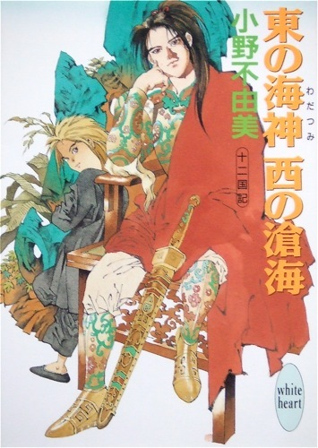
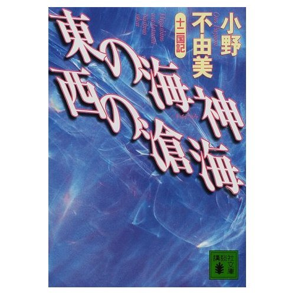

| [小野不由美] 十二国記シリーズ05 | |
| 小野不由美 | |
| (2015) | |
|
十二国記シリーズ 東の海神 西の滄海
小野不由美
|



|
東の海神 西の滄海 十二国記 |
序 章
世界の果てには虚海と呼ばれる海がある。この海の東と西に、ふたつの国があった。常には交わることなく、隔絶されたこの二国には、ともにひとつの伝説がある。
──海上遥か彼方には、幻の国がある、と。
そこは選ばれた者だけが訪ねることのできる至福の国、豊穣の約束された土地、富は泉のように湧き、老いも死もなく、どんな苦しみも存在しない。一方の国ではこれを蓬莱と呼び、もう一方の国ではこれを常世と呼んだ。
互いに異界に隔絶されたその二国、蓬莱国と常世国の双方で、ひとりの子供が目を覚ました。──ともに深夜のことである。
※
彼はふと、話し声で目を覚ました。暗闇の中、ぼそぼそと声が這う。父親と母親の声が家の外から聞こえたのだ。
家といっても、四本の棒の間、壁と屋根の代わりに筵を張っただけの粗末なものだ。寝床は土の上、虫の音が盛んな頃だけれども、くるまる布さえない。間近の兄姉の体温だけがよすがの寝床だった。以前住んでいたのはもっとましな家だったが、その家はもうない。焦土と化した都の隅で灰になってしまった。
「......しかたない」
父親の声は低い。母親は、でも、と口ごもった。
「そりゃあ、一番下だけれども、あの子は聡いから怖い」
彼は闇の中でぴくりと体を震わせる。自分のことを話しているのだと分かって眠気が飛んでいった。
「だが......」
「分別もあるし、知恵もまわる。同い年の他の子は、まだろくにしゃべれもしないっていうのに。まるでどこかから下されたみたいで」
「そりゃあ、そうだが。しかし、それにしたってまだまだ子供だ。きっとなにが起こったか分からんさ」
「そうじゃなく。あの子を死なせたら祟りそうで」
子供は襟をかきあわせる。暗闇の中で小さく丸くなって眠ろうとした。ふたりの声を聞いていたくなかった。彼は生まれてまだ四年と少ししか経っていなかったけれど、何の話なのか分かってしまったので。
声は続いていたが、彼は強いて聞かないようにした。意識から追い出して、無理にも眠りに落ちていく。
父親が、坊、と顔をのぞきこんできたのは、その二日後だった。
「お父は用事に行く。坊もいっしょに行くか？」
どこに、とも、なんで、とも彼は訊かなかった。
「うん。いく」
そうか、と父親はどこか複雑そうな表情で手を差し出した。彼はその手をしっかり握った。大きな手のごつごつした感触に包まれて、家を離れ、一面の焼け跡を歩いた。衣笠山からさらに奥に分け入り、斜面を何度も登り降りして、さすがの彼もどこから来たのか分からなくなった頃に、父親はやっと手を放した。
「坊、ここにいろな。すぐに戻る。待ってろ」
うん、と彼はうなずく。
「いいか、動くんじゃねえぞ」
うん、ともう一度うなずいて、何度も振り返りながら林を去っていく父親の背を見送った。
──動かない。かならず、ずっとここにいる。
彼は拳を握って、父親が姿を消した方向を見つめていた。
──ぜったい、家にかえったりしないから。
その誓いのとおり、彼はその場を一歩も動かなかった。夜になればその場に眠り、ひもじくなれば手の届く範囲の草をむしって根を掘った。飲むものは夜露でこらえた。三日目には、動きたくても動くことができなかった。
──大丈夫、ぜったい、もどったりしない。
戻れば両親が困ることを、彼は理解していた。
都は燃えつき、あたりは死者の骸で敷き詰められた。父親を雇っていた男は西軍の足軽に殺された。職もなく、家もない一家がこの先生きていくためには、働くこともできず、ただ食べるだけの子供を、ひとりでも減らさなくてはならないのだ。
彼は目を閉じ、意識が混濁するにまかせた。眠りに落ちる前に獣が草をかき分けるような音を聞いた。
──ここで、待ってる。
一家がなんとか生き延びて、落ちついて、幸せになって、それでふと彼のことを思い出して、弔いのためにやってきてくれるのを待っているから。
いつまでだって、待っているから。
※
彼は夜中に目を覚まして、人の話し声を聞いた。眠くて眠くて、どんな話だかは聞き取れなかった。ただ、母親がみんなから責められているのだということだけが分かった。助けてあげなきゃ、と思いながらまた眠りに引き込まれてしまった。
その翌日、母親に手を引かれ、子供は里を出た。
彼には父親がいない。母親は、父親は遠くの国へ行ってしまった、と教えてくれた。住んでいた廬が焼け、母親と彼は里に行って、里の隅の土の上で眠るようになった。たくさんの人間が集まっていたが、ひとりずつ欠けていって、やがてはほんの数人になった。子供は彼だけだった。
母親を除く大人たちは、彼に冷たかった。いつも邪険に殴られ、冷たい言葉を浴びせられた。特に彼がひもじいというと、必ずそうなのだった。
母親は彼の手を引き、声を殺して泣きながら、焼けただれて荒れ果てた田圃の中の道を歩いた。やがて山に入り、林の中を分け入っていった。こんなに遠くまで、彼は来たことがなかった。
林の中で、母親はやっと彼の手を放した。
「ちょっとここで休もうね。......水はほしくない？」
喉が渇いていたので、彼はうなずいた。
「いま水を探してくるから。ここで待っていておくれねえ」
歩くのにも疲れていたので、母親がいなくなるのは不安だったけれど、うなずいた。母親は何度も彼をなでて、そうして突然離れると、小走りに林を駆けていった。
彼はその場に座り込み、やがて母親が帰ってこないのに心細くなって、母親を探して歩き出した。母親を呼びながら、つまずきながら林をさまよったけれども、彼には母親の行方も帰り道も分からなかった。
寒かった。ひもじかった。いちばん辛かったのは喉が渇いたことだった。
泣きながら母親を探して歩いた。林を出て海岸に沿って歩き、やがて日も暮れる頃に彼はやっと里を見つけた。母親を探して里の中に駆けこんだが、見慣れない人々に出会っただけだった。どうやら違う里に来てしまったようだと、それだけが分かった。
男がひとり、彼の側に寄ってきた。泣きじゃくる彼から事情を聞いて、頭をひとつなでてくれ、水と食べ物をほんの少し与えてくれた。
それから男は周囲の人々と目を見交わし、彼の手を引いた。彼がこんど連れていかれたのは海の縁だった。青い海の向こうに、壁のように高い山がずっと続いているのが見える。崖の突端まで来ると、男はもう一度彼の頭をなで、ごめんよ、とつぶやいて、彼を崖から突き落としたのだった。
彼が次に目を開けたとき、暗い穴の中にいた。潮の匂いがぷんとして、それに混じって嗅ぎ慣れた腐臭がした。それは死体の臭いだ。彼はあまりにそれに慣れていたので、特に怖いとも思わなかったし、不審も感じなかった。
濡れた体がただ寒く、ただ寂しかった。近くで何かが身動きする音がしたので、そちらを見やったが、暗闇のせいで、小山のような影が見えただけだった。
彼は泣いた。怖かったのはもちろんだが、やはりなにより寂しかったのだ。
ふいに腕になま温かい息がかかった。彼がぴくりと震えると、次いでふわふわしたものが腕をなでた。鳥の羽毛の手触りにそれはよく似ている。この暗い場所には何か大きな鳥がいて、それが彼の様子をしきりにうかがっているのだった。
驚きのあまり彼が体を硬直させていると、それは温かな羽毛を押し当ててきた。まるでくるむようにして翼の中に抱え込む。あまりにそれが温かかったので、彼は羽毛にしがみついた。
「阿母......」
ただただ母親を呼んで泣いた。
※
──虚海の果てには幸福があるはずではなかったか。
蓬莱も常世も結局のところ、荒廃に苦しむ人々が培った切なる願いの具現に過ぎない。
虚海の東と西、ふたつの国で捨てられた子供はのちに邂逅する。
ともに荒廃を背負い、幻の国を地上に探していた。
一 章
１
──折山、という。
天を貫く凌雲山の、その巨大な峻峰でさえ折れようかというほどの荒廃。
六太は呆然と山野を見渡した。かつて一度見たこの国は、これ以上荒む余地などないかのように見えたのに、以前よりさらに酷いこのありさまはどうだろう。
薄く雲を浮かべた空は高い。残酷なほどの明るい空の下、夏が来ようとしているのに、地上には緑も紅もありはしない。砂漠のように荒れ果てた農地。小麦が緑の海を作っていなければならないのに、麦はもちろんのこと、はびこる雑草までもがない。ひび割れた大地と、そこにまばらに立ち枯れてそよぐなんとも知れない草は、いったいいいつ枯れたのか、暖かな黄味さえ失っている。
畦は崩壊し、廬のあった場所にはただ地所を囲む石垣があるばかり。その石垣もあちこちが壊れ、黒々と焦げ、さらにはそれが風雨にさらされ、くすんだわびしい色を晒している。
丘の麓に見えるのは里。里の隔壁もまた崩壊し、中の家々もわずかの瓦礫になってしまっている。廬を守り、里を守る樹木の一本さえ残ってはいなかった。火にあぶられて燻し銀の色に変じた里木だけが里の奥にぽつんと立って、その木の根元にいつまでも身じろぎさえせず幾人かの人影が座りこんでいる。まるで置かれた石のように、誰ひとり動かない。
その里木の上を数羽の鳥と、それより多い鳥に似た妖魔が旋回していた。里木には葉も花もつかない。ただ白いだけのまばらな枝ごし、上空から妖魔が狙っているのが見えていないはずはないのに、誰ひとりそれを振り仰ぎもしない。里木の下にいる生き物を獣も妖魔も襲わない。だからといって、無視できるものだろうか。もはや妖魔に恐怖を抱くこともできないほど、その人々は疲弊しているのだ。
山の緑は焼きつくされ、川は溢れ、廬という廬、里という里が灰燼に帰した。すでに実りを望める土地はなく、その荒れ果てた土地に鍬を入れようとする民もいない。翌年の実りを期待して働くには、彼らはあまりにも疲れ果てていた。鍬を握ろうにも飢えた手には力が入らず、ましてや助け合って体を支えあうほどの数もない。
旋回する妖魔のほうもその翼が萎えがちだった。妖魔もまた飢えているのだ。見守る六太の目の前で一羽が落ちる。魔物でさえ食い荒らすことのできなくなった荒廃だけがそこにはある。
折山の荒、亡国の壊。
──この雁州国の、あたかも終焉のような。
先帝は諡号を梟王という。即位して長く善政を布いたが、いつのまにその心に魔がきざしたのであろう、やがては民を虐げ、悲鳴を聞いて悦ぶようになった。町の角ごとに兵を置き、これを耳目として、王の不満を言うものがあれば即座に捕らえて一族縁者に至るまでを街頭で処刑させた。反乱があれば水門を開けて一里を水中に沈め、あるいは油を流しこんで火矢を放ち、嬰児に至るまでを殺しつくした。
一国の諸侯は九。心ある諸侯は王によって誅殺され、もはやとどめる者もない。
これに心を痛めた宰輔が死病の床に就くと、天命はつきたと自ら傲然と言い放って、自己のための巨大な陵墓を建設させた。役夫をかき集め、二重の長大な濠を掘らせ、掘りあげた土砂と惨殺した役夫の死体で見上げるほども高さのある広大な陵を築いてみせたのである。死後の後宮に侍れと、殺された女子供はその数十三万とも言われる。
梟王が弊れたのは陵墓の完成間際、すでに国は荒廃し、塗炭の苦しみに喘いでいた万民は、崩御の知らせを聞いて声を合わせて快哉を叫び、その声は他国にまで届いたという。
民の期待は次王に向かったが、次王はついに登極しなかった。この世では王は麒麟が選ぶもの。神獣麒麟が天啓をうけ、天意にそって王を選ぶ。選んでのちは王の臣下にくだり、間近に控えて宰輔を努めるが、その宰輔が、王を探し出すことのできないまま三十余年の天寿つきて弊れてしまったのである。開闢以来、八度目の大凶事であった。
王は国を統治し、国の陰陽を整える。王が玉座にいないだけで、自然の理は傾き、天災が続く。梟王によって荒廃した国土は、この凶事によってさらに荒廃した。すでに人々は悲嘆を叫ぶ余力もなかった。
──そしてこの荒廃がある。
六太は丘に立ったまま、視線を転じて傍らに立つ男を見上げた。男はただこの荒土を眺めている。
六太は号を延麒という。子供の姿をしていても、その本性は人ではない。この雁国の麒麟、傍らの男を王に選んだ。
──国がほしいか。
六太はこの男にそう訊いたが、国は傾き、すでに治めるべき土地も民もないに等しい。
──それでもよければ、おまえに一国をやる。
ほしい、と言い切った男は、いまこの廃墟と化した土地を見て何を思っているのだろう。よもやこれほどの荒廃とは思っていなかったにちがいない。
嘆くか、怒るか。──そう思って見上げた男は、見つめる視線に気がついたのか、ふいに六太を振り返った。そうして笑う。
「みごとに何もないな」
六太はただうなずいた。
「無から一国を興せということか。──これは、大任だ」
いっこうに難儀を感じていない調子でそう言う。
「これだけ何もなければ、かえって好き勝手にできて、いっそやりやすいことだろうよ」
男はあっけらかんと声をあげて笑った。
六太は俯いた。なぜだか、泣きたい気がしたからだ。
どうした、と訊いてきた声がおおらかで温かい。六太は大きく息を吐いた。押しつぶすほどの重量で肩にのしかかっていたものがあったことをやっと知った。それが消え去ったいまになって。
さて、と男は六太の肩に手をのせる。
「蓬山とやらに行こうか。大任をもぎとりに」
もはや肩に感じるのは男の掌の重みだけ。生を受けて十三年。十三年ぶんの命が背負うにはあまりに重い一国の運命を、任せるべき相手に委ねることができたのだ。──それが良きにしろ悪しきにしろ。
六太は軽く肩を叩いて離れてゆく男を振り返る。
「──頼む」
何を、とは言わなかったが、男はただ笑った。
「任せておけ」
２
「......緑になったよなぁ」
六太はぼんやり宮城の露台から雲海越しに見る関弓の緑に見入っていた。
新王登極から二十年。国土はなんとか復興に向かいつつある。
雁州国、その都、関弓山。王宮である玄英宮はその山の頂上にある。一面に広がる雲海の中に浮かんだ小島である。
空の高所には雲海があってこれが天上と天下を隔てる。天下から見上げても水のあることは分からない。凌雲山の山の頂に打ち寄せた波頭が白く雲のように見えるだけだ。天上から見ればうっすらと青みを帯びた透明な海、その深さはほんの身の丈ほどに見えるのに、潜ってみてもとうてい底にはたどりつけない。その雲海の水を透かして地上が見えた。小麦が作る碧い海。山々によみがった緑、廬や里を守る木々。
「二十年でこんだけ、って言い方もできるけど」
六太は手摺に両腕をのせて、腕の間に顎を埋めている。雲海の水が露台の脚にぶつかり、音を立てて崩れては潮の匂いを打ち寄せていた。
「──台輔」
「ま、こんだけでも上出来か。玄英宮に入ったときには真っ黒な地面以外、なーんも見えなかったもんなぁ......」
かつては一面の焦土だった。二十年をかけてとりあえず緑が目立つ程度には、国は立ち直り始めている。他国に脱出していた人々も徐々に戻って、農作業する人々が声を合わせて歌う声が年ごとに大きくなっていた。
「台輔」
「──んあ？」
六太は手摺に肘をついたまま振り返った。書面を持った朝士がにっこり笑う。
「おかげさまをもちまして、今年の麦は良い出来のようでございます。台輔におかれましては、ご多忙のさなかにまで下界へのお気遣い、民に代わってお礼申しあげますが、拙官の奏上にもいま少しお気遣いいただけますと、さらに嬉しく存ずるのでございますが」
「聞いてるって。どんどん続けて」
「失礼ながら、いま少し真摯にお耳をお貸し願えないでしょうか」
「まじめ、まじめ」
朝士は深い溜め息を落とした。
「そのように子供じみた格好をなさらず、せめてこちらをお向きください」
六太が腰を下ろしているのは露台に置かれた陶の獅子の頭の上で、これはいささか椅子には高い。気がつけばもてあました足をぷらぷらと揺すっては欄干を軽く蹴っている。
六太は背後に向き直って、にっと笑ってみせた。
「おれ、まだ子供だしー」
「御歳お幾つにおなりで？」
「三十三」
齢三十を過ぎた地位のある男のすることではないが、外見ならば十三かそこらに見えるだろう。別段奇異なことではない。雲海を見下ろして暮らす者は総じて歳をとらないものだからである。六太に限り、もう少し歳をとってもよかったはずだが──麒麟は普通、十代の半ばから二十代の半ばで成獣になる──、玄英宮に入った頃からぴたりと成長が止まってしまった。外見が成長しないと中身も成長が滞るのか、はたまた他者が外見に従って子ども扱いするからなのか、気性のほうもやはり十三のまま、少しも成熟した感がない。ちなみに歳は夫役の関係から満で数えるのが習わしである。
「責任ある御方が、壮年にお入りになって、いまだそのありさまとは。宰輔といえば王を補佐して民に仁道を施すのがお役目、臣の中では唯一公爵位をお持ちになる重臣の筆頭、いま少しご身分を自覚していただきたいものです」
「ちゃんと聞いてたってば。漉水の堤防だろ？でも、そういうことは主上に言ってもらわないとなー」
朝士は細く形のいい眉をぴくりと動かす。色白で痩身の優男だが、この外見に騙されてはならない。氏は楊、字は朱衡、王自ら下した別字を無謀という。無謀の字はゆえのないことではない。
「......では、おそれながらお訊きしますが。その主上はどちらにおいでで？」
「おれに訊くな。関弓に降りて女でも引っかけてるんじゃねぇの？」
朱衡は柔和な顔に微笑を浮かべた。
「台輔はなぜ朝士の拙めが、漉水の話をさせていただいているのか、お分かりでないようですね？」
「あ、そっか」
六太はぽんと手を叩く。
「治水のことは、しかるべき官から言ってもらわないと。おまえの仕事じゃないだろう？」
朝士は警務法務を司る官、特に諸官の行状を監督するのが務めである。治水工事ならば土地を司る地官の管轄、少なくとも地を整える遂人か、さらに形式を言うなら、地官長もしくは六官をとりまとめる冢宰が奏上するのが筋であろう。
「ええ、わたくしの仕事ではございませんとも。しかしながら、延はこれから雨期、治水が至らねば台輔がただいまお慶びの緑の農地も、ことごとく沈んでしまうのでございます。一刻も早くご裁可をいただかなくてはならないものを、肝心の主上はどちらにおいでなのでございますか？」
「さー？」
「この件に関しまして、今日この時刻をご指示なさったのは他ならぬ主上でございます。責任ある御方がお約束を反故になさるとは。王は諸官の模範となるべきお方でございますのに」
「あいつはそういう奴なんだってば。ほんと、でたらめなんだもんなー」
「主上は国の御柱、その大柱が揺らげば国も揺らぎましょう。朝議にもおいでにならない、御政務のお時間にもどちらにおられるか分からない。そんなことで国がたちゆくとでも思し召すのですか？」
六太は上目づかいに朱衡を見上げた。
「そういうことは、尚隆に言ってほしーんだけど」
朱衡は再び柳眉を震わせて、いきなり書面で卓を叩く。
「──台輔が今月、朝議にいらしたのは何度ですかっ？」
「えーと......」
六太はじっと手を見て指を折る。
「今日と、こないだと、......それから」
「お教え申しあげれば四度です」
「お前、よく知ってるな」
朝士は朝議に参加しない。それほど高位の官ではないのである。六太が半分、呆れた気分で見上げると、朱衡はたいそう柔和な笑みを浮かべた。
「それはもう、王宮の端々で諸官が嘆いておりますから。──朝議というのは、本来毎日あるものなのですよ、ご存知ですか？」
「それはー」
「それを三日ごととお決めになったのは主上でございましたね。三日ごとといえば月に十度。もはや月が終わろうというのに、台輔のお出ましがあった朝議がわずかに四度とはどういうわけでございますか？」
「えーと」
「主上におかれてはわずかに一度！ 主上も台輔も国の政をいかが思し召しか！」
ごつん、と激しい音がした。露台で椅子が倒れた音である。六太が見ると、いつのまにか遂人の帷湍が控えていたらしい。その帷湍も額に青筋を立てて肩を震わせている。
「どうして、王宮におとなしくしていないんだ、この主従は！」
「帷湍、いつのまに来てたんだー？」
六太の愛想笑いは凍てつくような視線でもって迎えられた。
「まったく、この浮かれ者どもが。雁が成り立っているのが不思議だぞ！」
「大夫、大夫」
朱衡が苦笑交じりにたしなめたが、帷湍はすでに踵を返している。
「大夫、どちらへ」
「──ひっとらえてくる」
足音高く出ていった異端を見送って、六太は溜め息をついた。
「あいにく」
朱衡は微笑って六太を見る。
「拙も帷湍ほどではございませんが、たいへん気の短いほうで」
「あ、そお？」
「朝議にはお出ましにならないゆえに、いっこうにご裁可がいただけず、帷湍めがあえて奏上申しあげれば、後日にせよとおっしゃる。今日この時刻をご指定いただいたものの、待てど暮らせどおいでにならない。本来ならば、そういったときにこそ王を補佐するお役目の台輔にお聞き届けいただかなくてはならないものを、その台輔までがうわのそら」
「えーと」
「再度このようなことがございましたら、拙にも覚悟がございます。畏れおおくも主上といえど、台輔といえど、容赦いたしませんのでそのおつもりで」
「あはははは......」
力なく笑って六太は頭を下げる。
「悪かったです。反省します」
朱衡はにっこりと笑う。
「苦言を心広くお聞きになる、それはたいへん結構でございます。本当にお分かりいただけましたでしょうか？」
「分かった。ほんと」
では、と朱衡は懐から書物を出して六太に向かって差し出した。
「この太綱の天の巻、一巻には天子と台輔の心得が書いてございます。反省の証として朝議をお休みになったぶんだけ書写なさいませ」
「朱衡ぉ」
「明日までに一巻を六部でございます。──よもや嫌とはおっしゃいませんでしょうね？」
「そういうことをしてたら、政務が滞るんじゃないかなー？」
上目づかいに見上げた優しげな顔は、けちのつけようのない笑顔を浮かべる。
「いまさら一日滞ったところで、大差はございませんよ」
３
朱衡は風を受けながら、王宮の道を歩く。内宮から退出したところだった。
雁は四州北東の国、寒冷の土地である。冬は北東からの乾いた季節風にさらされて寒く、夏は黒海から吹きこむ冷たい風にさらされる。季節は夏を経て秋が忍び寄ろうとしている。黒海からの風は日増しに弱くなって、太陽に温められた大地の温みが大気をも暖めている。夏は涼しく、雨がなく、植物の繁茂には適さないが、そのかわりに秋が長い。ふわふわといつまでも暖かくて、北東からの条風が吹き始めると、いきなりのように寒くなるのだ。
王宮は雲海の上だから、下界の気候とは関係がない。それでもいまはまだ、下界の風もこれと大差ないだろう。これから雁は秋に向かい、秋の終わりにひと月ほどの雨期がきて、雨がやむと条風が吹く。それは戴国から乾ききった震撼するような冷気を運んでくるのだ。
「漉水か......間に合うといいが......」
朱衡は雲海の西を見やった。雨期が来るまでに漉水の治水がなるか。
漉水は関弓のある靖州から黒海沿岸元州に向かって注ぐ大河である。元州には平野部が多い。季節毎に氾濫を繰り返す漉水が作った肥沃な平野だった。黒海に面する沿岸部一帯は梟王が堤を切って以来、人の住めない土地になってしまったが、念願の帰国を果たした人々が開拓をはじめて、かなりの数の村落ができていると聞く。元州州侯の手には負えない。有名無実で治水を行う実権がないのだ。現在まだ先帝が任じた州侯は整理されておらず、そのほとんどの実権を取り上げられてしまっている。
軽く溜め息をついて足を進めていると、ちょうど帷湍が石段を上ってくるのに行き合った。
「──いかがでした」
朱衡が笑い含みに問うと、帷湍はキッと顔をあげる。
「首根っこを掴んで連れ戻してきた。内宮で衣服を改めておられる」
ならば一緒に禁門を通って内宮に行き、そこで話をすればよかろうに、この男はわざわざ正門を通って戻ってきたらしい。雲海の上に浮かぶ玄英宮には直接出入りできる門がひとつしかない。これを禁門といい、麓関弓から登る道にある五門を正門という。本来禁門は王と宰輔しか通行できないのだが、帷湍は禁門を使う特権を下賜されている。なのに、そういうところだけは堅苦しい男である。
「ならば、わたしも戻りましょう。ひと言申しあげねば」
「がっちりとっちめてやれ。──どこにおられたと思う？」
「さて」
「関弓の妓楼で賭博に興じて、有り金を巻き上げられたそうだ。借金のかたに乗騎を取られて戻るに戻れず、そのぶん庭掃除をして返すのだと箒を握っているところを捕まえた」
朱衡は声をあげて笑った。
「尚隆さまらしい。──それで借金を立て替えてきたのですか」
「踏み倒すわけにはいかんだろう。だからといって、返すまで下働きをさせられるか。まさか正直に王だと言って、許してやってくれとも言えまい。あれが自国の王だと知ったら、連中は落胆して号泣するぞ」
「──でしょうねえ」
雁は一度滅びたとさえ言われる。それほど荒廃が深かった。新王の践祚は国民の悲願だった。その悲願がそのありさまでは、本当に落涙する者もあろう。
「まったくあの、のんき者が」
王を相手に、これだけ悪態を言ってのける者もいないかもしれない、と朱衡は苦笑した。
帷湍はもともとは田猟といって、人民を管理し、納税のための台帳を整備する官だったが、革命にあたって遂人に抜擢された。それも、王自ら猪突という字を下して、あらゆる特権を与えてのことである。帷湍は王の寝所に立ち入り、禁門を使用し、内宮の奥まで騎乗して行くことができ、王の前で平伏しなくてもいい。──だが王を罵っていいという特権などはなかったと思うのだが。
「鷹揚なお方だから、あなたも首が繋がっているのでしょう？」
新王が玉座について、玄英宮の諸官は新王に慶賀を述べて拝謁した。その誉れある祭典のさなかに、帷湍は戸籍を鷲掴みにし、王の足元に投げ捨てたのである。
朱衡が言うと、帷湍は嫌な顔をした。
「......古い話を持ち出すな」
──かつて、天帝は地を開き、十二の国を興した。人を選んで玉座に据えた。これが王、天帝の意を受けて選んだのは麒麟である。
麒麟は一国に一、揚力甚大の神獣であり、天意を受けて王を選ぶ。その麒麟が生まれるのが世界中央にある五山東岳蓬山、自ら王たらんと恃む者は蓬山に昇って麒麟に面会する。この麒麟に面会して天意を諮ることを昇山という。
──なぜ、と帷湍は戸籍を玉座の壇上に叩きつけた。
「なぜ登極に十四年もかかった。麒麟は六年もあれば王を選べる。貴様がもたもたと昇山せずにいたせいで、八年もの歳月が無駄になった。これはその八年分、関弓の戸籍だ。八年の間にどれだけの民が死んだか、その目で確かめろ」
新王登極に浮かれていた場は、一瞬のうちに静まり返った。
異端は玉座の王を見る。彼はただ興味深そうな表情で、階の上に投げ捨てられた戸籍と帷湍を見比べていた。
八つ当たりだったのかもしれない。帷湍はただ、雁の窮状を王に知っていてほしかった。信じがたいほどの荒廃だった。玉座の埋まった王宮には光があふれていたが、下界には死と荒廃が蔓延している。誰もが新王さえ践祚すれば、と望みをつないでいたけれども、帷湍にはそれだけで国が立ち直るとはとうてい信じられなかった。
無礼な、と死を賜ることなど覚悟のうえだが、帷湍とて死にたかったわけではけっしてない。梟王の圧政を、王に背かず、道にも背かず、王の不興もかわぬよう、かといって良心に悖ることもないよう、それは綱渡りするような気分でかろうじて生き延びてきたのだ。
新王が践祚した、これで全てがよくなると、官の誰もが言う。だが、すでに起こったことをなくすることは王とてできない。死んだ命は返らない。それを忘れて浮かれている官が恨めしかったし、きっと登極した喜びに浮かれているであろう王が恨めしかった。
これで自分が死んでも、晴れがましい場で起こったこの不快な出来事を王は忘れることができないだろう。諸官は登極早々臣下を斬る王を見て、梟王の暴虐を思い出し、少しは浮かれ気分をおさめるだろう。根拠もなくめでたいを連発する連中の、胸に落ちる一個の不快な石になるならそれでよかった。
異端は新王を見る。新王は帷湍を見る。しばらくの間、その場には空気の流れさえ絶えた。凍りついて動かない人々の中で、最初に動いたのは新王だった。ふ、と笑って御座を離れ、こだわりもなく戸籍を拾いあげる。軽く埃を払って帷湍に笑った。
「目を通しておく」
帷湍は呆然とし、しばらくその男を見つめていた。護衛する小臣らにその場を引きずり出され、時の地官長大司徒に官籍を剥奪された。おとなしく家に帰り、処分を待って謹慎していた。逃げる気にはなれなかったし、兵が門前を固めていたので、そもそもそれはできなかった。
自ら謹慎すること五日。門を叩いた勅使は勅命を携えていた。いわく、復職を許し遂人に叙すと。呆然としたまま拝謝のために昇殿した帷湍に、猪突猛進なやつだ、と王は笑い、のちに猪突と字を下賜し、今日に至っている。
「──わたしは当時、官席を賜ったばかりの小官だったけれども、その噂を聞いてその場に居たかったと心底思ったな」
朱衡がさもおかしそうに笑うので帷湍は憮然とする。他人にすればさぞ面白い噂話だろうが、帷湍にすれば笑うどころの話ではない。本気で死ぬ覚悟だったのである。
さすがにその当初は帷湍も王を敬って、愚痴ひとつ言わないという敬虔さだったが、あっという間にそれも絶えた。殊勝にしていては身がもたない。賭博で有り金をなくし、政務に戻ってこれない王に対していつまでも頭を下げてばかりいられるものか。
「なんと懐の広い方だと、感動した自分が憎いぞ、俺は。懐が広いわけじゃない、単にのんき者なんだ、あいつは」
「帷湍殿、口を慎まれたほうがよろしくはないか？いま少しご身分を弁えられて、礼をお忘れにならないほうが御身のためかと」
「──お前にだけは言われたくないな」
帷湍は朱衡を見る。朱衡はもともと春官の一、内史の下官だった。王が内史府を巡視したときに、王に対して朱衡は言ったという。
すでに謚は用意してある。興王と滅王がそれだ。あなたは雁を興す王になるか、雁を滅ぼす王になるであろう。そのどらちがお好みか、と。
帷湍が指摘すると、朱衡は軽く笑った。
「なに、大夫のまねをしたまで。どうやらそのほうが出世のためのようだったので」
「それは通らんな。あれは登極三日目のことだろう。俺はまだ謹慎中だった」
「そうでしたか？ いや、寄る年波のせいで物覚えが悪くて」
お前な、と帷湍は朱衡の済ました顔をねめつけた。彼らはともに若いが、それは外見だけのこと、すでに年波を語ってもおかしくはない実年齢になった。
「そのわたしが朝士ですからね。いやはや、なんとも主上はお心が広い」
──どっちも嫌だな、と王は答えた。
朱衡の無謀の動機も、帷湍の動機と大差ない。朱衡もやはり、死を賜る覚悟だった。そもそも朱衡は国官ではなく、国官の内史が己のために雇い入れた府吏、王に向かって直接口をきくことさえ罪に値するのである。怒ってこの場で死を命じるか、それとも。
見守る朱衡の前で新王は顔をしかめた。
「どちらも断る。そういう凡百の言葉で名づけられたのでは恥ずかしくてしょうがない」
え、と問い返す朱衡に王はまじまじと視線を向けた。
「史官というのは、その程度の文才で務まるのか？頼むから、もう少し洒落た名前を考えてくれ」
「ええ......あ──はい」
「お前、史官に向いていないのではないのか？」
そうかもしれません、と恥じ入った朱衡の許に勅使が来た。よくても解任かと肚を括っていた朱衡を内史の中級官である御史に召し上げ、のちに秋官朝士に任じたのである。
「──俺とお前が側近だからな。ひょっとしたら王は、単に減らず口をたたく奴が好きなだけなんじゃないのか？」
帷湍の言葉に朱衡は笑う。
「本当に、そうかもしれません」
笑ってから、朱衡は表情を改めた。道をやってくる足音を聞いたからである。
やってきたのは冢宰とその府吏、朱衡も帷湍も礼に従って道を譲り、軽く頭を下げて冢宰らを通す。俯いた頭上にその声は降ってきた。
「はて、この道は内殿に向かうと思ったが」
これ、と府吏のひとりが朱衡らに声をかけてきた。
「こんな所で何をしておられる。まさか道に迷われたのか？」
朱衡も帷湍も返答しない。内殿にまで昇殿を許されている官は限られている。二人の官位では本来、内殿に入ることを許されない。ふたりは王から直々に特権を得ているが、これは破格の待遇なのである。特待を妬んで皮肉を言うものなどいくらでもいる。朱衡も異端もすでに慣れていた。
「これから内殿に向かわれるのか？」
は、と帷湍が短く返答すると、冢宰らは聞こえよがしに溜め息をついた。
「やれやれ、では、主上は御政務どころではございますまい」
「これからお気に入りとお遊びの時間じゃ」
「お邪魔をしてはお叱りがある。まったく、いつになったら御政務にお就きになるやら」
「誑かす下郎がおるからのう」
俯いたふたりの前を嘲笑が通り過ぎる。おそらくは東の府邸へ戻るのだろう、引き返す足音が絶えるのを待って帷湍が顔をあげた。建物の間を縫う石畳を見やって低く吐き捨てる。
「......どっちが下郎だ。梟王から位を買った奸臣どもが」
朱衡は苦笑した。奸臣という言い方は不当ではない。梟王が道を失い、政務に興味を示さなくなったのをいいことに、官は専横を極めた。あるものは金で官位を買い、そうして支払った以上のものを国庫からかすめ取った。梟王の歓心ほしさに暴虐を諌めるどころか煽りたて、みすみす国土を荒廃せしめた。
「皮肉を言うぐらいしか能がない連中だから、よしとしてあげなさい」
「王が遊びほうけているのは、俺たちが唆しているせいだと思っているのだぞ！あいつが放蕩者だから俺たちまでが悪し様に言われる」
歯噛みする帷湍に対して、朱衡はなおも苦笑するにとどめた。
「悪し様に言われるのは、しかたのないことでしょうねえ」
帷湍は遂人、位で言えばたかだか中大夫にすぎない。冢宰は候、四位も下の遂人ふぜいが様々の特権を与えられ、冢宰の自分が王に面会するのにもいちいち取り次ぎを頼まなくてはならないのだから、腹に据えかねて当然だろう。朱衡などは帷湍のさらに下、下大夫にすぎない。
「しかたないですます気か。あのうつけ者をなんとかしろ！」
「わたしに言われても困ります」
「だいたい、成笙が悪い。いちばん近くにいるんだから、首根っこ捕まえて玉座に括りつけておけばいいんだ」
王の身辺警護の者にまで悪態をつく帷湍を、朱衡はやや呆れた気分で見やった。
「そんなに腹を立てるほどのことですか？」
「お前は腹が立たんのか。王に遊興をすすめる賊臣のように言われているのだぞ！あげくには龍陽の寵などと！」
「それは、お疲れさまです」
「莫迦野郎！ お前がそう言われているんだ！」
朱衡は笑って、次いで声を低める。
「口さがない連中には言わせておきなさい。そろそろ主上は諸官の整理を考えておられます」
帷湍は石段を上る足を止めた。
「いよいよか」
「内政はほぼ落ちついて、行くべき方向は定まっています。道は敷かれた。あとはただ輛を走らせるだけです。これまでに諸官整理にまでは手が回らなかったけれど、どうやら諸侯諸官をすげ替えてもいい時期にきたようです」
州侯および諸官を任じたのは梟王である。新王践祚の際にこれを全部罷免し、新官を登用してもよかったが、それに時間を割かれることを惜しんで、あえてそのまま残してある。州侯の実権だけは制限し、各州に牧伯を置いて監督させ、官のほうは側近だけを厳選してしのいできたが、いつまでも梟王のもとで阿諛と追従によって安逸を貪り、民を虐げることに荷担していた連中をそのままにはできない。
「朝廷は荒れます。罷免されずにすんだと多かを括っていた連中は、あわてふためいて暗躍を再開するでしょう。どこでどう足元をすくわれるやら分からない。しばらくは愚痴を控えたほうが」
「......二十年か。よく保った。あんな連中でも多少は心を入れ替えたらしい」
「なに、国庫から利をくすねようにも、くすねる財がなかっただけですよ。ですが、最近妙な動きをする官が増えましたね」
「冬の間、土の中にもぐってやり過ごしていた連中が、ようやく冬を過ぎて動き出したというわけだな」
帷湍は付近の建物に目をやった。
「長い冬だったが......」
雁国民悲願であった新王登極のあの頃、まだ玄英宮は金銀の輝く壮麗な宮城だった。いまのこの宮には華美なところがない。幽玄の宮などと言われているが、王が全ての装飾、金銀や財宝を──それこそ玉座の石まで──はがして売り払ってしまった。それほど雁は困窮していたのである。建物の数も半分近くに減った。王が解体し、材木から石材に至るまで売り払ってしまったのだ。関弓山の峰に続く屋根の黒色だけが、あの頃と変わっていない。
王宮は初代の王が天帝から賜ったという。ゆえに憚り、歴代の王は王宮に手を加えることはしても、取り壊したりはしてない。王朝の歴史そのものである建物の、装飾を身ぐるみはいだのみならず、解体して売り払うというのだから官の狼狽はただごとではなかった。
やれ、のひと言で命じた王は、梟王の元で国庫の富をかすめ取り、私服を肥やした連中を放置した。諸侯諸官を解任し、その私財を押収することは可能だったが、あえてそれをしなかった。そんなことをしている余裕さえなかったのだ。荒廃した国土から収穫があげられるよう、地を治めるほうが先だった。
田畝は焦土と化した。そこに鍬を入れても、耕した民の生活を支えられるほどの実りがあるようになるまでに二十年がかかった。王宮の御物を他国に売り払い、蔵の中の物という物、それこそ兵の小太刀にいたるまでを売り払って、かろうじて食いつないできた。
──預けておいたと思えば良い。ああいった連中は貯めこむことに熱心だから、さほど損失はないだろう。派手に使っている者だけを取り締まれ。時が来れば一気に返済してもらう。
王はそういった。その時が来たのだ。
「のんき者だが、莫迦ではない」
帷湍が低く言うと、朱衡は軽く笑った。
「有能だがでたらめだ、ぐらいにしておいてあげなさい」
４
その有能だがでたらめな雁国王は、内宮の私室で四人の人間にこんこんと諭される羽目になった。
「......お前たちの言い分はわかった」
尚隆は周囲の四人を見比べる。帷湍は憮然として自王をねめつけた。
「分かっただけか」
「反省した」
「俺はあれほど恥ずかしい思いをしたのは初めてだぞ。この恨み、滅多なことでは忘れんからな」
「まったく、まったく」
帷湍の背後からしたりという風情の合いの手があがったが、これには帷湍は構わない。本当に、と朱衡が溜め息をついた。
「主上にあってはご自身のお立場をいかが思し召しなのですか。国の範たる王がそれで、いかにして諸官を治めるおつもりです。模範となるべき御方が、このありさまでは。拙とて民に顔向けができません」
「だろう、だろう」
まったくの無表情で滅多に開かぬ口を開いた男がいる。
「呆れ果てて開いた口が塞がらぬ。こんな愚王に使われる己までが不甲斐ない」
「酔狂、お前まで小言か？」
字は酔狂、別字を成笙という。褐色の肌をもつ痩身の小柄な若い男だが、軍事を司る司馬の官、特に王の身辺を警護する小臣の長、大僕である。梟王によって禁軍将軍に登用され、知略に優れ武道に秀でること比類なしと言われた。梟王に諫言して捕らえられたが、あの昏帝でさえ殺すことを惜しんで幽閉させた。梟王が弊れてのち諸官が石牢から出そうとしたが、本人は王によって投獄されたのだから、王の赦免がなければ出ないという。そのまま新帝によって赦免されるまで錠の下りてもいない牢に五十年近く居座りつづけた剛の者である。
「......そういう、くだらない名を勝手につけないでいただきたい」
「気にいらんか？」
「あたりまえです」
憮然とした成笙を、帷湍は恨めしげに見た。
「お前はまだましだ。俺なんぞ、猪突だぞ」
王から直々に字を下賜されるといえば、これ以上の名誉はないが、その名誉の中身が猪突だの酔狂だの無謀だのでは、ありがたみなどありはしない。さらに言えば、尚隆が麒麟である宰輔六太に下した字は馬鹿という。馬と鹿の間のような生き物だからいいだろう、と尚隆はそう言ってひとり悦に入っていたが、認知するものがいようはずもないのである。
まったく、と帷湍は苦々しげな顔をする。
「軽佻浮薄とは、こいつのことを言うのだ」
「しかり、しかり」
今度は、三者がいっせいに背後を振り返った。
「台輔も同罪です！」
いきなり冷たい視線を浴びて、無責任に合いの手を入れていた六太は首をすくめる。
「おれは別に、賭事なんてしてないぞっ」
「では、朝議をお休みになった間、どちらにおいでだったのか、お聞かせ願いましょう」
朱衡に迫られて、六太は愛想笑いを浮かべた。
「──視察。国がどのていど復興しているか、とかだな」
「では、その成果をお聞かせくださいませ」
「えーと......」
「主を裏切るからだ」
ぼそりと言われて六太は自王を見る。
「そもそもお前が遊び歩いているからだろーがっ。おれまで小言を言われてんだぞ、冗談じゃねえや」
「そういうお前もサボっているんだろうが？」
「てめーほどじゃねぇよっ！」
「五十歩百歩という言葉を知っているか？」
「似たようでも五十歩の差は確実にあるって意味だろ？」
だん、と朱衡は卓を叩く。
「いま少し真面目にお聞きいただきたいのですが」
分かった、と尚隆は手をあげる。
「反省した。政務はさぼらぬ。──それでいいのだろう？」
「ご本心でございましょうね？」
「西のほうがキナ臭いことでもあるしな。しばらくおとなしく玉座を温めている」
四者がいちように尚隆を見た。
「──西」
「元州だ。出てくるぞ」
帷湍は背後を振り返る。帷湍らが集うときには必ず人払いをしてあるが、誰もいないことを改めて確認する。
「......それは」
「街で仕入れた。元州は近頃ずいぶんと羽振りがいいそうだ。月に何度も元州師の兵がやってきては妓楼に大枚を落としていく。来るときは手ぶらだが、帰るときには大層な荷があるそうだぞ」
「関弓で何かを仕込んで──？」
「食料なら問題はないが、武器だったとしたら？」
しかし、と朱衡が首を傾ける。
「謀反の備えになるほどの武器が調達できるとも思えません。街じゅうの武器を買い漁れば、それこそ噂になりましょう」
尚隆は笑って成笙を見やる。
「関弓には王師の武庫があるな」
成笙は目を細めた。武庫を管理する官が武器を横流ししていないか。梟王が武庫にかき集めた武器の数は尋常ではない。それを売り払い、国庫の足しにしてきたが、あまりに大量の武器が出回ったせいで、のちにほとんど値がつかなくなった。それでいまも、武庫には武器がうずたかく積まれている。
「しかし、元州候は」
朱衡の声に帷湍がうなずく。
「梟王の勘気を恐れ、梟王が弊れてからは民の報復を恐れ、いまに至っては主上の罷免を恐れて内宮の奥深くに隠れたまま出てこないと聞いている。気を病んでいるという噂も」
「......窮鼠猫を噛むというからな。思いつめた奴のほうが怖い。そのうえ元州には切れ者の令尹がいるだろう。元州候の伜だ。──斡由といったか」
帷湍は瞬いた。
「よく知っているな」
「街で仕入れたのだ。民の噂話というものは、そんなに侮ったものでもない」
「なるほど......」
感心したような帷湍をちらりと見やって朱衡は軽く咳払いする。
「おそれながら、主上」
「なんだ？」
「王ともあろうお方が、わざわざ民草の間にお降りになって、間諜のまねなどせずとも良いのです！」
やれやれというように天井を見上げた尚隆を笑って、六太は席を立った。
「──どうした、六太」
六太は部屋を退出しながら振り返る。
「おれには向かない話になってきたから、出てる」
二 章
１
王と帷湍らを残して、六太は露台に出る。すでに陽が落ちて、夕景は暗い。東のほうから細い三日月が昇ろうとしていた。
「......血生臭い......」
おそらく戦いになるのだろう。諸侯も諸官も、なかなかに腹黒い連中が揃っていたから、これまで内戦が起きなかったほうが不思議だ。
血生臭い予感を風に流しながら、六太は庭を歩く。気分が沈んでしまうのは、生来、戦いや流血が嫌いだからだ。
──任せておけ、と尚隆は言った。だが、戦いは嫌だ。たくさんの兵が死んで、罪もない民が巻き添えをくう。
小さな宮の側まで来て、六太はなんとなくその門扉を押し開ける。微かにきしんだ音を立てて門が開く。門番の詰め所はあるが、人の姿はない。本来なら不寝番がいるはずだが、王宮には人が少なかった。梟王が殺しつくしてしまったのだ。それで数の少ないところに、新たな官を登用していないものだから、王宮はどこも閑散としている。
前院を抜けてさらに奥の堂屋に入る。そこには小さな院子がある。白州の中に立っているのは一本の白銀の木だった。低く枝を垂れた姿。まるで銀で作ったようなその枝の色。
──この木から人は生まれるのだ。
子供がほしい夫婦はこの木に子を願う。天がそれを聞き届ければ、枝に卵果と呼ばれる果実がなる。子供はその中に入っている。子供が孵るまで十月、しかし孵る前に流されてしまう卵果がある。
六太はそのようにして流された。尚隆もまたそうだ。災異に呑みこまれ──これを蝕という──本来別世界であるはずの、あちらとこちらが交わったおりに、あちらへ流されてしまった。流された卵果は異界で女の腹にたどりつく。父母によく似た肉の殻をかぶせられて、母親から生れ落ちるのだ。そうして生まれた子供を胎果という。
六太はそのようにして流され、海の彼方の異界、蓬莱の都に流れ着いた。父親と母親と祖父母と、兄姉があった。自分が本来、いてはならない子供だとは思ってもみなかった。
家が焼けたのは、六太がうんと幼い頃だ。煙の充満した家から転がり出ると、都はあたり一面火の海になっていた。火から逃げまどって一夜を明かした。姉のひとりと祖父母をそれで亡くしてしまった。
戦火を逃れて都の西のはずれに住んだが、家には蓄えもなく、戦乱の渦中の都には父親が求める職もなかった。兄のひとりが死に、一番下の姉が死に、六太は山に捨てられた。一家が生き延びるためにはしかたがなかったのだ。
こちらの世界から迎えが来たのはその山の中、飢えて渇いて死にそうになっていたところだった。六太はそれでかろうじて生きながらえた。だが、迎えがあったのは、六太が特別の生き物だからだ。──麒麟という。
もしも六太が麒麟でなければ、あのまま山野に弊れていた。同じようにして死んだ子供は多かったろう。あの時代、あの場所、子供が捨てられるのは珍しいことではなかった。
──折山の荒廃。
戦火は人を不幸にする。やっと緑の蘇ったこの国に、再び戦乱が起こる。それを思うと息も詰まるほど苦しい。
荒廃する山野、流される血、親を失い、あるいは生活に困窮して弊れていく子供たち。
尚隆が登極する前、国土を見たいとそういった。丘の上から見下ろした大地には何ひとつ残っていなかった。あれからわずかに二十年しか経っていない。あの頃の子供たちは親になっている頃だろうか。王も麒麟も王に仕える諸官も、寿命のない生き物だから時を忘れてしまうけれども、それだけの時間が下界では流れたのだ。
山野に捨てられた子供は今ごろどこでどうしているだろう。ひょっとしたら、また彼らを苦しめた不幸が同じ者に降りかかるのかもしれない。
六太は天を仰ぐ。相談していたのは夜更け、六太は目覚めてそれを聞いた。同じようにして夜更けに目覚めた子供があった。この国の話だ。
──十八年前、他ならぬ元州のことだった。
２
六太は悧角の背にまたがっていた。悧角は六太が己の僕として支配下においた妖魔である。ただ麒麟だけが妖魔を支配することができる。──だが。
疾風の速度で空を駆ける悧角の背にまたがり、元州の沿岸をうろついていて、六太は人にすれ違った。正確には、妖魔に騎乗した子供とすれ違ったのだ。
驚いたなどというものではない。巨大な狼には翼があり嘴がある。それはおそらく天犬と呼ばれる妖魔だろう。その背にもひとりの子供がいた。ともに疾風の速度、交わったのは一瞬だけ、まさしく、邂逅である。
「戻れ、──追え！」
六太は即座に使令に命じた。
「台輔、あれは妖魔です」
悧角の警告に、六太はうなずく。
「分かってる。だから戻るんだ。麒麟の使令ならともかく、どうして妖魔が人を乗せる。とんでもない話だぞ、それは」
海上を探し、赤毛の妖魔にまたがった相手に出会った。子供は六太の追いついたのをみとめ、怯えたように身をすくめたが、妖魔のほうが奇声を発して殺意をみなぎらせると、太い首を背中から抱いてそれを押しとどめた。
「──だめ。だめだよ」
歳の頃は六太よりも少し下だろうか。青みを帯びた黒い髪に、青白い顔の小柄な男の子だった。麒麟なら髪は金だ。六太のように。これは麒麟の本性、鬣の色なのだから。
おい、と声をかけるとびくりとする。相手が怯えているのを悟って、六太は極力人好きのする笑顔を浮かべてみせた。
「お前、誰だ？」
子供は青い顔で首を振る。海上は冷たい風が吹きすさんでいる。子供は襤褸のような布を幾枚も身体に巻いていた。
「おれは六太ってんだ。こんなとこで会うなんて奇遇だよな。おれ、空の上で誰かに会ったのなんか、初めてだ」
子供はうん、と小さくうなずいた。子供もまた空で人に会ったのは初めてだという意味だろうか。
「お前、どっかに行く途中か？ 急ぎの旅か？」
これにもただ首を振るだけで答える。六太はにっと笑ってみせた。
「おれ、どっかで昼飯、食おうと思ってたんだ。よかったらお前も一緒に食わないか？」
子供はきょとんと目を見開いた。
「......一緒？」
六太は笑ってうなずく。下の浜を示した。手を差し出したかったが思いとどまった。不用意に何かをすれば逃げられてしまいそうだったのだ。
「嫌か？」
六太が訊くと、子供は妖魔の顔をうかがうようにする。首をかしげてその顔をのぞきこんでから、小さくうなずいた。
「......いいよ」
「そいつ、妖魔だろ？」
浜に降り立って、果物や餅を転がし出してやりながら六太は子供に問うた。妖魔を手懐けるなど、聞いたことがない。あってはならないことだと聞いている。
子供はただ首を傾けた。
「そうなの？」
この返答には仰天した。
「妖魔と妖獣以外に、空を飛ぶものがいるか。どうやって飼い馴らしたんだ？」
「知らない」
「知らない、って、お前な」
呆れてつぶやき、六太は肩の力を抜く。
「......驚いた」
「そうなの？」
「うん」
浜に座って話をした。目の前には黒海、世界中央を大きく囲む金剛山の峰々が壁のように立ちふさがっている。
子供は夜更けに目覚めた。そして翌日、山に捨てられた。そんな話を彼は語った。
うなずきながら、六太は驚くべき邂逅に喘いでいる。異世界の子供がふたり、互いに戦乱に困窮した親に捨てられ、ここで巡り合った。
「里の連中が捨てろといったんだろうなぁ。......大変だったな」
「そうかな」
「お前、名前は？」
「知らない」
かつてはあったのかもしれないが、覚えていないと子供は言う。
「それで流れついたのが、妖魔の巣穴だったのな」
「流れついたんじゃなくて、大きいのに運ばれたみたい」
「大きいの？」
こいつ、と子供は背後の妖魔を振り返った。妖魔はおとなしく子供を見守っている。
「大きいのは餌を巣穴に運んでくるの。たぶんそんなふうにして運ばれたんだと思う」
「お前、餌のつもりだったのかな。──でも、育ててくれたのな」
そう、と子供はうなずく。呆れた話だ。前代未聞と言っていい。妖魔が子供を養うなんて。
「そういうことって、あるものなのか？」
六太は自分の背後に控えて警戒の色濃い目つきで妖魔を見守っている悧角を見やった。これに対する返答はない。たとえ使役されても、妖魔は自分たちのことを語らない。どんなに命じても己たちの種族について、いっさいを漏らさなかった。本来妖魔はそれほど隔たった生き物なのである。
六太は追求を諦めて子供に向き直った。
「でも良かったな。死なずにすんで。──それからずっと巣穴に住んでるのか？」
「ときどき出るけど。ご飯を食べに」
「大きいのは人を喰わないのか？」
六太は訊いたが、その返答は分かっていた。妖魔からはかなり離れているが、濃厚に血の臭気がする。これは人の血の匂いだ。
「......食べるよ。でないとお腹がすくでしょう」
六太は軽く喉を鳴らした。
「......お前も、喰うのか？」
子供はしゅんとうなだれた。
「食べない。人も獣も。......大きいのにもそう言うんだけど、聞いてもらえない」
だってね、と子供はどこか縋るような目で六太を見た。
「人や獣を襲ったら、人がみんな怖がるもの。だから大きいのはいつも人から追いかけられるの。みんな追いかけて酷いことをする。そうでなければ逃げていくの」
だろうな、と六太はうなずいた。無理にも笑って子供をなでる。
「でも偉いぞ。人は喰っちゃだめだぞ。襲わないにこしたことはない」
「うん。──六太はどこから来たの？ 海のこちら側？」
そうだ、と六太がうなずくと、子供は身を乗り出した。
「──じゃあ、蓬莱を知らない？」
「え──？」
六太は子供の顔を見る。
「蓬莱、って」
「海のずっと東に蓬莱って国があるんだって。そこに行くと誰も喧嘩をしたり、酷いことをしたりしないの。お父さんがそこにいるの。ひょっとしらお母さんもそこにいるかもしれないでしょ？だからずっと探してるんだけど......」
言って子供は涙を浮かべる。六太はせつなくその姿を見つめた。
おそらく、父親は死んだのだ。母親はそれを言えずに、子供には蓬莱へ行ったと言った。──ありがちな話だ。その母親も子供を捨てざるをえず、捨てられた子供はいまも母親の言葉を信じて幻の国を探している。
「あのさ......蓬莱のある海はここじゃないんだ......」
六太が言うと、子供は目をまんまるにした。
「ちがうの？ 海の東なんじゃなかったの？ こっちが東なんでしょう？」
「この海は黒海っていう。蓬莱があるのはもっと東の海──虚海のことなんだ。でも、虚海の東のずっと遠くで、大きいのに乗ってもたどり着けない。本当に遠いところだから」
こちらから蓬莱へは行けない。虚海を渡ることができるのは、神仙と妖魔だけなのだと言われている。人には行けない。行くことができるのは卵果だけだ。
「そう......だったの......」
子供は肩を落とした。おそらくは親の所在を探して、子供は蓬莱を探していた。海の東だと聞いたから、黒海の沿岸を訪ねまわっていたのだろう。だが──妖魔は脅威だ。街に近づいた妖魔を人々がどう扱うか、想像がつく。もちろんそれは妖魔が人を襲うからなのだが、この子供はただ養い親の妖魔が人を襲わないようになりさえすれば受け入れてもらえると思っているのだ。
「......ごめんな」
べつにそれは六太のせいではないのだけれど、肩を落とした子供の姿は落胆の色があまりに露で、詫びずにはいられない気分にさせた。
子供は何度も息をついて小さく、来いよ、と鳴く。近くの岩場にいた妖魔が岩の上から身を躍らせて、子供の側に寄った。子供はその人血に汚れた毛並みに顔を当てる。
ああ、と六太はいまさらながらに気づいた。子供はろくにしゃべっていないのだ。よくよく思い返せば、子供は言葉をしゃべらずに、さっきから半分以上鳴いている。麒麟や神仙は妖魔や獣の意を悟る術を与えられているから、それでしゃべっているように聞こえただけなのだ。
妖魔は嘴の先を当てて子供の首筋をなでる。小さく鳴いた。これは言葉には聞こえなかったが、それでも戻ろう、と呼びかけているのは理解できた。子供は顔を上げる。しおしおと立ちあがった。
「......帰らないと」
「お前、また来るか？」
「......分からない。蓬莱がないんだったら、来てもしかたないね......」
言われて、六太は返答に詰まった。
「街に行くと、大人が待ってて大きいのに酷いことをするから......」
「......そだな」
それは必ずしも妖魔に対してだけではないだろう。襤褸の裾から出た子供の足には矢傷と思われる疵が幾つかあった。
「お前、街で暮らしたくないか？」
子供は振り返った。
「......大きいのも一緒に？」
「うーん。大きいのはだめだなぁ......」
「じゃあ、いい......」
そうか、と六太はうなずく。
「でも、もしも気が変わって、大きいのと離れても街で暮らしたくなったら関弓へ来い」
関弓、と子供は口の中で繰り返す。
「おれを訪ねて──ああ、でもお前、名前がないんだな」
「うん」
「なんか、つけろよ」
「分かんないよ」
「じゃ、つけてやる」
六太が言うと、子供は顔を輝かせた。
「──うん」
六太はしばらく考え込む。何度も首をかしげてから、ふと手を叩いて砂の上に文字を書いた。
──更夜
「更夜、っての、どうだ」
「どういう意味？」
「よふけ」
子供はそれで納得した。
「──うん」
更夜、と何度も嬉しげに繰り返す。
もう二度と会うことはないだろう、と思いながらも、立ち去る更夜に六太は手を振った。
「更夜、困ったことがあったら関弓へ来い。おれは玄英宮で働いてる。六太って言えば分かるから」
うん、と妖魔に騎乗した子供は遠目に首をうなずかせる。
「必ず来るんだぞ、更夜！」
３
六太が宮に戻ると、すでに帷湍らは退出していた。尚隆だけが机に向かっている。
「生臭い話は終わったか？」
六太が言うと、まあな、と手元に目をやったまま尚隆は答える。何をそんなに熱心に、とのぞきこむと、紙と太綱の天の巻が広げられている。
「朱衡に命じられたな。──どっちが主人なんだろな、ホントに」
「まったくだ」
言って尚隆は腕を組み、考えこむ風情である。六太がのぞきこむと、尚隆らしいおおらかな文字が連ねられている。
──一に曰く、天下はこれ金勘定をもって治むべし。
「......おい、こら、おっさん」
太綱の一は、天下はこれ仁道をもって治むべし、という著名な一文である。
「このうえ朱衡を怒らせてどーすんだ。朱衡は根にもつぞ。帷湍や成笙みたいな単純に頭が固いのと違って、ふかーく根にもってにこにこ笑いながら百年でも二百年でも嫌味を言うんだからな」
「なに、俺は堪えんから、構わんな。嫌味というのは、相手が気にしなければ張り合いがなくてつまらんものだ」
「朱衡ってかわいそう」
「全部適当に書きかえてやろうと思ったはいいが、なかなか上手くいかんのだ、これが」
「......おれ、ときどきお前って正真正銘のバカ殿なんじゃないかと思う」
「ほう。ときどきか？」
「うん。常日頃は単なる大ボケ野郎だと思ってるからな」
こいつ、と飛んできた拳を六太はかわす。ひょいと部屋の大卓に飛び乗り、尚隆に背を向けてその上に胡座をかいた。
「──内乱になるか？」
「なるだろうな」
「......たくさん、人が死ぬ」
くつくつと笑う声がした。
「しょせん、国などというものは民の血税を搾り取って成り立っておるのだ。実を言えば国などというものはないほうが民のためだが、そこはそうと分からぬよう上手く立ち回るのが能吏の才というものだな」
「呆れた王だ」
「本当のことだろう。民は王などいなくても立ちゆく。民がいなければ立ちゆかないのは王のほうだ。民が額に汗して収穫したものをかすめ取って、王はそれで食っている。その代わりに民がひとりひとりではできぬことをやってやる」
「......かもな」
「畢竟、王は民を搾取し、殺すものだ。だから、できるだけ穏便に、最小限を搾取し、殺す。その数が少なければ少ないだけ、賢帝と呼ばれる。だが、決してなくなりはせぬ」
六太は答えない。
「......生き残った諸侯は五、梟王に屠られて空位のまま州官によって牛耳られている州が三。使える州侯は靖州候だけだ」
言って彼は六太を呼ぶ。
「靖州候に州師をお貸し願う」
「それはお前のもんだ。どうせおれには統帥できねーし」
宰輔は首都のおかれる州を与えられる。雁においては靖州がそれである。土地と人民があり軍があるが、実際にそれを統帥するのは王、土地も分割され諸官への褒章として割与される。
「......そんなに戦いが怖いか？」
尚隆に訊かれて、六太はふと顔を上げた。振り返ると尚隆はにや、と笑う。
「怖ければ隠れていろ。ここまで戦火が及ぶことはあるまいよ」
「そんなんじゃねえ。戦は民にとっちゃ、迷惑きわまりない話だ。それが嫌なだけだ。おれは民意の具現ってやつだからな」
くつくつと尚隆は笑う。
「麒麟は臆病な生き物だというからな」
「慈愛深い生き物だといってくれ」
「殺すまいと無理をして、のちに万殺すよりも、いまここで百殺して終わらせてしまったほうがましだろう」
六太は振り返り、尚隆に指を突きつける。
「そういう話をおれにするな」
「つれないな。せっかく百ですます、と見栄を張ったのに」
「百万の間違いじゃないのか？」
六太がねめつけると、尚隆は笑う。
「雁に百万もの民がいるものか」
六太は卓から飛び降りた。
「お前なんか滅帝で充分だ」
言い捨てて部屋を出ようとした背に、その声は投げられる。
「任せておけ、と言ったろう」
六太は振り返る。尚隆はいぜんとして机に向かったまま、広い背だけが六太のほうに向けられている。
「嫌なら目を瞑って耳を塞いでいろ。これは通らずにはすまない道なのだからな」
六太はしばらくその背を見つめる。やがて改めて踵を返した。
「おれは知らない。お前に任せた」
４
さすがに懲りた六太が朝議に参加し、おとなしく尚隆の後ろに控えてあくびを噛み殺しながら六官の奏上に耳を傾け、やっとのことで解放されて外殿を出ようとしたところで呼び止める者があった。
六太は足を止め、振り返る。官のひとりが膝をついていた。
「おそれながら、台輔にお目通りを願いたいという者が」
「おれに？ ──官か？」
いえ、と官は答える。
「それが、国府のほうへ畏れおおくも台輔の御名をあげて面会を求めたものが。宮中で働いている、などと申しましたが、不審なことに宮中には台輔と同名の者がおりません。いちおうお耳に入れたほうがと」
六太は目を見開き、足を踏み出した。
「名を名乗っていたか？」
「はい。それが、更夜と言えば分かるはずだと」
信じられない、と六太は胸の中でひとりごちた。二度と会うことはないだろうと思っていた。さらに言うなら、生きてはいないかもしれないとさえ思っていたのだ。
「いま行く。──国府だな？」
「雉門に待たせてございます」
「すぐに行くから、決しておろそかにしないように。いいな？」
は、と頭を下げた官を見やって、大急ぎで踵を返した六太を、足を止めた尚隆らが首を傾げて見守っていた。
「──驚いたな。下界に知り合いがいたのか」
「おれ、尚隆と違って友達多いしー」
「友だと？」
「そ。──そういうわけで、おれちょっと出かけるから」
「午後の政務は」
こほん、と六太は咳払いして姿勢を正す。
「いかなる災異の前触れか、あるいは不徳の報いか、どうやら急疾のようでございます。本日は退らせていただきたく」
尚隆はにんまりとする。
「これは大事。黄医を呼ぼうか」
黄医は麒麟の主治医である。
「ご厚情はもったいなく存じますが、それほどのことでは。自室に退って横になっております。──そう言っといて」
亦信、と尚隆の傍らに控えていた成笙が、側に直立していた小臣を呼んだ。
「お供しろ」
「いいよ、成笙。そんなんじゃねえし。ホントに友達」
すでに走り出しながら六太は言ったが、成笙は目線で亦信を促す。亦信は一礼して六太の後に続いた。
雉門は関弓山の麓にある。山頂にある王の居宮と朝廷のあるのが燕朝で、臣下のうち高級官の官邸と府邸のあるのが内朝、下級官のそれは外朝、これは山の中腹にある。さらに下ると関弓山の麓に出る。そこにあるのが国府で、宮城の入り口の皋門から国府の奥の雉門までは民が自由に出入りできる。それで雉門を中門ともいった。
六太は山を駆け下って雉門へ出る。凌雲山は文字どおり雲を凌ぐ山だが、内部を貫く道は呪が施されていて、実際に歩けばさほどの距離ではない。それでも広大な宮城のことではあり、礼服を脱がなくてはならないせいもあり、かなりの時間がかかってしまった。
息を切らせて雉門の内の建物に駆けこむと、言い渡してあったとおり、賓客をいったん休息させるための建物の中に人影があった。端然と椅子に腰を下ろして庭を見ている。出会ったのは十八年も前のこと、当時六太より小さかった子供は壮年の男になっているはずだが、その人影はまだ若い。十五か十六か。それでも青みを帯びた黒い髪をしていた。
「──更夜、か？」
心許なくなって室の入り口で足を止めてしまった六太が声をかけると、人影が振り返る。にこりと笑って立ち上がった。
「──六太」
言って彼は床に膝をついた。
「会いたくなって来てしまった。──台輔、お久しゅうございます」
深々と叩頭したので、六太がどういう地位の者だか分かっているのだろう。
「もう十八年にもなりましょうか。あの節には台輔とも存じあげず、失礼をいたしました」
身なりは整っている。語る言葉ももはや鳴き声ではない。
「お前、でも」
元州で出会ったあの子供と、目の前の少年が結びつかずに、六太はややうろたえる。彼は顔を上げて、ふたたび笑ってみせた。
「台輔もお人が悪い。ちゃんと宰輔だと言ってくださればよろしかったのに。後で人に金の髪なら台輔だと聞いて、どれだけ驚いたことか」
「あ──ああ、そうだな」
この国の人々はさまざまな色の髪を持つが、金だけはない。これは麒麟だけに特有の色なのである。
「台輔から名を賜るなんて。──でも、あの頃にそれを言われても、わたしには理解できなかったでしょうが」
「お前──いま、どうしてるんだ？」
「拾ってくれた親切な方があって、言葉から教えていただきました。いまはその方にお仕えして、官の末席に」
「仙籍に入ったのか。それで歳をとってないんだな......」
はい、と更夜は笑う。
「関弓へいらっしゃるのにお供をして、どうしてもお会いしたくて。台輔に面会を求めても門前払いでしょうから、お名前をお出しした。──やっぱり失礼だったでしょうか？」
「とんっでもない！」
「よかった。──実は台輔はわたしのことなど、お忘れだろうかと」
六太は首を振る。ようやく再開したのだと、そんな気分がこみあげてきた。
「忘れてない。──ほんとに久しぶりだなぁ......」
はい、と更夜は笑う。
「立てよ。更夜にそんな風にされると、なんか妙な気がする」
「かたじけのう存じます」
一礼してから立ちあがって首を傾ける。
「──六太として会ったんだから、これからもそれでいいんだろう？」
「うん。それでいい」
更夜は側に歩み寄ってくる。親しげに見下ろしてきて、少しせつない顔をした。
「......ずっと会いたかったけど、関弓はおれにはちょっと遠かったな」
「そうだよな。......ごめんな」
「あいつがいるから、あまり人里には行けなかったし。人里を通って道を訊かないと関弓がどこだか分からないし」
「あいつ？ 大きいの？」
うん、と更夜はうなずく。
「大きいの、どうしてるんだ？」
「いるよ」
更夜は言って、悪戯めいた笑みを浮かべた。まるで共犯者に対するような。
「大きいのと一緒に護衛官をしてる。そこの彼と同じようにね」
言って更夜は六太の背後に気配を殺すようにして控えている亦信を見やった。
「ごめんな。こいつら、離れてくれないんだ」
「当然だよ。六太は尊い方なんだから」
「よせやい」
くすくすと笑って、更夜は軽く身を屈める。六太の顔をのぞきこむようにした。
「六太は城から出られるのか？」
「大丈夫。サボるって言ってきたし」
「じゃ、大きいのにも会えるね」
「近所にいるのか？」
「関弓の外にいる。──大丈夫、大きいのはおれの言うことを聞くから」
言って更夜は声をひそめた。
「大きいのもね、言いつけを守っているよ」
言いつけ、と首をかしげて、六太は思い出した。人を喰うな、と言ったことを。
「大きいのが？ それ、すごいな」
六太はかなりのところ呆れている。妖魔が人を養う。その人間のいいつけを守る。──信じがたいことだ。
「行こう？ 六太は、関弓に出たりする？ おれは来た道しか分からないんだけど」
六太はうなずいた。
「まかせとけ。おれ、関弓には詳しいんだ。案内してやる」
５
関弓の街は雁の都、それでもその街はさほど大きくはない。少なくとも、蓬莱の都のほうが大きかった気が六太にはする。
雉門の内で六太は頭に布を巻く。こうして髪を隠しておかないと、さすがに民の目が気になる。麒麟の鬣はどうしたわけかいっさいの染料を受けつけないから、染めることができないのでしかたがない。
着るものはごく普通の身なりに着がえてある。造作もなく更夜と連れだって関弓の街に出た。さすがに亦信は背後からついて来ていたけれども。
亦信はもともと成笙の束ねる軍の士官、成笙が投獄されると成笙を慕う下士官の多くは辞職を願い、自宅に謹慎して成笙が牢を出るまで一歩も外に出なかった。その多くは辞職を許されず、さらに何割かは梟王によって出仕を命じられ、これを断って惨殺されたが、生き残った者がかなりいる。これが大僕成笙の下で護衛官を努めていた。成笙に心酔してよく武芸を修め、また成笙も目をかけていたほどの連中だから隙がない。その目をかすめて更夜とふたり、行方をくらますのは難行事なので諦めるほかなかった。
亦信もまた、油断なく周囲に視線を向けている。麒麟は一国に唯一の神獣、まかり間違っても害されることがあってはならない。麒麟だということを知れば民は直訴の機会だと殺到してくるだろうが、幸い髪を隠したせいでそれと気づいた者はいないようだった。
関弓は凌雲山の麓に扇状に広がる。街の周囲は隔壁によって守られていて、これに十一の門がある。そのひとつから外に出ると、そこには緑の斜面が続いていた。ほど近いところには農地が広がる。少なくとも関弓の周辺は豊かな田園風景をなしている。
更夜はこっち、と笑って小さな丘を越える。せめて街を出ないでいるよう、亦信がとめたけれど、六太は無視して更夜についていった。二十年分背丈の伸びた林の中に分け入ると、更夜がおおい、と鳴く。
「まだ、それ、できるんだな」
六太が感心して言うと、更夜はうなずく。すぐに林の中から、こっち、と鳴き声が聞こえた。
「大きいの、老けたか？」
「うん。人間ほどじゃないけどね」
「人よりも長生きなのかな」
「そうじゃないかな」
へえ、と六太はうなずく。使令には寿命がなく、人語をあやつり知能も高い。それは使令として契約したせいなのだろうと思っていたが、ひょっとしたら妖魔はそもそもそういう生き物なのかもしれなかった。
声のしたほうに歩いていくと、小さな野原があって、そこに赤い獣が待っていた。
「──天犬！」
叫んだのは亦信だった。亦信は身構え、腰の太刀に手をかける。六太はあわててそれをとめた。
「よせよ。あいつは大丈夫だから」
「しかし、台輔、あれは」
「確かに妖魔なんだけど。あいつはおとなしいんだ。更夜の言うこと、ちゃんと聞くし」
「まさか」
「不思議だろ？ でも、驚いたことにそうなんだ」
六太に言われて、亦信は釈然としない気分で構えを解いた。それでも柄からは手を放さない。妖魔が人に馴れるなど、聞いたことがない。赤い身体の巨大な狼、青い翼に黄色い尾、黒い嘴。あれは天犬という妖魔にちがいない。妖獣ならば調教することが可能だが、妖魔は決して飼い馴らすことができないと、亦信はそう聞いていた。
「大丈夫だって。ほら、人がいる」
六太が笑いながらそういうので、改めて目をやると、妖魔の側には数人の人影があった。とっさに妖魔に目を奪われたので、気づかなかったのだ。
「ああ、......はい」
やっと柄から手を放した亦信を六太は笑って、更夜の顔を見る。
「おおきいの、変わってないな」
うん、とうなずいて、更夜は妖魔に歩み寄った。
「──ほら、六太だよ。覚えているだろう？」
言ってから、妖魔は側の男たちを見渡した。
「──見つかった？」
はい、と男たちは頭を下げたので、更夜の下僕だろう。官ならそれも不思議はないと、六太は男たちを見た。中のひとりがまだ小さな赤ん坊を抱いている。それを更夜が受け取るのを見て、六太はぽかんと口を開けた。
「まさか──それ、更夜の子供か？」
更夜は子供を抱いて笑む。子供は穏やかに眠っている。
「いや。違うよ。これは、探してきたんだ。六太に会うから」
にこりと笑って更夜は子供を妖魔に差し出した。妖魔は鋭利な牙が並んだ嘴を開ける。ぎょっとした六太が声をかける間もなく、更夜はその嘴の中に子供をそっと置いた。
「──更夜！」
「大丈夫」
更夜は振り返って笑う。
「こいつはこうやって生き物を運んだりするんだから」
六太はほっと息をついた。
「ああ、そうか」
でも、と更夜は笑顔のまま首を傾けた。
「六太や護衛の人が何かすれば、呑みこんでしまうよ」
「──え？」
「使令に動かないように伝えて。台輔が何かをなされば、ろくたが子供の頭を喰いちぎる」
亦信が瞬時に動いて六太の前に出た。その背に庇われながら、六太は呆然としている。
──ろくた、とつぶやいた。
「大きいのにもね、名前をあげたんだ。ろくた、って。──その頃は畏れおおいことだなんて、知らなかったから」
「更夜......」
「子供の命が惜しかったら、おとなしく一緒に来て。惜しいよね？麒麟は慈悲の生き物だもの。血の臭いに耐えられず病んでしまうくらい」
「──更夜、お前」
更夜は亦信を見た。
「お前にも同行してもらう。抵抗はせぬよう。きっと六太がそれを命じるだろうから」
「貴様！」
亦信は柄に手をかけ抜刀する。麒麟は確かに争うことができる生き物ではないが、このままみすみす拉致されるわけにいくものか。たとえ御前を血で汚すことになっても、たとえ罪のない赤子を見捨てることになっても、かけがえのない宰輔を守らなくてはならない。
「亦信、だめだ！ ──よせ！！」
六太の叫びには構わず、その腕を掴む。その場から六太を引きずって逃げ出そうとして振り返り、ぎょっと身を強ばらせた。亦信の背後にはいつのまにかひとつの影があったのだ。驚きに気を取られて、背後に忍び寄るものがあったことに気づけなかった。せめて人ならば足音で気づいたろうが、そこにあるのは人ではなかったのだ。
赤いからだ、青い翼、黒い嘴。
更夜が微かな笑いをもらした。
「妖魔はね、同族を呼ぶことができるんだよ」
亦信が太刀を振りかぶるより、その妖魔が嘴を突き出すほうが早かった。妖魔はすでに最初から亦信の喉笛を狙っていたのだ。
「──亦信！」
六太の叫びは悲鳴になった。妖魔の嘴は正確に亦信の喉を貫き、肉を食いちぎった。血糊が飛ぶ。それから身を庇ことができたのは、六太の身体を背後から抱きかかえて引き寄せる者があったからだった。
「──台輔、いけません」
女の声がかかった。六太を抱きかかえた腕は白い鱗に覆われている。白い翼が六太を包んで、顔を覆った。──六太の使令だ。
「──更夜ぁっ！」
翼に覆われても、亦信の声にならない悲鳴と血の臭い、忌まわしい音でなにが起こっているのか分かる。どさり、と身体が地に落ちる音、それきり絶えた亦信の息遣い。なおも続く、ものを食む音。それにかぶって、突然のように子供が泣きだす声が響いた。
「──更夜、なぜ......」
「台輔には元州までお運びいただく」
元州、と六太はつぶやいた。
「使令にはおとなしくしているように命じて、子供の命が惜しかったらね。台輔を害そうなどと思っていない。ただ、わたしと一緒に来て、わたしの主に会ってもらいたいだけ」
「......主」
元州、と尚隆は言わなかったか。
「元州令尹でいらっしゃる」
「──斡由か」
六太は顔を覆った翼を押しのける。妖魔の傍らに立って、いまだ笑みを浮かべている更夜を見た。
「卿伯をご存知とは」
「......元州は何を企んでいる」
六太の問いに、更夜は答えなかった。ただ、色のない声が周囲の者を促しただけだった。台輔、と問う調子の声が背後からかかる。六太は首を横に振った。
「だめだ、沃飛。決して何もするんじゃない」
「けれど」
「放してくれ範」
六太が言うと、身体を抱きかかえていた白い腕がおとなしく解けた。六太は背後を振り返る。心配そうにしている女怪にうなずいてみせた。
「沃飛、退っていろ」
鱗に覆われ、白い翼と鷲の下肢をもった女は迷うように六太を見返す。一呼吸して、蛇の尾を小さく振ってから消え失せた。六太の影の中に戻ったのだ。それを確認して、六太は改めて真っ向から更夜を見る。更夜はにこりと笑んだ。
「さすがは台輔。慈悲深いことでいらっしゃる」
三 章
１
更夜、と名づけられたばかりの子供はその頃、金剛山の内側に住んでいた。
金剛山は世界の中央、黄海を丸く閉じ、雲海を貫く峻峰が連なる。その金剛山の断崖にできた細い横穴が妖魔の巣で、この横穴は巨大な山を下りながらどこまでも続いている。ひょっとしたら黄海にまで通じているのかもしれなかった。
腐臭の漂う巣穴の中で、更夜は妖魔の首をのぞきこんだ。
「おれ、更夜だよ。これから、更夜って呼ぶんだよ。呼んでくれないと、おれ、また自分の名前を忘れるかもしれない」
言うと妖魔は、分かったと鳴く。
「大きいのも、名前がほしい？」
妖魔はただ首をかしげる。
「──ろくた、にしよう。そしたらおれも、六太の名前を忘れない」
更夜が出会った敵ではなかった初めての人だった。更夜を追うことも、妖魔を追うこともしなかった。逃げることもせずに側に来て、話をして、更夜に名前をくれた。
更夜は妖魔の首を抱く。
「ろくたも、人間の六太みたいに、たくさんしゃべればいいのに」
すでに寂しい、という言葉が理解できる歳になっていた。海を越えて陸に行くと街がたくさんあって、どこの街にも人がたくさん住んでいる。更夜のような小さい人や、更夜よりも大きい人がいて、手を繋いだり抱き上げられたりしていた。それを見るのが好きで、同時にせつない。街を行く親子や駆け回る子供たちを見ていると悲しくてたまらなくなるのに、街を去るとまたその風景が見たくて我慢できなくなる。
養い親の妖魔は、仲間を連れてくることがなかった。ときに別の妖魔に会えば戦ったから、そういう生き物なのかもしれない。だから更夜は妖魔とふたりきりだった。
人恋しさに街へ行けば、妖魔が人を襲う。そうすれば必ずたいそうな騒動になって、更夜も刀や槍で追いかけられる。妖魔には人を襲わないよう頼んだものの、妖魔は腹が空けば更夜の懇願など無視して人を襲うし、人のほうもたとえ襲わなくても妖魔と更夜を見れば悲鳴をあげて逃げていく。さもなければ武器をふりかざして追ってくるのだ。
更夜は妖魔の顔を間近からのぞきこんだ。何度もろくた、と呼びかける。
「お前、人を襲わないといいのに。そしたら一緒に関弓にいける」
ちいさいの、と妖魔は鳴いた。
「だめ。おれは更夜だよ。更夜」
小さいの、と妖魔は繰り返す。外に出ようと誘う声だ。
「ちゃんと呼んでくれないと、おれ、また忘れてしまう。ほんとの名前を忘れたみたいに」
更夜の手を引いて歩いた母親は、確かに何かの名前でもって更夜を呼んでいた。その名がどうしても思い出せない。
「更夜、って呼んでよ」
街を走る子供。子供を呼ぶ声。抱き上げる手、こつんと子供を叱る手、どれも更夜にはうらやましい。更夜の覚えている手は更夜を山に捨てた母親の手、海に更夜を連れていった男の硬い掌だけだ。
どうして更夜にはあの暖かそうな手がなかったのだろう。どうして人は他の子供には優しいのに、更夜を追って酷いことをするのだろう。海の向こうにあると聞いた蓬莱という国。そこへ行けばもう追われることもなくて、きっとあの暖かそうな手が与えられると思ったのに。それともどこか探したならば、荒野にも暖かく住むことのできる街があるだろうか。
「......六太」
更夜の話を聞いてくれた。食べ物をくれ、なでてくれた。名前をくれた。一緒に来いと言ってくれた。もしも一緒についていったなら、もっとたくさんの話ができて、いつも名前を呼んでくれただろうか。街で遊ぶ子供たちみたいに、じゃれかかったりできただろうか。
「......六太といっしょに行けばよかった」
でも、この妖魔は更夜を殺さなかった最初の生き物だから。
更夜は妖魔の首を抱いて赤い毛並みに顔を埋める。
「一緒にいけるとよかったのに」
人を襲ってはだめだ、と更夜は妖魔に言い聞かせた。空腹になれば目につく生き物を殺して喰うから、更夜が生き物を狩って与えることを覚えた。飢えなければ妖魔は更夜の願いを聞いてくれたので。
そうやって人を襲うことが絶えても、やはり人は妖魔も更夜も嫌うのだ。街の近くへいけば、必ず弓矢が雨降ってくる。もう海の対岸を尋ねる理由もないのだけれども、更夜には二度と行かないと決意をすることができなかった。
年とともに人恋しさは募ったが、人と交わる場所が更夜にはなかった。妖魔は相変わらず更夜を名では呼ばなかった。自分で自分に話しかけてやるしかなかった。
──ときどき更夜には六太に会ったことが夢なのじゃないかと思えることがある。あんなふうに妖魔にも更夜にも怯えず、親しげに話をしてくれる人がいたことなんて、振り返ると信じられないことのように思えるのだ。だから無理にも自分を更夜と呼び、妖魔をろくたと呼ぶ。どれほどひもじくても食べ物は妖魔に譲り、どれほど身体が辛くても妖魔のために食べ物を狩ることを忘れなかった。人を喰うな、という六太の言葉を守っていれば、六太に繋がっていられる気がしたのだ。
どこかに更夜が住む場所があるのではないかという夢は、投げつけられる悲鳴の数、放たれる弓矢の数だけ目減りしていった。いっそ妖魔と別れて関弓を探そうかと思うことも会ったけれど、小さいの、と慈愛をこめて呼ばれると、その気持ちも萎えてしまう。
しょせん更夜は妖魔の子だ。人には交わることができない。
諦めた頃に斡由に会った。六太に会ったのと同じく黒海のほとり、元州のことだった。
いつものように妖魔にまたがって陸に行き、石を投げて獣を狩った。兎の一羽や二羽で妖魔の飢えは満たせない。それで食事をする妖魔の側を離れて、次の獲物を探しにいった。前に射かけられた矢が腕を傷つけている。痛くて痛くて寝ていることさえ辛かったが、妖魔には餌を与えなくてはいけない。そこに矢が降ってきたのだ。
更夜は鳴いて林の中に逃げこんだ。矢を射かけられたことなど数え切れず、鏃がうがった傷も数えきれないほどだけれども、今現在痛みを訴える疵があれば、慣れなど吹き飛んで消えてしまう。
林の中に転がりこんで、繁みの中に身を隠した。ぴたりと矢がやんだ。
「──子供、出てこい」
朗々とした声がした。息を殺す更夜に、なおも声がかけられる。
「お前、さきほど妖魔の背にまたがって、空を飛んでいなかったか」
更夜には人の言葉がほとんど理解できないが、この男がなにを言っているのかは不思議に分かった。その声が怒声でも悲鳴でもないのに気を引かれて、繁みから顔をのぞかせた。
林から続く斜面の上に、数人の男が立っていた。ほとんどが膝をついて弓を構えていたけれども、その中にひとり、その前に立って腕を組んでいる男がいた。
「どうした、出てこないか」
言って男は周囲を見やった。
「怯えているようだ。──やめよ」
しかし、と言う近従に、男は手を振る。近従たちはいっせいに弓を下げた。
更夜は武器が収められるのを見て、また少しだけ繁みから顔をのぞかせてみた。男と視線が合った。笑った男は妖魔と同じ赤い髪で、右の蟀谷の一房だけが白い。それがなんとなく警戒を解かせて、更夜は膝をついて身を起こした。
「出てこい。何もしない」
優しげな声だった。それで更夜はそろそろと繁みを出る。追わない人間の側なら寄ってみたかった。それほど人が恋しかった。
男は屈みこむ。手を差し伸べた。
「──来い。打ったりはしないから」
さらに気を惹かれて繁みを出ようとした更夜を呼び止めるものがあった。およし、と咆哮に似た声がする。激しい羽音がして礫が落ちてくるように目の前に妖魔が降り立った。妖魔は奇声をあげて男たちを威嚇する。そうしながら後足を伸ばして腰を下げた。──更夜に背に乗れ、と促しているのだ。
弓を下ろしていた男たちがいっせいに再び弓を構える。それを膝をついた男が止めた。
「──よせ。射るな」
命じて、男は怯える様子もなく更夜と妖魔を見比べる。ひどく興味深げな表情だった。
「面白いな。その妖魔、お前を守っているのか」
言ってもう一度手を伸べる。
「来い。お前にも妖魔にも何もしない。──そうだ」
男は言って、背後を振り返る。弓を下ろしたものかどうか、迷っている風情の男たちに鹿を出せ、と命じた。
「そら。お前も狩をしていたろう。石では鹿は狩れまい」
更夜はきょとんと男と鹿を見比べた。くれたとしか思えないのだが、その理由がわからない。男は更夜の視線を受けて笑う。
「お前も鹿を喰うのか？ それともこちらのほうがいいか」
男は言って、腰の袋から緑の葉でくるんだ包みを取り出す。目の前で葉を剥いてみせると、中には蒸した穀物を握り固めた餅が出てきた。
更夜はそれを覚えている。六太がくれたあれだ。
ん、と男は首を傾ける。
「ほしくはないか？ やはり肉のほうがいいか」
更夜は繁みを出、林を出た。妖魔がおよし、と鳴いたけれども、更夜はそれに従わなかった。代わりに男に向かって鹿を指さす。鹿と妖魔とを代わる替わるに指すと、男がうなずいたので、妖魔に向かって笑ってみせた。
「くれるんだって。食べていいから、人を襲ったらだめだぞ」
不審そうに鳴いた妖魔は、それでも身を乗り出し、鹿の足を銜えて足元に引いた。更夜はそれを見てそろそろと男のほうへ向かう。油断なく男たちを見守ったが、特に酷いことをされそうな気配がない。それで安堵して膝をついた男の側に寄り、その近くに座りこんだ。
男はそろりと手を伸ばす。少し怯えて身を引いた更夜の頭に手を置いた。大きな温かな手だった。
「不思議な子だ。あの妖魔を飼い馴らしているのだな」
優しげな声がくすぐったくて、更夜は身を引いた。掌の感触が消えると、そこがひどく寂しかった。
「......触られるのは嫌か。獣のようだな」
そういうわけじゃない、と更夜は首を振る。
「いい。嫌がることはすまいよ。──どこの子だ。近隣に天犬を連れた人妖が出ると聞いたが、まさか本当に人の子だとはな」
更夜はただ男の笑みを浮かべた顔を見る。
「名はないのか？ どこに住んでいる？」
「──更夜」
更夜は答え、名乗れる自分にささやかな感銘を覚えた。名を持つ自分、それを尋ねてくれる人のあること、そんな場面を何度も夢見ていたような気がする。
「更夜か。更夜は近郊の子か？」
呼ばれて嬉しかった。至福感に満たされて、更夜は背後を振り返った。林の上に天に向かってそびえる山々が見える。それを指さした。
「金剛山に住んでいるのか。黄海──はないだろうな。あれには人も獣も出入りできないというから」
「崖」
更夜が言うと、男は破顔した。
「そうか、崖に住んでいるか。お前はわたしの言葉を理解しておるんだな。利口な子だ」
男は言って再び更夜の頭に手を置く。今度は更夜もなされるままになっていた。
「いくつだ？ 十二か、そのくらいか」
「知らない」
「親はないのか｝
更夜はうなずいた。
「口減らしのために黒海に投げこまれた子供が多かったというが、お前もそれか。よく今日まで生き延びた」
「......ろくたが」
更夜が妖魔を振り返ると、男は鹿を食んでいる妖魔を見やる。
「これは驚いた。妖魔に養われたか。あれはろくたというのだな」
「......うん」
男は微笑い、ふと更夜の左腕に目をやった。
「──どうした。怪我か。膿んでいる」
更夜がうなずくと、腕をとってしけしげと見る。
「中に鏃が残っているな。これは手当てをしたほうがいい」
男は立ち上がる。更夜はそれをせつない気分で見上げた。このまま去っていくのだろうか。
──だが、男は手を差し出した。
「来い。更夜はもう少し、まっとうな暮らしをしたほうがいい」
「来い？」
「わたしは斡由という。頑朴にいる。──分かるか？」
更夜は首をかしげた。
「わたしの住まいに来い。お前には手当てと衣服と教育が必要だ」
「ろくたも......一緒？」
おそるおそる訊いた答えには眩しいほどの笑みが返ってきた。
「もちろんだ」
２
関弓から元州の首都頑朴までは、徒歩でひと月の距離である。更夜は妖魔を、その他の近従は妖獣を乗騎としていたから、空行わずかに四半日ほどの旅になった。
六太はおとなしく更夜に縋るようにして妖魔の背中に乗っている。確かに妖魔から血の臭いはしなかった。更夜が言った、言いつけを守っているという言葉は嘘ではない。
中天の太陽が大きく傾くまでの空の旅の間、更夜は六太に問われるまま、斡由に仕えるようになったまでを語った。
「卿伯は本当に頑朴へ連れていってくれて、そこでいろんなことを教えてくれた。ろくたにも──ああ、大きいのにも餌をくれて喰わせてくれた。だから大きいのは生き物を襲わなくてよかった」
「じゃあ、最近はぜんぜん襲ってないのか？」
「そうでもないけど。──卿伯が俺を護衛に召し上げてくださって。拾われてから三年ぐらいしてからかな。危険があれば卿伯を守って人でも獣でも襲うよ。──襲わせる。努めだからね」
そうか、と六太はつぶやく。下げた視線の先に、傾いて赤く染まった陽を浴びて大きな街が見えてきた。ひょっとしたらその街は関弓よりも大きいかもしれない。
「あれが、頑朴？」
「そう。──関弓よりも綺麗な街だろう？」
それは事実だった。街は関弓よりも整備され、見下ろした周辺の山野も、関弓の周辺に比べ、ずっと緑が多かった。
「元州は豊かなんだな......」
六太がつぶやくと、更夜は笑って振り返る。
「だろう？ 卿伯がいるからね。卿伯はいい人だよ。街の者にも本当に慕われている」
言ってから、更夜は少し六太の表情をうかがうようにした。
「延王よりも、頼りになるって」
六太はこれにうなずいた。
「かもしんない。尚隆は莫迦だから」
更夜は目を丸くする。
「六太は延王が好きじゃないの？」
「別に嫌っちゃいないけど。けどあいつ、本当に莫迦なんだもん」
「なぜそんな莫迦に仕えている？」
「しかたないから。──更夜は斡由が好きなんだな」
六太が訊くと、更夜は笑んだ。
「卿伯のために六太を脅して攫ってくるぐらいにね」
──だが、斡由は逆賊だ。六太は言葉を呑みこんだ。六太を攫わせただけで罪状は明白、しかもしばしば元州の者がやってきては武器を仕入れていくという。謀反だ──他には考えられない。
王は麒麟が選ぶ。そのように決まっている。だが、その決まりを受け入れないものもいる。王を倒して玉座を狙った者は歴史につきない。
六太は背後を振り返った。靖州のある山々は遠く霞んで見えない。
尚隆はどうするだろう。──少しは狼狽するだろうか。
元州州侯の城は関弓と同じく、頑朴山と呼ぶ凌雲山のその山頂にある。乗騎らは頑朴山の山腹にある岩場に降り立ち、そこから六太は雲海の上に連れていかれた。元州城である。
広間には数人の官の他に、ひとりの男が待っていた。外見はまだ若い。赤と言っていいような濃い茶の髪をしていた。
六太の両腕は左右の男に掴まれている。その後を更夜と妖魔がついてくる。妖魔は依然、その嘴に赤子を含んでいた。とぎれとぎれの泣き声が軽く閉じた嘴の中から響いている。
斡由は元州候の息子だった。官は州侯を補佐して州六官を束ねる令尹、位は卿伯、その斡由は州侯の座について六太を迎えた。
「更夜、足労だったな」
斡由は暖かな声でねぎらい、席を立つ。壇上から下りて六太を代わりにそこに上がらせ、入れ替わるように階下に膝をつき、深く叩頭した。
「台輔には申しわけなく存ずる」
六太は虜囚だ。そう覚悟していたものを、いきなり頭を下げられて、六太はややうろたえた。
「......斡由か」
六太の問いに、斡由は顔を上げた。
「州侯は臥せっておりますゆえ、令尹の拙が御前を穢す無礼をお許しください。卑怯非道なお誘いは承知の上、お詫び申しあげる言葉とてございませんが、なにぶんご容赦を」
「......何を企んでいる。目的は何だ？」
「とりあえず、漉水、と申しあげましょう」
六太は眉をひそめた。
「──漉水」
「漉水は元州を貫く大河。梟王が堤を切って以来、下流の他県は雨期のたびに襲う水害に泣いております。幸いこれまで流域の里櫨が壊滅することはありませんでしたが、その好運がいつまで続くか。早急に大がかりな治水工事が必要ですのに、王はそれをご裁可くださらない。元州でそれを行おうにも、王は州侯から治水の権を取り上げておしまいです」
六太は唇を噛んだ。──自業自得だ。いまごろ尚隆らは慌てふためいているだろうが、身から出た錆というものだろう。
「そもそも各州は州侯に下された治領のはず。梟王より候を賜った州侯がお目に障るのは重々承知しておりますが、権までをお取り上げになるとはいかがなものか。国の治世だけでは国土の端々までお目がお届きになりますまい。実際、雨期も近いというのに、漉水は荒れたまま」
斡由は膝をついたまま六太を見上げる。
「再三の奏上にもお耳をお貸しくださらない。思い余ってこのような手段に及びました。ご立腹とは存ずるが、台輔ばかりは拙の奏上をお聞きください」
──それは危険だ、とかつて六太は尚隆に進言した。
王の統治だけでは国土の隅々にまで治は行き届かない。ゆえに権を分割し、州侯をおいて州の統治を委ねているのだ。いくら先帝が任じたにしろ、彼らから権を取り上げて果たして王ひとりで九州の統治がなりたつか。
言ったが、聞き入れてはもらえなかった。尚隆はおおむね、やりたいようにやるのだ。尚隆は王、何かを強制できるものもいない。側近を集めるといっても手足として使うだけ。朱衡や帷湍は側近中の側近だが、彼らが何かを言ったからといって、尚隆にその気もないことを行わせることなどできはしない。
今日までいったい、六太がどれほどの進言を行い、諫言を行い、それが無視されてきたか。王は国権を束ねる。国の最高権力者だ。その王が何かをしようと決意すれば、とめる方法はないに等しい。梟王の暴虐を誰もとめることができなかったのと同様に。
六太は深く息をついた。
「王にそのように申しあげ、処分のなきようお願いしよう。──そう言えば帰してもらえるのだろうか？」
斡由は平伏した。
「おそれながら、台輔にはいましばしご不遇をご容赦願いたく」
「──王が真面目に取り合ってくれるまでの人質ってわけだ」
「申しわけございません」
「......分かった」
斡由は驚いたように顔を上げた。
「お聞き届けいただけるのでございますか」
「うん。斡由の言い分はもっともだと思う。手段は非合法だが、あの莫迦に言うことを聞かせるには他に手がない。しばらく厄介になる」
斡由は感謝をこめたまなざしを向け、深く深く叩頭した。
「ありがたく存ずる」
「うん」
六太はつぶやいて、斡由の背後に控えた更夜を見る。
「これが、更夜の主人か」
更夜はただ笑んだ。
３
六太は城の深部に連れてゆかれる。おそらく凌雲山の基底部だろう。相当に下がった場所に一室があった。扉を開くと、鉄格子の向こうでひとりの女が立ち上がった。
「──台輔」
「......驪媚」
驪媚は元州に差し向けられた牧伯、牧伯は王の勅命によって州侯を監督する。実権の凍結された州侯・令尹に代わって内政を取り仕切っているといってもよかった。六太自身が治める靖州を除く八州に差し向けられた八牧伯とその下官、そして帷湍、朱衡、成笙らが率いる下官とが、奸臣の中で尚隆を支える側近だった。
格子が上げられ、更夜らが六太を連れて室内に入る。六太は息を吐いた。
「そりゃあ、驪媚だって捕らえられるわな。尚隆の犬だもんな」
「台輔まで」
「うん。まあ、我慢してくれな。こりゃ、どう考えても尚隆の自業自得だ」
「そんな」
「あいつが浮かれ遊んでるから、こういうことになるんだって。お互い、しばらくここでのんびりしよーや」
驪媚は更夜を見る。
「台輔に滅多なことをするのじゃないぞ」
更夜はただ笑った。
「もちろん、害すようなことはしないとも。──六太、でもいちおう虜囚ということになるからね」
「分かってらい」
「ここへ」
更夜が示すので、六太はおとなしく更夜の側に行った。更夜は懐から赤い糸の束と白い石を出す。その白い石を額に当てられて、六太はとっさに身を引いた。
「──よせ」
「だめ。動かないで。......子供がいるよ」
六太は入り口に座っている妖魔に目をやる。妖魔がこれみよがしに嘴を開いて、そこから小さな腕が見えた。
「......抵抗するわけじゃねえけど、おれ、やなんだよ」
「額には角があるからね。でも、その角を封じさせてもらいたい。使令には油断がならないから」
六太は本来、人ではない。意志の力によって本来の姿──麒麟に戻ることもできる。その麒麟の姿になったときに額にある一角、これがおそらく妖力の源なのだろうと思われる。だから角──人の姿であるときには額の上のほうの一点──に人が触れるのが疎ましい。角を封じられれば、妖力も封じられるだろう。おそらく、使令を呼び出して使うこともできなくなる。
「ホントにやなんだぞ。単にやだってのとは違って、すっげー嫌なんだからな」
「妖魔にもね、そういう逆鱗があるみたいだよ。......さ」
言われて、渋々上を向く。まるで神経が露出しているような、鋭敏すぎて何かが触れれば苦痛さえ訴える場所にひやりとしたものが当てられた。本能的に逃げそうになる身体を意志の力を総動員してなだめる。
「......痛い。気持ち悪い。吐きそう」
「我慢して」
赤い糸が石を押さえるように渡される。更夜はそれを六太の頭に結んで結び目に呪を唱える。それでふいに苦痛はやんだ。そのぶん、体の中に空洞のようなものができた気がする。
「まだ苦しい？」
「平気。けど、変な感じ」
「もう使令は呼べないよ。転変して麒麟になることもできないから、宙も飛べない。うっかり高いところに昇らないようにね」
更夜は微笑んで、妖魔に向かう。軽く嘴を叩いて開けさせ、中の紅蓮の舌の上に横たわった子供の、首にも糸を巻きつけた。軽く結び、呪を唱えると結び目から余った糸が落ちる。それを丁寧に巻いて懐にしまった。
「これは赤索条という。六太がその糸を切ると、子供の首が絞まる」
「......そこまでするか？ おれ、逃げたりしねぇよ」
「言ったろ？ 六太はいちおう、虜囚だかね」
更夜は言って、驪媚を見る。
「彼女の糸にも繋がっている」
六太が見れば、驪媚の額にも同じように白い石があり、赤い糸で括られている。諸官が歳をとらないのは、仙籍に入っているからだ。仙になれば額に第三の目が開く。外からは見えなくとも、こには何かの器官があるのだ。それを封じられればやはりあらゆる呪力を失う。六太の角と同じことだ。
「彼女が糸を切っても、やはり子供の首が締まって断ち切れるよ。子供の糸を切れば、彼女の糸が締まって彼女の頭を断ち切る。六太の糸も同様だ。さすがに一介の仙とは違い、麒麟のことだから、まさか断ち切れるようなことはないだろうけど、きっとすごく苦しいと思う。ひょっとしたら角が折れてしまうかも」
「......分かった」
「牢の外にも糸を張ってる。牢から出ると糸が切れる」
「すると、子供も驪媚も、ちょっと情けない格好になるわけだ」
「そういうこと」
「全部終わったら、子供を返すな？」
更夜は笑う。
「もちろんだよ」
「お前、麒麟のことに詳しいのな」
普通の者は麒麟の角のことなど知らない。
「ろくたが──ああ、大きいのがいるからね。妖魔も神獣も結局のところ似たようなものだから」
「おれの使令はなんにも教えてくれねぇぞ」
「大きいのも教えてくれないよ。でもこれだけ側にいると、いろいろと学ぶことがある」
「......ふうん」
更夜は子供を抱き上げた。それを驪媚に渡す。
「この子は任せるよ。世話をしてあげるんだね。必要なものは運ばせる」
「外道」
驪媚は小さく吐き捨てたが、更夜は笑っただけだった。
「他にもほしいものがあったら言っていい」
驪媚は返答をしない。恨みをこめた目で更夜をねめつけた。それを超然と受け止めた更夜を、六太は見る。
「おれも驪媚もおとなしくしてるよ。──お前、ちょこちょこ来る？」
「来るよ。様子を見にね」
うなずいて、六太は言い添えた。
「──こんなふうにまた会うなんて、かなり残念だな」
更夜もまたうなずく。
「おれも、そう思うよ。六太」
４
「台輔、お怪我はございませんか」
驪媚に訊かれて、六太は笑ってみせた。
「だいじょーぶ、だいじょーぶ。──ここ、けっこういい部屋だな。思ったより待遇いいや」
六太は部屋を見渡した。どういう趣旨で作られた部屋だろう、決して広いとはいかないが、牢と呼ぶのははばかられる。まるで白い大きな岩盤をくり抜いたような部屋だった。奥には簡素ながら牀榻が用意してあり、屏風で区切られた一郭には別に寝台がもうひとつある。隅には泉があって水場が設けられており、家具が一揃い用意され、見上げれば恐ろしく高い天井には大きく天窓が切ってある。世が明ければ陽光が入りこむだろう。
「そんで？ 驪媚は子供の面倒なんか見れんのか？」
にやにや笑ってみせると、驪媚はやや顔を赤くした。
「できますでしょうか。......不安です」
「子供はいないんだっけ」
「昔には夫も子供もありましたが、官に召し上げられたときに別れてしまいました。先帝の時代のことですから、もうずいぶんな歳でございましょうね」
「一緒に仙籍には入れなかったんだ」
「夫が嫌だといいましたので」
「そっか......」
国州の官吏は昇仙しなければならないから、同時に必ず別れがある。親と妻子までは一緒に仙籍に入れることができたが、兄弟縁者の昇仙は許されない。縁者は優先的に官吏への登用があるものの、それでも失うものは多いだろう。
「驪媚の他は？」
牧伯ともなれば、個人的な侍官・下僕が相当数いるはずである。
「おそらく捕らえられたのだと。処刑されたという噂は聞きませんので、どこかに無事でいるでしょう。わたくしの他の国遣の官も同様だと思われます」
「そっか。よかった」
州侯令尹にはその補佐及び監視役として、国から六人の官僚が下される。候に道を説き、世の成り立ちを教え、誤りあれば正すのが努めだが、これは腑抜けた爺ばかりで毒にもならなければ薬にもならない。雁はあいにくそこまで手がまわらないのだ。
「驪媚は大丈夫か？ 酷いことはされなかったか？」
六太が問うと、驪媚はやや複雑そうな笑みを浮かべた。
「わたしは別段......。幸いと申すべきか、斡由はそこまで道理を見失った者ではありません」
「斡由って、どうなんだ？ 州侯はどうした？」
「州侯はお加減が悪いとか。城の奥深くに閉じこもられたまま、表にはおいでになりません。斡由に万事任せているようですが」
言って驪媚は腕の中の子供を抱えなおした。妖魔の嘴から解放された子供は、よく眠っている。
「これは諸官の噂でございますが、やはりお心に病あって政務をお執りになれないようでございます。いまだに梟王を恐れて周囲の者が諭しても内宮の奥からお出ましにならないとか。それでも以前には、ご気分のよろしいときに官を呼んで指示をなさることもあったようですが、近頃はずいぶんとお悪いとお聞きしております。世話をする官に対しても梟王の刺客だと騒ぐしまつ、哀れんで斡由が政務の間を縫って手ずからお世話申しあげているようです」
「......ふうん」
「──そうですね、斡由はこんな大それたことをしそうには、とうてい見えませんでした。ものの道理も分かっておりますし、それは民のことをよく気にかけておりましたから」
「そうか......。頑朴って豊かなのな。立派な街で驚いた」
「斡由は能吏でございますよ。ほとんど実権はないとはいえ、限られた権の中でよくやっていると思っておりました。──本当に、どうしてこんなことを」
「尚隆が悪い。サボるからだ」
そんな、と驪媚は困ったようにする。
「主上には主上のお考えがおありなのです。それをお察し申しあげもせず、斡由は短慮を起こしたのでございましょう。確かに臣からも慕われ、城下の者もそれは崇拝しているようでございますけれど、それに驕ってしまったのです」
「......どうだろうな......」
それよりも、と驪媚は子供を抱いたまま首をかしげる。
「本当に大丈夫なのでございますか？ お顔の色が」
うん、とうなずいて、六太は寝台に座る。
「台輔、お疲れでしたら牀榻を」
「うん。ありがとな」
言いながら横になる。部屋の端まで歩くのが億劫だった。
「台輔？」
「血に酔ったみたい。悪いけど、ここ貸して」
「......血」
「亦信......死んでしまった......」
驪媚は目を見開いた。
「亦信というと、成笙の部下の」
「うん。......申しわけないことをした......」
驪媚は眠った子供を迷ったあげくに卓の上に置く。寝台に歩み寄って、失礼を、と手を伸べた。白い石を括られた額が熱い。
「お熱が──」
「うん。でも血に酔っただけだから」
「お苦しゅうございますか？」
「このくらい、平気」
「──失礼ですが、台輔は射士とお知り合いなのですか？」
射士、とつぶやき、六太はそれが州侯の身辺警護の長官であることを思い出した。王の警護の長官を射人、州侯以下では射士と呼ぶ。射人射士の下にある実際に警備を行う官が大僕である。
「更夜......射士なのか。出世したなぁ」
「妖魔を飼い馴らす奇妙な技を持っているようで」
「飼い馴らすんじゃない。あの妖魔のほうが更夜を飼っているんだ」
「──え？」
「ごめん、説明は後で。すげー、眠い......」
はい、と驪媚はうなずいた。六太は目を閉じる。血糊の臭気に酔って酷い気分がした。
５
「......帰ってこんな」
玄英宮の一室である。尚隆は外の闇を見やって、つぶやいた。六太が深夜に至るも戻ってこない。黙って王宮を抜け出すことは頻繁だが、夜半まで戻ってこないなどということはなかった。たとえ夜抜け出すとしても、誰にも気づかれないですむ深夜から早朝にかけて、周囲の官を青ざめさせるようなことはしたことがない。
「......やはり何かあったのでは」
朱衡の不安の色濃い声には、さてな、と答えを返す。そこに足音荒く飛びこんできた者がある。表情を強ばらせた成笙だった。
「珍しいな。成笙の血相が変わっているぞ」
尚隆が揶揄すると、成笙は低く吐き捨てる。
「ふざけている場合か。──亦信の死体が見つかった」
尚隆はもちろん、その場にいた朱衡も帷湍も成笙の顔を見る。
「台輔はおられん。行方がしれない」
「......不憫なことだ。せっかく梟王に殺されずに生き延びたというのに」
主上、と朱衡はねめつける。
「そんなことを言っておられる場合ではないでしょう」
「まったく、六太はもう少し友達を選ぶべきだな。連れ出すたびに監視役を殺されたのではたまらん」
「主上！」
「莫迦者は放っておけ」
憤懣やるかたない、といった風情で言い放ったのは帷湍である。
「更夜、と言ったんだな、その者は」
帷湍は成笙に問う。
「そのように聞いている。雉門の閹人にも確認を取った。台輔とふたり、連れだって宮城を出たそうだ。亦信がそれについていった」
「そして、殺されたか。......どこだ？」
「関弓の外。しかも死体は喰い荒らされている。おそらく妖魔か妖獣か、そんなものだと思う。げんに関弓の者が今日の夕刻、天犬を見ている」
「台輔の姿は見えないんだな？」
「どこにも」
「連れ去られたか。しかし、妖魔が現れたのが気になるな。このところ関弓付近には姿を見なかったんだが」
「うむ。──それと、これは関係があるのかどうか知らんが、本日、子供がいなくなったと訴えがあった」
「──子供？」
「この春、生まれたばかりの女児だそうだ。これが目を離したすきに消えて失せたと」
「妙な話だ。......台輔が消えたことと関係あるのか、ないのか」
それよりも、と朱衡が声を落とす。
「台輔はご無事でしょうか」
「殺しておとなしく死ぬような餓鬼か、あれが」
ぼやきのようなつぶやきが聞こえて、三者はいちように窓際に座った王を見た。帷湍は王をねめつけた。
「心配ではないのか、貴様は！ 行方が知れないんだぞ！」
「俺が心配して、それでどうにかなるのか？」
「お前という奴は......」
「成笙が探すように申しつけたのだろう」
これに成笙はうなずく。
「ならば、もはやすることはないな。そのうちどこからか見つかるか、さもなければ勝手に帰ってくるだろう」
「尚隆、貴様は」
「そうでなければ、誰かが要求を突きつけてくる」
え、と帷湍は瞬いた。
「攫われたか、殺されたか。すでに殺されたものなら、俺たちがここで気をもんでもしかたがない。だが、簡単に殺されはすまいよ。あれには使令がついているからな。攫われたのなら、犯人は誰で何のためだ。──少なくとも、六太が抵抗すれば使令が守る。簡単に攫ってなぞいけるものか。それを死体ひとつでやってのけたからには、六太もさほどの抵抗をしなかったのだろう。まあ、更夜とかいう奴が攫ったと考えるべきだろうな」
「友人だから抵抗しなかった......？」
「かもしれんし、その消えた子供とやらを人質にしたのかもしれん。どちらにしても六太がすすんで攫われたのなら、そうそう手がかりがあるものか。攫ったのなら、目的があるだろう。単に連れていきたいと思うほど、かわいげのある餓鬼でもなし」
「あのな......」
「せっかく重要な駒を手に入れたのだ、犯人はひけらかさずにはおかんだろうよ。ま、それまで放っておけ」
「本当にそれまで、なんの手も打たない気か」
「打つ手がなかろう。──朱衡」
「は、はい」
「元州の驪媚に連絡をとれ」
「元州......でございますか」
尚隆は皮肉げに笑う。
「大いにキナ臭かったところに、ひと騒ぎあったのだから、それとなく様子を見ておいたほうがいいだろう。何かしておかないと、六太が戻ってきたときに、見捨てたのなんだのとやかましいからな。──ついでに仙籍をあたって元州の官の中に更夜という名だか字だかを持つものがないかどうか調べておくんだな」
「──畏まりまして」
軽く口の端で笑って、尚隆は外を見る。
「......難儀な餓鬼だ。内乱は嫌だのと抜かしながら、自ら火種になるか」
「主上は元州をお疑いですか」
「元州が兵を蓄えているのは確かだ、実際、武庫から武器が消えていたのだろう」
成笙はこれにうなずいた。それとなく調べたかぎりでは、明らかに武庫の中身が減っている。
「どうせ痛い腹だ、こちらが探りを入れれば露見を知って動きだすだろう。六太を攫ったが元州にしろ元州でないにしろ、こちらが動けば相手も動く」
「──はい」
「......さて、実際にはどこが出てくるか。──かなわんな。心当たりが多すぎる」
尚隆が見やった雲海は混沌と闇に沈んでいる。
四 章
１
「台輔にはお身体の調子が悪いとうかがった。大事ございませんか」
斡由がそう言って、更夜を伴い牢を訪れたのは翌日のことだった。
眠っている間に驪媚が運んでくれたらしい、六太は牀榻の寝台で横になっていて、斡由はその枕辺に来て丁重に膝を折った。
「......血に酔っただけだ」
「わたしは麒麟を詳しく存じあげないが、それは手当てをさしあげずとも大事ないものなのですか」
「大丈夫だ」
六太は身を起こそうとしたが、まだかなりの熱がある。側に控えた驪媚が慌てたようにそれをとめた。
「どうぞ、お休みを。かけがえのないお身体なのですから」
「こんなことじゃ死なねえよ。──ところで、斡由？」
はい、と斡由は膝をついたまま一礼する。
「斡由は漉水の工事だけが望みか？ならば遂人も再三そう言っている。じきに工事が始まるだろう」
台輔、と斡由は六太を見据える。
「雁に河がどれだけの数あるかご存じか？そのうちのいくつに、雨期にも耐えうる堤があるかは？」
「すまん。知らない」
「わたしも存じません。ただ、漉水は有名な大河。その漉水でさえこのありさまなら、他の河も推して知るべしというところでしょう。そうは思われませんか」
「......そうかもしれない」
六太はいって、斡由の精悍な顔をのぞきこんだ。
「だが、一国は広い。治水だけでもやらなければならないことがたくさんある。官の数は激減している。農地を耕すことに必死の民に、これ以上夫役をせよとはとても言えない。──分かってくれないか。一朝一夕に国は立ち直りはしないんだ」
「分かっておりますとも」
斡由は息を吐いた。
「ですが、なぜ太綱に州には州侯をおけ、郡には太守をおけ、とあるか。王は候の権を奪って、国府の裁可なくてはいっさいの治がならぬようにしてしまわれた。国情は分かります。なぜそんなことをなさったのかも分かっています。しかしならば、国府は候のぶんも政を行わなくてはならない。違いますか」
「......それは」
「漉水が危うい。堤を作りたい。王に奏上し裁可があり、国府が指導してこれにあたる。これが候にまかせるよりも早く確実なら、わたしとてこのような暴挙には出なかった」
六太には返す言葉がない。
「聞けば王は政務に忙殺されるどころか、しばしば朝議までご欠席になり、官は王をお探しするのに躍起とか。──では、なんのために州侯の権を剥奪なさったのです」
「......尚隆は」
「州の自治を返していただきたい。王は国の陰陽の要、王の是非は申しあげないが、王が政務をお厭いになるというなら、候に権を返していただきたい。政務の全てを六官諸侯に任せたうえでどれほどにもお遊びになればいいのでは」
「それでは国は成り立たない。諸侯が各々の思惑で勝手なことを始めれば、治水ひとつをとっても上流だけが潤って下流が枯れることになりかねない」
「では、なぜ全権を委ねる官をおかれない。それに全てを任せ、王を代行させればよろしい。──わたしは道に悖ることを申しあげておりますか」
「斡由、しかし」
「それでは王の面目がありますまい。それはわたしにとて分かります。しかし、民を助けてくださらないのなら何のための王なのです。わたしは王に全権を委任する官を設けよと奏上申しあげるつもりです」
「奏上ではなく、要求だろう。──斡由、お前の言っていることがさほど悪いとは思えない。だが、人質を取れば主張の善悪はもはや問われなくなってしまうんだぞ」
「──ばかな！」
いきなり背後、寝台の足元で吐き捨てる声があって、六太は驚いてそちらを見た。驪媚は表情を強ばらせている。
「卿伯も台輔もなんということをおっしゃいます」
「驪媚、あのな......」
「いいえ！」
驪媚は激しく首を振る。
「その奸夫の言葉に耳をお貸しになってはなりません。いまこれが言ったことが、どれほど罪深いことかお分かりにならないのですか！」
六太は困惑して驪媚を見上げ、斡由はわずかに苦笑した。驪媚は歩み寄り、斡由との間に割りこんでくる。
「全権を他者に委ねることがあってはなりません。ならば何のための麒麟です。何のために麒麟が王を選ぶのです。麒麟は民意の具現、天命あって王を玉座にお進めするものを、麒麟の選定なく、ひいては天命もなく、実質上の王にするとおっしゃるのですか！」
「驪媚」
「いまこれが申しあげたのはそういうことなのですよ、お分かりなのですか。もしも仮に斡由をその席に就け、斡由が道を失い梟王のように乱心すればどうするのです！王ならばその治世は永遠に続くものではありません。なれど、寿命のない仙に王に等しい権を与えればどうなるか。梟王はたかだか三年で雁をあれほど荒廃せしめることができたのですよ！」
六太は黙す。王には寿命がないが、治世は永遠には続かない。道を誤り民意に背けば王を玉座に据えた麒麟にその報いがやってくる。──病むのだ。王を得た麒麟もまた寿命を持たない生き物だが、この病ばかりは治癒の方法がない。王が道を失ったことゆえの病なので、これを失道という。麒麟が斃れれば、王もまた斃れる。だから昏君の世は決して続きはしない。
「天帝はこの世をお創りになり、万事をお定めになりました。覇者を王にせず麒麟に王を選ばせたのはなぜです。──いいえ、天命のない者を王にしてはなりません。この理に逆らうことは、世の成り立ちを否定することなのですよ」
くすり、と斡由は苦笑した。
「梟王を選んだのもまた麒麟。牧伯はそれをお忘れではないか」
「──それは」
「王にはしばしば昏帝がある。たしかに失道によって玉座を失い、圧政は決して長続きしなかった。──では問うが、なぜ麒麟は昏帝を王に据えたのだ」
「卿伯は天命を侮蔑なさるか」
「わたしは事実を述べているまで。麒麟は万民を度り、最良の者を玉座に据えるという。では、ならばなぜ梟王などを登極させた。真に天帝の意ある奇蹟の技なら、そもそも最初から決して道を誤らぬ者を玉座に据えればよろしかろう。天命といい麒麟の選定というが、選んだ王が事実最良である保証がどこにある」
「──卿伯！」
「そもそも天帝というが、天帝とはいったいどちらにおられる。諸神は悪を雷で討つという。ならば麒麟が病むのを待たずとも、王が道を誤った瞬間に雷で打てばよろしかろう」
驪媚は血相を変えた。
「なんという──畏れおおいことを！」
「麒麟は最善の王を選んだのだというのなら、その証を見せていただきたい。天帝なる方がおられるのなら、連れてきてはもらえますまいか。わたしは、はっきりと申しあげる。天帝なぞおらんのだ。いたとしてもそんなものは必要ない。不遜だというのなら、いまここで雷罰を下していただこう」
「────」
驪媚はあまりの暴言に言葉が出ない。天帝の威信を疑うことはすなわち、世の成り立ちを疑うことだ。斡由はなおも笑う。
「ここに獣がいる。この獣は主人を自ら選び、主人以外には従わぬ。獣は妖力無辺の妖、しかも性向は穏和で理を知る。──この獣の不可思議な習性を珍重した、ありがたがって世の理に押し上げたとしても、わたしは驚きませんが」
「斡由──そなた！」
気色ばんで立ち上がった驪媚の背中を六太は軽く叩く。
「もしも麒麟を尊べというなら、おれの目の前で暴力はふるうな」
はっと驪媚は目を見開き、恥じ入ったように俯く。
「失礼をいたしました」
うん、とうなずいて、六太は斡由を見る。
「お前は、麒麟の選んだ者を玉座に据えることが、そもそも間違いだというんだな」
「台輔には、現王が間違いなく最善の王だという確信がありましょうか」
六太は斡由の射るようなまなざしを見返した。あるといわなければならない己の立場分かっていたが、正直な言葉が口を突いた。
「......ないな」
言って、六太は笑う。
「だが、お前の言葉にもうなずけない。おれはそもそも、王などというものはいないほうがマシなんじゃないかと思ってる」
「──異なことをおっしゃる」
「うん。でも、それが本音だ」
台輔、と悲鳴をあげた驪媚を六太は見返した。
「驪媚、おれは確かに、尚隆を見て王だと思った。ひと目見て、すぐに分かった」
「台輔、ならば」
「──これが雁を滅ぼす王だと」
驪媚は絶句する。
「尚隆は雁の息の根をとめるだろう。尚隆がどうこうだと言ってるんじゃない。王はしょせん、そのためにあるんだ」
六太は言って、斡由を真っ向から見た。
「......王の全権を取り上げてしまえ、というなら、おれは協力したかもしれない。だがお前は王の全権を官に譲れと言う。それは王の上に上帝の位を作れという要求だよな。なら、おれはやめてくれ、と言う」
斡由は目を細める。
「台輔は本当に異なことをおっしゃる」
「王にはあらゆる権がある。けど、権なんてものは振りかざさなければ持っている甲斐がないものだ」
登極から二十年、国土はようやく立ち直り始めた。しかしながら、国が冬枯れている間、おとなしく眠っていたのは奸臣だけなのだろうか。──ひょっとしたら王もまたそうではないのか。これまでは民を虐げたくとも、それをするだけの余裕がなかった。
「民の主は民自身だけでいいんじゃないのか。上に権をおけば、権は民を虐げる。──そういうことなんだろうと思う」
斡由は軽く一礼した。
「ご理解いただけず、残念です」
「......おれもだよ、斡由」
２
「──六太は王が嫌いなのか？」
牀榻に食事を運んできた更夜にそう問われて、六太は軽く肩をすくめる。驪媚は気を利かせて牀榻の外、屏風の影で子供に乳を与えている。もちろん、更夜からもらった山羊の乳である。
「もしも六太が本当に王を嫌っているんなら、おれが王をなんとかしてあげるよ。おれは六太が好きだから。──王なんか、いなければいい？」
のぞきこまれて、六太は軽く息を呑んだ。
「......別に喧嘩をしてるわけでも、仲が悪いわけでもない」
「でも、嫌いなんだろう？」
「困った奴だと思ってるだけ。悪い奴じゃないし、嫌いでもない。尚隆が嫌いなんじゃなくて、おれは王とか将軍とか大名とか、そういうのが嫌いなだけ」
「どうして？」
「あいつら、ろくなこと、しねぇもん」
ふうん、と更夜はつぶやいて、小刀で団茶を削る。
「......でも同じだと思うけど」
「──え？」
「人はそういう生き物だと思う。群れないと生きていけない。群れるとどんどん大きくなりたがる。同じ国に住むんなら、やっぱり縄張りを争って戦わないわけにはいかない」
「それは、そうだけど」
「どうせ群れるんなら、強い群れにいるほうがいい。強い群れって何だろう？強い長がいるか、数が多くてしかもよくまとまっているか、するとやはりまとめる長がいる。それも強い長が」
「そうかもな......」
「王がいなくなったら、民は勝手に生きるだろうか。おれなら、民が結託して新たな玉座を作るほうに賭けるな」
「更夜も強い長がほしいか？」
いや、と更夜は首を振る。
「おれは人じゃないから。妖魔は群れない。妖魔の子のおれも群れにはむかない。......けれども、人を見ていると、そう思う」
「だったらなぜ、斡由に仕える？」
更夜はふと小刀を動かす手をとめた。
「そうだな......違うな。おれは人だから群れに入りたいんだ。でも、半分妖魔だから、うまく入ることができない。斡由はそこを大目に見てくれる。おれが少しばかり変でも、気味が悪くても嫌がったりしない」
「お前、別に変じゃないぞ」
言うと更夜は笑った。
「そう言ってくれるのは、斡由と六太だけだな。斡由は豪胆だし、六太は人じゃないから。普通の人は嫌がるんだよ。妖魔が側にいると気味が悪い。おれなんて、妖魔の仲間に見える。......斡由が庇ってくれなかったら、とっくにろくたと一緒に殺されてた」
ほら、と更夜は袍の袖をめくる。左の腕にひどい疵が見えた。
「矢で射られた。斡由が治してくれなかつたら、もう少しで腕が落ちるところだったと瘍医に言われた」
六太はただ淡々と腕を示す更夜の顔を見た。
「......そうか。──更夜にとって斡由は恩人なんだな」
「うん」
「けど、おれは更夜と尚隆に戦ってほしくない。更夜が斡由を主だというんなら、斡由と尚隆に戦ってほしくはないんだ」
「六太は本当に優しいんだな」
「そんなんじゃない。もっとこれは単純なことだ。おれは尚隆の臣だ。王がどうでも奴自身がどうでもそれからは逃げられない。斡由は逆賊になる。斡由がどう言おうと天命なく国権を狙えば大逆といわれる。斡由にとっても、いったん王に要求を突きつけてしまえば、引き返すことのできない道なんだ。事が起こればどちらかが滅びないわけにはいかない。──更夜と斡由が滅ぶか、おれと尚隆が滅ぶか」
「......逃げれば？」
六太は首を振った。
「それはできない」
「どうして。王は嫌いなんだろう？」
「嫌いだけど。......なあ、更夜。お前、蓬莱を探してたよな。覚えてるか？」
「覚えてる。虚海の東の果てにある」
「おれ、蓬莱で生まれたんだ」
へえ、と更夜はつぶやいた。その声にかつてのようなそれを切望する色はない。更夜はすでに蓬莱などという幻には興味をなくしているのだと分かる。それでもお義理のように、更夜は問うた。
「......蓬莱ってどんなとこ？」
「戦争ばっかりやってたな。──おれも山に捨てられたんだ、更夜」
更夜は目を見開く。
「......六太も？」
「うん。親父に手を引かれて山に入った。そのままそこに置き去りにされて、死にそうになってたところに迎えが来たんだ。蓬山から」
六太は山で意識を失う前、獣が近づいてくる足音を聞いたが、それが沃飛の足音だった。
「麒麟は本当は蓬山で生まれて、蓬山で育つんだよね？」
「──そう。戻ってしばらくのことは覚えてないな。おれ、まだ人になれない頃だったんだ。ぼんやりしているうちに時間が経ってて、夢から覚めたような感じ」
「麒麟になるんだ、本当に」
「うん。気がついたら変なところで、本当に驚いたな。ばかみたいに贅沢な暮らしをさせてもらった。おれの家族はさ、食うために子供を捨てなきゃならなかったんだぜ？それを蓬山じゃ食べ物は枝から取り放題、着物どころか幄まで絹だ。ありがたいより腹が立ったな」
「......そう」
六太は視線を落として自分の手を見つめた。
「それで王を選べって言われた」
王を選ばねばならない、と聞いたときの寒気のするような感覚が忘れられない。王とは山名や細川の連中のようなものだろう、と女仙には理解できないことを言って困らせた。
「冗談じゃない、と思ったな。絶対にやだって」
「麒麟なのに？」
六太はうなずく。麒麟はどんなに小さくても王を選び王を補佐する生き物だから、そのせいだろう、おおむね早熟で年齢からすると格段に分別があるものだ。
「麒麟の例に漏れず、おれも結構お利口さんだったからさ、よけいに嫌だったな。そのうえ女仙がまた、いろんな嫌なことを教えるわけ。王を選んだら働かなきゃいけないとか、さ」
麒麟には何もないのだ。王を選び、王に仕え、位にしろ領地にしろ与えられたものまで実際には王のもの。麒麟は天から王を選ぶ権限を与えられているが、王が道を失えば麒麟が病んで報いをうける。死ねば使令が死骸を喰いつくす。使令があるのも王を助けるため。畢竟、麒麟は丸ごと、その身体も運命も、全部が王のためにしかない。
──何のための生だ、と六太は思った。
君主は民を虐げる。そんなことは百も承知だ。虐待の片棒を担ぐのは嫌だ、と六太は切実に思った。我執でもって戦火を呼び入れ、搾り取った血税で当の民の血を流す。君主とは戦うものだ。民はその戦火に投げ込まれる薪のようなものだ。そんなものに無理矢理荷担させられて、しかも自分のものなど何ひとつない。己自身まで捧げよという。
「冗談じゃない、と思ったな。蓬山に戻ってだいぶして、昇山の連中が対面のためにやってきたけど、どいつもこいつもろくな奴じゃなかったし、そもそもおれは王を選ぶこと自体が嫌だった。──だから逃げ出したんだ。王を選ばなくていいところに」
更夜は目を見開いた。六太はそれに苦々しく笑う。──笑うしかなかった。
だが、その当時には六太だって必死だったのだ。六太は戦火で全てをなくした。覇を競って争う連中を恨んだってしかたないじゃないか、と思う。嫌で嫌でたまらなくて、せめて雁とやらを見れば我ながら少しは麒麟の自覚が芽生えるのじゃないかと思ったが、女仙にねだって連れていってもらった雁は惨憺たるありさまだった。故郷の京よりもなおいっそう荒廃の深い国土。世界は暗澹と垂れこめて見えた。
「荒廃を目の当たりにすると、蓬莱が恋しくてならなかった。蓬莱のほうがましだと思ったのかな、それとも単に嫌気がさしたのかな。自分でもよくわからないんだけどさ」
それで六太は己に正直に振る舞った。──蓬山を出奔して蓬莱に戻ったのである。はっきり言って前代未聞、おかげでいまも蓬山は敷居が高い。
「でもさ、蓬莱に帰ったって行くとこもすることもないんだよな、当然だけど」
戻った都は焦土と化し、市街の端から端までが見渡せるというありさまだった。親を探したが見つからなかった。どこか戦火の届かぬ土地へ移ったのかもしれなかったし、やはり生き延びることができなかったのかもしれない。
気の向くまま、西へ向かって放浪した。無為に過ごした三年の月日。帷湍は王を責めたが、本当に責任あるのは六太のほうだ。
「ぶらぶらするしかなくて、何となく気の向くほうに旅をして尚隆に会った」
瀬戸内の海沿いの小さな国だった。通り抜けた国々はどこも戦火が飛び火して酷いありさまだった。ちょうどいまのように血気にあたって熱に浮かされどおしだった。
「参るよな。何となく歩いてるつもりだったのにさ、それじゃまるで王に引かれたみたいじゃないか。......でもさ、きっと逃げられないんだよ、そんなふうに。いまとなってはおれにも、王を選ぶのが嫌で逃げ出したのか、王がいるからあんなに蓬莱に帰りたい気がしたのか、どちらなのか分からない」
そう、と更夜の声はいくばくか沈んで聞こえた。
「だからおれは尚隆の臣だ。それはもう諦めた。こればっかりはしかたないんだ、本当に。斡由が兵を挙げれば、おれは更夜の敵になる。おれはお前とも、お前の主とも戦いたくない。いまならまだ間に合う。斡由をとめてくれ。
更夜は少しの間、沈黙した。その表情からは、彼が何を考えているのかうかがい知ることはできなかった。ややあって口を開いた更夜は六太を落胆させる。
「......できない」
「──更夜」
「斡由は分かってる。自分がなそうとしていることが何なのか。分かったうえでやるというんだから、おれにはとめる言葉なんかない」
「内乱になる。たくさんの兵が死んで、たくさんの民が巻きこまれる」
そうだね、と目を伏せてつぶやいた更夜の顔には、表情がなかった。
３
──雁をお願いいたしますね。
そう言ったのは蓬山の女仙だ。女仙もまた寿命のない生き物、昇仙すれば歳がとまる。少春というその女仙は十二かそこらに見えた。
──あたしの廬は梟王に滅ぼされたんです。少しの大人と少しの子供だけが残った。でも全部はとても食べていけないから。それであたしは王母廟に行ってお願いした。仙に召し上げてくださいって。残った子供のなかで、あたしが一番大きかったんです。
西王母を祀る廟は荒れ果てていた。折れた柱を渾身の力で支えて誓願した。死ぬまで柱を離しません。何かあっても決して。飲食をたち、震える手足で不眠不休で柱を支え続けること二日。王母への賛歌一千唱で五山からの迎えがあった。
──少しでも雁の役に立てればいいと思った。それで延麒のお世話ができるんですから、あたしは果報者ですね。
──延麒が健やかにお育ちになって、やがて王を選ばれる。延台輔と呼ばれて雁にお下りになって、宰輔として王を助け、本当に雁を救ってくださる。
それは違う、と六太は遠くから叫んでいる。
「王が国を助けるのか？ 本当に民を助けるのか？」
戦火を呼びこむだけだ。民を投げこんで火を燃やし続ける。それが王だ。
「......そんなのは嘘だ、少春！ 王さえいなければ、民はかつかつでもやり直せる。王がいれば本当に雁は滅んでしまう。誰ひとり生きてゆけない国になるんだ」
──雁をお願いいたしますね。
「おれや少春のような子供を、これ以上作ってはならないんだ！王を登極させてはいけない！」
叫んだ声に少春の笑みがひび割れる。ぽろぽろと落ちてきた滴が顔を濡らした。
少春が泣いている。麒麟が国を捨てて逃げ出すなんて。──それとも泣いているのは自分だろうか。
「──こら、坊や」
揺すり起こされてようやく六太は目を開いた。蒼穹の太陽がまともに目に射しこんで、脳裏を白く灼いていった。
「気がついたか？ 目が覚めたか」
がさがさとした魚臭い手に揺すられて、六太は目を開ける。間近に小屋が建っている。数人の人間が六太をのぞきこんでいた。
やれやれ、と六太を揺すっていた初老の男は息を吐く。
「呼んでも叩いても目を開けねえんで、死んでいるんだと思った」
安堵したように言って、男は背後を振り返る。
「──若、目ぇ覚ましましたぜ。なんとか息があったらしい」
地に満ちた血の臭いに酔い、熱に浮かされて、歩き疲れて、なんとなく磯の岩場で眠ったところまでは覚えている。それから先の記憶がなかった。大きく息を吸いこむと、潮の臭いがした。血の臭気がしない。ここに流れる風は澄んでいる。
おい、と男は六太の頬を軽く叩く。
「お礼を言いな。若が拾ってくだすったんだ」
男の見やったほうを六太は見る。小屋の前の石に腰を下ろしている背の高い男の姿が見えた。
死んでいなかったか、と言って男は六太を見る。ふと笑んだ顔を見て、六太は背筋を粟立てた。寒かったのでも怖かったのでもない。鳥肌が立つほど嬉しかったのだ。
──天啓がどんなものだか、そのときになれば分かります。どんなに小さな麒麟でも、必ず王を選びますからね。
京を出て、何となく気の向くほうへ歩いてきた。初めは父母の郷里のある東のほうへ向かったが、すぐに気が塞いで先へ行く気になれなくなった。振り返ると西のほうがなにやら明るい気がした。陽光を求めるようにしてあてもなく荒廃した山野を歩き、西へ西へと向かって海辺の町までたどりついた。
「どこから来た」
立ち上がった男は地に半身を起こした六太の脇にしゃがみこむ。
──嬉しくて、泣きたい。
「ひとりか？ 家族とはぐれたか」
「......あんた、誰」
「俺は小松の伜だ」
──分かってしまった、と六太は目を閉じる。
これが、王だ。
この男が雁州国を滅ぼしつくす王なのだ。
男は名を小松三郎尚隆といった。この海に面した土地の国人、小松氏の三代目だと漁師たちに聞いた。小松の伜は城下の漁師たちには親しまれていた。
「あんなお人がお家を継いで、成り立つのかね。なに、悪い人じゃないんだが、なにしろ羽目の外れた悪たれだから」
六太を介抱してくれ、家に置いてくれた漁師はそう言った。
「まあ、器が大きいってのかもしれないが」
「ふうん......」
良い評判は聞かなかった。誰もが笑いながらこきおろす。敬愛されているわけではないが、人々と尚隆との距離は近かった。それは尚隆が頻繁に城下を出歩くせいかもしれない。城でしなければならないことはないものか、毎日のように足軽のような軽装でやってきて、子供の相手をしたり、娘たちをからかったり、若い連中を集めて木刀を振り回したりと忙しい。漁師のまねごとをして海に出ることも多かった。
「実は偉いんだろ、あんた」
六太がそう訊いたのは、尚隆が船釣りに行くというのでついていったときのことだ。彼は六太が寝込んでいる間、ちょくちょく顔を出していた。特に六太を気にしたわけではなく、漁師の家にはけっこう美人の若後家がいたから、彼女が目当てだったのかもしれない。無視しようと思いつつも、できなかった。気がつけばいつの間にか腰巾着のようにして尚隆の後をついてまわっている。
「偉いものか」
言って尚隆は笑う。彼が波間におろした釣り糸は最前からぴくりでもない。
「だって、いずれは一国一城の主になるわけだろ」
城は海を望む丘の上にある。屋形はそこにあって、小さな湾に面して小さく街が築かれていた。湾の先の小島には堅牢な出城がある。湾岸の一帯と、それを望む山地、湾に近い島々が小松の領有する国土だった。
「これを一国というのは赤面するな」
尚隆は苦笑した。
「小松はもともと瀬戸内に根城を張る海賊だ。平氏の裔で源平合戦のおりに命じられて水軍として立ったというが、これはかなり怪しいだろうな。どうせ漁師をとりまとめていた地侍が頭角を現して、国人として立ったという程度だろう」
「ふうん......」
「強突く張りの爺があちこちの地侍を脅して臣下に組み入れ、国人と呼ばれる程度にはなったが、大名に尻尾を振って生きながらえている。いったん事あれば水軍として働くという契約で、かろうじて大内に治領を黙認されているというところかな。一番上の兄は大内に出仕して応仁文明の大乱の際に上洛して死んだ。二番目は河野へ行っていたが、爺が冥途の土産にひとつ島をかすめ取ったせいで殺されたから、うつけ者の三男坊しか家を継ぐものがいない」
「そりゃあ、城下の連中は大変だ」
尚隆は声高く笑う。
「まったくだ」
「嫁さんとか、子供とかいないのか」
「おるぞ。妻は大内の傍流からもらった。──押しつけられたと言ったほうが正しいな」
「いい人？」
「さあな。ろくに会ったことがないので知らぬ」
「へ？」
「海賊の家柄はあまり気に入らなんだようで、祝言の夜、寝屋を訪ねたら婆ふたりを盾にして、頑として寝所に入れてくれなかった。ばかばかしくなって、以来一度も行ってない。なのに子がおるから不思議な話だ」
「ちょっと待て、おい」
側室が何人か、地侍から送られてきていたが、妻女の例もあって、端から訪ねる気になれなかった。──六太のような流れ者に、あけすけにそんなことを言う。
「それって、寂しくないのか？」
「別段、不満はないな。町に出れば城下の浮かれ女が遊んでくれる。家だの恩義だのを背負って悲壮な顔をした女より、若さまと賑やかしてくれる女のほうが楽しいからな」
六太は溜め息をついた。
「お前って、実はものすげー、莫迦だろう」
「みんながそう言うが、やはり分かるか」
「おれ、この国の人に同情するな」
愚者か器が大きいのか。六太にはそれが度りかねる。ただ、乱世には向かない。この男は国の外がどういうありさまだか知らないのだろうか。都を灰燼に帰した戦い、それは守護を弱体化させ、国人惣人が各地で立って、いまや行く先々で血の臭いをかがないことがない。たしかにこの国はまだ平和だが、そんなものが永劫続くとでも思っているのか。
「お前が女の子とよろしくやってる間に、国が滅んでたりして」
「ま、そういうこともある。盛者必衰と言ってな」
「領地の人全部が迷惑すんだぞ。戦争になればみんなが困る」
尚隆はあっけらかんと笑った。
「戦わなければいいのだ。小早川が攻めてきたら諸手を挙げて小早川の民になる。尼子が来れば尼子の民になる。河野なら河野。それならば特に不都合はあるまい」
六太は呆れて口を開けた。
「分かった。お前って本当に莫迦なんだ」
尚隆は声を上げて笑った。
心底呆れ果てながら、六太にはこの地を去る決心がつかない。
──この男を王にしてはならない。それだけは分かっているというのに。
４
「──みつかりました」
部屋に飛びこんだ下官は、そこに上官の朱衡のみならず、帷湍や成笙、そのうえに王までがいてぎょっとした。
王より朱衡が賜った後宮の一室である。王がいることに──後宮とはもちろん、本来王后寵妾のためにあるのだ──なんの不思議もないが、朱衡が極秘に執務を行うための部屋だから、まさか当の王がいようとは思わなかった。
朱衡はただ振り向く。
「──見つかった？ まさか元州か」
「ああ、──はい」
慌てて王に向かって平伏した官に、朱衡は手を振る。立て、の意である。
「気にしなくていい。単なる置物だ。それよりも報告しなさい」
「は、はい。──元州夏官射士に駁更夜という者が。更夜は名。字はございません」
「ご苦労」
朱衡は手を振って退出するよう命じる。ねぎらってやりたいが、いまはその余裕がない。下官がどこかまだ驚いた風情で出ていくのを見送って、朱衡は卓の上をのぞきこんでいる帷湍と成笙を見る。のんべんだらりと長椅子に横になっている尚隆はこの際無視した。
「やはり元州か。驪媚とも元三公以下の国遣の官とも連絡がとれない。──完全に更夜とやらは斡由の手先だったわけですね」
帷湍はうなずく。難しい顔で手の中の紙面に目を落とした。
「台輔とどこで知り合ったものか。──成笙、元州師の数は」
「一軍、ただし黒備左軍、一万二千五百」
六太が姿を消してから三日、宰輔誘拐などという手段に出たからには、相手はすでに万全の準備を整えているだろう。
「やっかいだな」
帷湍は紙面をためつすがめつする。王の掌握する王師は現在禁軍一軍、靖州師一軍。それも兵卒の数、七千五百と五千、双方併せても元州師と同数である。本来なら一万二千五百兵の六軍だが、なにしろ雁は人口自体が少ないのだ。
「はったりだろう、それは」
尚隆はひとりごちたが、あいにく相手をしてくれる者はいなかった。
「かろうじて黄備七千五百、民を懲役して一万というところだと思うがな......」
王直属の禁軍で言うなら、軍は左右中の三軍、これは黒備といって各軍に一万二千五百兵を常備するのが通常で、専業の兵卒があたる。それが不可能である場合には、白備一万、黄備七千五百とその規模を下げていくのが通例である。宰輔の治める首都州師も通常は黒備、他の八州──これを余州──の州師は通常、黄備七千五百の常備で、急あって軍を動かすときには残り五千を市民から募り、さらに火急の時には懲役することになっていた。州師は二軍から四軍で、王師も州師もこれ以上の軍備は太綱によって禁じられている。他国侵略は覿面の罪といって、麒麟も王も数日のうちに斃れるほどの大罪だから、軍を動かすのは内乱に関してのみ、軍備も内憂に対して最小限を定められていた。
州師四軍なら左右中軍に佐軍が加わるが、この佐軍はおおむね青備二千五百の常備、元州には本来四軍があったが、現在その右中佐の三軍が欠けて、佐軍一軍しか存在しない。
尚隆は雲海を見やる。常備の軍兵は本来ならば王師六軍に七万五千、各州師に最大四軍三万で、候の反乱など問題ではない。反対に八州が連合すれば最低の場合でも十八万、もしも王が道を失い、玉座にあるを危険とみれば八州師をもって王を討てるというわけだ。──だが、どちらの機能が働くにせよ、いまは民の数が少ない。本来三百万はいていい成人が、即位の当時で大笑いなことにわずかに三十万しかいなかった。国外へ脱出していた民が帰り、子が成人し、増えたといってもたかが倍。王師に一万二千五百いるのが不思議なほどだ。
「黒備左軍はありえない......」
とにくかく、と帷湍が力説しているのが聞こえた。
「間違いなく元州だという証がほしい。更夜という名の臣がいるからといって、それだけで王師を動かされてたまるものか」
「しかし、一刻を争いはしませんか？ もしも台輔に万一のことがあったら」
「王師の準備を進言する」
成笙が言ったのを聞いて、尚隆は立ち上がった。それを見とがめて、朱衡はどちらへ、と問う。
「──俺は必要ないようだから、寝る」
主上、と溜め息をつく朱衡に笑って、尚隆はさっさと部屋を出る。部屋の戸口で思い出したように足をとめた。
「ああ、──そうだ。勅命を出しておけ。六官三公を罷免する」
ぎょっとしたのは朱衡も帷湍も同様である。
「何を考えているんだ、お前は！ いま、そんなことをやっている場合か！」
帷湍は血相を変えた。下手をすれば内乱になりかねないこの時期に、諸官を移動してどうする。新たに人選を行い、官位を与えるだけでもその手間は生半可のことではない。そのうえに官位ほしさの内輪もめまでまねかねないのだ。
そうたしなめても、尚隆はいっかな聞いたふうがない。
「連中の顔は見飽きた。──成笙、冢宰に伝えて明日朝議を召集しろ」
「正気か」
言外に非難をこめた成笙の言葉でさえ、聞いているのかいないのか。
「俺が王なんだろう？ 俺の勝手にさせてもらう」
帷湍らの罵倒を聞き流しながら後宮を出て、尚隆は小臣に耳打ちした。
「──乗騎を出せ」
「主上」
「少し散歩に出るだけだ。固いことを言うな」
この小臣は毛旋という。彼は深い溜め息をついた。
「いつもいつも。──おれが手引きしてることがばれたら、大僕に絞め殺されてしまうんですけど」
「その時は必ず候位をくれてやる」
「死んだ後にもらったって、ぜんぜん嬉しくありませんよ」
「ならば特例で公を」
「冗談じゃない。──出してさしあげますけど。その代わり、おれもお供しますからね」
「そういう野暮なことを言うものじゃない」
毛旋は呆れた顔をした。
「いまがどういう時かお分かりなんですか、まったくもう」
「こういう時こそ、まあ、いろいろとな」
「すぐに戻ってくださいよ。そうそういつもいつも行方をくらまされた、なんて、言いわけを続けていたら大僕に左遷されてしまう」
尚隆は笑った。
「そのときには何とでもしてやろうよ」
五 章
１
件の元州より使者が来朝したのは、宰輔六太が消えてから、ほぼ十日のことである。
「ほう。──元州か」
尚隆は朝議のさなかで、官の小言に耳を傾けるふりでやりすごしていた。六官を罷免した。六官それぞれの次官ははほとんどが子飼いの部下だから、なぜ罷免したとうるさく吠える。
これ幸いと、使者を通すように命じる。ややあって案内されてきたのは、五十かそこら、礼装を整えた男だった。彼は玉座の前にひざまずいて進み、そこで深く叩頭する。
「元州から来たとか」
尚隆が声をかけると、額を床につけたまま答えた。
「小官は元州州宰、院白沢と申します」
「その州宰が何用か」
白沢は懐に差した書状を出して、ぬかずいた頭の上に掲げる。
「我が州、令尹よりの上奏がこれに」
「面を上げるがよかろう。──面倒だ。お前の口から聞く」
は、と白沢は白いものが目立つ髭をたくわえた顔を上げた。
「では、僭越ながら。──台輔延麒は元州にご滞在でございます」
諸官が息を呑んだ。
「──それで」
「王の上に上帝位を設け、これに我らが主君、元伯をお就けいただきたい」
斡由は本姓を接、その氏、元。名を祐という。
「なるほど、斡由の望みは王位ではなく上帝位か。──考えたな」
「元伯をおさおさ王を蔑ろにするものではございません。王位の威信はそのまま、ただその実権を元伯にお譲りいただきたいだけ」
「では、冢宰をやろうか」
「おそれながら、王の臣下にすぎず──」
「あくまで王の上でなければ嫌だというわけだな」
「名誉の王と実務の王と、二王は国を荒らすもとでございましょう。名実ともに実権をどなたかにお譲りになり、王におかれましては離宮へとお運びいただければ、百花の競うをお目にかけまする。園甫でごゆるりと風懐に励まれませ」
尚隆は爆笑した。
「なるほど、斡由に上帝位をくれてやれば、俺は美姫の咲きそろう田舎でのんびり遊び暮らせるというわけだ」
白沢は深く叩頭する。
「──斡由に伝えろ」
「──は」
「俺は自分のものをくれてやるほど心広くはないのだ」
主上、と官の誰かが声をあげたが、尚隆は手を振って口を閉じさせた。
「延麒を返せ。ならば温情を下して自刎させてやると斡由に伝えよ。あくまでも延麒を盾に事を構えるというのならば、必ず捕らえて天下の逆賊として馘首する」
白沢はわずかののち、深くその場に叩頭した。
「──確かに承りました」
尚隆は立ちあがる。腰に帯びた太刀に手をかけた。朝議の間に武器を携帯して入室できるのは、王とその護衛官だけである。
「......白沢とやら。生きて元州へ帰れると思うか」
白沢は叩頭したまま顔を上げない。いえ、と返答は明瞭だった。
「州宰のお前を使者に命じたのは斡由か」
「わたくしが自らお願い申しあげたのでございます。もとより帰城あたわぬことは存じておりますゆえ、前途ある若者には任せられませぬ」
「こういう場合、使者の首を斬って元州城へ投げこんでやるのが筋だな」
「家内を整理して参りました」
尚隆は白沢の前に片膝をつく。抜刀した太刀の峰で顎をすくい、その顔を上げさせた。
「逆賊の末路は知っているな？」
「もちろん、存じあげております」
白沢の目はゆらぎない。尚隆は半ば感嘆して苦笑を浮かべる。
「──肝が据わっている。殺すのは惜しいな。お前、国府に仕える気はないか」
「小官の君は元伯でございますれば」
「百官の主は王であると思ったが」
「拙が官を賜りましたのは、元州候よりのことでございます。候を任じられたのは梟王。では、主上よりお任せいただいた官位とは申せますまい。それとも主上におかれましては、候に信任をいただいて、以後末永く候位を安堵くださいましょうか」
なるほど、と尚隆は苦笑混じりに太刀を納める。
「どうやらお前に理があるようだ」
白沢はただ一礼する。
「主君の命なら、謀反にも手を貸すか。仮にも州宰ならば、令尹の短慮をたしなめるのが道であろう」
「元伯にも申し分がございます。あえて逆賊の汚名を着る元伯の苦吟をお察しください」
「第一、斡由は州侯ではない。お前たちの主にはなりえぬはずだ。州侯の息子だからか？こちらには血筋を尊ぶ風習はなかったと思うが」
「候はすでに政をお引きになり、全権を元伯に委譲されておられます。これは小州の諸官も納得のことがら、主君に足るお方とお見受けしましたゆえ、我らは主にお迎えしたのでございます」
「事実上の州侯というわけか？ では二重の簒奪だな。州侯位は王が任じるもの、たとえ州諸官の合意があろうとも、お前たちが勝手に決めてよいことではない。そのうえさらに玉座まで寄こせと言うか」
「──いかに仰せられましても、すでに元州の意は定まっております」
「......なるほどな」
尚隆は立ち上がる。軽く手を振った。
「戻るがいい。斡由に返答を伝えよ」
「お帰しくださるのでございますか」
「返答を伝える者が必要だろう。帰って伝えろ。お前は逆賊になったのだ、とな」
「......畏まりまして」
「できれば戦いたくはない。気が向いたら斡由に思いとどまるよう進言してくれ」
「気が向いたら、でございますか」
初めて真っ向から見てきた白沢の目を、尚隆は笑みで受け流した。
「この世には天意があるという。真実俺が天命のある王なら、謀反など成功すまいよ。あえて天意を試そうというなら好きにするがいい」
「主上は天命のご威光を信じていらっしゃるのでございますね」
信じるもなにも、と尚隆は苦笑した。
「玉座にふんぞり返っている以上、俺が天意を疑うわけにはいくまい。天意などないと言ってしまえば、そうやって頭を下げているお前たちの立場がなかろうが」
「さようで......ございましょうか」
「内乱など起これば誰にとっても迷惑なだけだが、俺は立場上、天命を踏みにじって喧嘩を売られれば買わざるをえん」
言って尚隆は、悲喜さまざまの表情を浮かべた諸官を見やる。
「州宰を靖州の外まで送ってやれ。わざわざ返答の使者をたてて、斡由に殺させたくはないからな。州宰に危害を加える者があれば、そいつを州侯城への使者にするぞ」
２
帷湍は足音高く王の居室に入り、のほほんと榻に横になっている主人の姿を見るなり思わず怒鳴りつけてしまった。
「──この──痴れ者が！」
帷湍の入室にやっと気づいた尚隆は、軽く身を起こして首をかしげた。帷湍の血相が変わっているのはもちろんのこと、その後ろに従う朱衡も、ふたりを招き入れたのだろう成笙も、同じく渋い顔をしていた。
「......どうした、いきなり」
「元州から使者が来たそうじゃないか」
「来たぞ。ご丁寧に州宰を使節にたててきた」
「斡由を上帝に据えろという要求とか。それを一言のもとに断ったそうだな」
尚隆は瞬いた。
「まさか上帝にしてやるわけにはいかんだろうが」
「莫迦か、お前は！ なぜそこで時間を稼がない。諸官に諮るといって時間を稼げば、搦め手で籠絡することもできたのに！内情を調べるにも、兵を募るにも、全く時間がなくなったんだぞ、分かっているのか！」
眦をつり上げている帷湍に尚隆は笑ってやる。
「──まあ、なんとかなるだろう」
「ええい、この昏君が！ あいにく世の中はそうそうお前の調子に合わせて浮かれてはくれんのだ！」
帷湍は怒っている。激怒しているといっていい。元州師はその数一万二千五百、対する王師もその同数。事を構えるなら兵卒を募って最低でも倍、望むべくは三倍にもっていきたいが、仮に徴兵を命じてもそれだけの数がそろうのは今日や明日のことではない。しかも数がそろえばいいというものではないのだ。武器の使い方を教え、軍の規律を覚えさせ、なんとか体裁を整えるまでにどれだけの時間がかかるか。そのうえ元州までは徒歩でひと月、遠征の間の兵糧はどうする。兵糧を運ぶ車の数から完全に不足しているのだ。
尚隆は呆れたように帷湍を見た。
「......自国の王をそれだけ罵倒するのは、お前くらいのものだろうな」
「貴様のどこが王だ！ 罵られたくなければ、いま少し立場を弁えたらどうだ！」
「別段、罵られて気になるわけではないが」
帷湍は肩を落とした。
「......お前に何を言っても無駄だと理解した」
「いまごろか？」
帷湍は尚隆の言葉を無視して、背後の朋友を振り返った。
「とにかく王師を。かろうじて一万二千五百、これをもって元州に向かうしかないだろう」
帷湍の言葉をあっさり尚隆が遮った。
「それはできんな」
「──なぜ」
「六太がいない。いちおう靖州の州師を動かすには六太に是非を問わねばならんだろう。しかし、あいにく返事をする者がいない」
「非常時という言葉を知っているか？」
「だが、それが決まりだろう」
「当の台輔を助けなければならないんだぞ！？捕らえられた台輔にどうやって裁可をいただく。お前の頭はどうなっているんだ！？」
「裁可の貰いようがないな。まあ、州師は諦めるのだな」
本気で眩暈を感じる帷湍である。
「......分かっているのか、元州には黒備左軍が控えているんだぞ」
「分かっているとも。──ああ、光州州侯を更迭する」
帷湍は目を見開いた。光州は首都州靖州の北西に位置する大州である。その南部はちょうど元州と靖州に挟まれている。
「いまがどういう時か分かっているのか、貴様は」
「分かっているつもりだが。──州侯を更迭、光州令尹を太師に迎え、州宰以下、州六官を内朝六官に据える。勅使を派遣して関弓へ招け。──成笙」
は、と成笙は姿勢を正す。
「勅命をもってお前を左軍将軍に叙す。左軍を率いて元州頑朴へ向かい、頑朴城を包囲せよ」
成笙は了解の意で軽く一礼する。帷湍は声を荒げた。
「どういうつもりだ。少しは人の話を聞け！」
ほとんどつかみかかる勢いだが、対する尚隆はそっけない。
「もう決めた。──勅命である」
「成笙を将軍にするのはいい。だが、たかだか七千五百の軍を向けてどうする。州侯城は容易なことでは落ちんぞ。その間の兵糧はどうする。どうやって兵を動かすつもりだ」
「訊くが、俺は王ではなかったのか？」
「貴様が王だ。残念ながらな」
「なのに、勅命を下すに、いちいち説明がいるのか」
帷湍は尚隆をにらみつける。
「昏君のきまぐれにつきあって国を傾けるわけにはいかん」
やれやれ、とつぶやいて、尚隆は起きあがり、卓を軽く叩いた。
「まず、これだけは呑みこんでもらう。雁国八州、これは王の臣ではない」
はっと帷湍は息を詰める。たしかに州侯は梟王の任じたもの、だが、そう言い切るとは。
「関弓を空けるわけにはゆかぬ。王師をことごとく出せば、必ず足下をすくいにかかる者が出る」
「しかし」
「まあ、聞け。元州は六太を押さえている。あれを盾にこちらを恐喝する気だ。ならば元州はわざわざ労を割いて関弓まで兵を向ける必要などない。実際、連中は関弓から大量の武器を仕込んだようだが、馬や車を仕込んだという話を聞かぬ。連中は関弓に攻めのぼってくる気がないのだ。少なくとも、近々のことではない。──まず、これがひとつ」
とりあえず、帷湍はうなずく。
「しかしながら、こちらも動かずに元州を待ちかまえるわけにはいかん。六太がいるからな。あちらが攻めてこないなら、こちらから攻めないわけにはいかぬ。元州左軍一万二千五百、これに対して王師が同じく一万二千五百。地の利を考えるまでもなく、こちらが不利だ。どうあっても全軍を出す必要がある。
「だから、そう言っている」
「全軍をもって頑朴を包囲し、州侯城を攻める。おそろく元州は守城戦の構え。事態は膠着する。一朝一夕に片づけるわけにはいかんだろう。──ここまでは誰にでも読める。だとしたら、元州もこれくらいのことは読んでいる。すると、次に元州はどういう手に出るか」
「──次」
座を見渡した尚隆の視線に応えて、朱衡が口を開いた。
「関弓に近い州侯に働きかけて、関弓を突かせますね。──すでに内々に取引が完了していると考えたほうがよろしいでしょう」
「そのとおりだ。では、断じて関弓を裸にするわけにはいかん。州師は残し、元州謀反の報を流し、付近から兵卒を募る」
「ですが、それで保つのですか」
「保たせろ。──剣も槍も使えなくていい。とにかく大量の民を集めて関弓に置く。周辺州侯の軍で一万を超えるものはないぞ。そこに三万のとりあえず武装した民がいれば、まず他人の地位のために博打を打つ者はいない」
帷湍は憮然と吐き捨てた。
「いたらどうする」
「運がなかったと諦めるのだな」
「あのな......」
「勘違いするな。俺たちには後がないのだ。六太を殺されれば俺も玉座を失う。俺となれあっていたお前たちも、まず間違いなく官位を失うのだからな」
とっさに言葉に詰まった帷湍の横で、朱衡はつぶやく。
「けれど、どれだけの民が動員できますか......」
「嘘八百を並べてもかき集めろ」
「嘘八百──」
「台輔は十三、いっそのこと十ぐらいに割り引いておけ。幼い台輔がどれだけ情け深いか、逸話を捏造するのだな。使えるだけの連中を使って、噂をばらまけ。元州に捕らえられておいたわしい、おかわいそうにと泣いてまわるぐらいのことはしろ。ついでに王がどれほど賢帝で、どほどの逸材か、ばらまけ」
これにはその場にいた三者が同時に呆れ果てた顔をした。尚隆はその顔を苦笑まじりに見渡す。
「......新王登極は国民の悲願だったのだろう。その新王の座が危うい。また国は荒れるぞ。ようやく緑になった山野をまた妖魔の巣くう荒土にしたいか。新王が賢帝ならばいい、賢帝のもとで国の復興なればいいと誰しも思っているだろう。誰ひとり新王が愚帝であってほしいなどと思っていないはずだ。嘘でもいいから賢帝だと信じたい。──そこにつけこむ」
「お前、王より詐欺師のほうが向いてないか？」
「民意を操作するしかないのだ。関弓に集まる兵は多ければ多いほど安全が約束される。どんな赤面ものの嘘だろうと言ってのけろ」
それにしても、とつぶやく帷湍の脇で、朱衡は口を開いた。
「しかし、肝心の元州攻略はどうなさいます？」
「成笙に任す。なんとしても禁軍七千五百で包囲せよ」
「けれど、黒備左軍が」
尚隆は薄く笑った。
「ないな。懲役した市民、州下からかき集めた浮民で併せて一万がやっとだ」
「そういう勝手な確約を」
「嘘ではないぞ。ちなみに俺が両司馬だそうだ。藁を斬ってみせたら、あっさり長をくれた。その程度の軍だな」
朱衡は成笙と顔を見合わせる。帷湍が卓ごし、身を乗り出すようにして尚隆の顔をのぞきこんだ。
「......ちょっと待て。お前が？ 元州軍の？ 両司馬といえば両長じゃないか」
一軍は五師五旅五卒四両五伍で編成される。
一師は二千五百兵、一伍は五兵の集まりである。
「頑朴で遊んでいたら州師に入らんかと誘われた。王師の兵卒を五十斬れば卒長、二百で旅帥にしてくれるらしい。ちなみに討伐軍将軍の首を取れば、のちのち禁軍左将軍、王の首で大司馬をくれるそうだが、さすがに大司馬は無理だろうな」
帷湍は天を仰ぐ。
「呆れ果てて涙が出てくる......」
朱衡もまた深い溜め息を落とした。
「間諜のまねごとなど、なさらずともよいと申しあげましたのに」
「役に立っているだろう？ 大目に見ろ」
「──けれど、攻城戦となると、一朝一夕には片がつきません。その間に台輔にもしものことが」
「ないように祈っているのだな」
「しかし、台輔にもしものことがあれば、禍は主上に及びます。せめて──」
「朱衡」
尚隆は臣の顔を真っ向から見る。
「では、六太の命を惜しんで、斡由の要求を呑むか？」
朱衡は言葉に窮した。
「この国は麒麟が王を選ぶ、その道理で成り立っておるのだろうが。奸臣が道理を傾ければ、たとえ一例でも国が傾く。悪しき前例は作らぬことだ。違うか」
「ですが──」
「国を選ぶか、王を選ぶか」
朱衡には言葉が出ない。斡由が六太を殺せば、目の前の王も死ぬ。そういう決まりなのだから。戦いが万が一、王に有利に進めば、焦った斡由は麒麟を殺しかねない。目の前の主のためだけを思うなら斡由の要求を呑むよう言ってやりたいところだが、それはできない。
「斡由に屈すれば、国は拠って立つ場所を失うぞ。それでもいいか」
言葉に窮した朱衡を見やって、尚隆は苦笑した。
「俺に運があれば、なんとか切り抜けられるだろう」
３
吹き渡る風が水の匂いを含んでいる。六太は頑朴山の中腹にある岩を削った露台に立って眼下に広がる元州頑朴の街を眺めた。
「......雨が来る。結局漉水、間に合いそうにないな」
これから長い戦いがあり、その決着がつく前に雨期が来る。元州などの黒海沿岸では雨期といっても大した降雨ではないが、上流で降った豪雨の水が押し寄せてくるのだ。
「しかたないよ」
つぶやいて更夜もまた手摺にもたれるようにして眼下を眺めた。蛇行する漉水の川面に鈍く光が反射していた。流域の人々にとって漉水は常に脅威だった。いつ溢れるか分からない、その大河。昨年は大丈夫だった。今年も保つかもしれない。しかし、来年は。溢れぬ幸運な年の分だけ、人々の不安は膨張する。氾濫の水より先に、人々の恐怖が元州を押し流した。
「どうせなら、もっと早くに事を起こせばよかったのに」
六太がぽつりと言って、更夜は苦笑した。
「いつでも同じだ。戦いは氾濫よりも面倒だから」
「そりゃそーだ」
実際、と更夜は下界から目をそらして六太を見る。
「卿伯はもっと早くに兵を挙げたかったようだけどね。でも、ただ関弓に攻めのぼっても勝ち目はないだろ？どうせなら王師を引き寄せないと。その方法が見つからないとおっしゃったから、おれが六太のことを言ったんだ。台輔を知っているって。そしたらお連れするようにって。──怒る？」
たぶん、六太は忘れているだろうと思った。それでも食いさがれば会うことぐらいはできるだろう。運が良ければ頑朴に招くことができるかもしれない。──もっとも、護衛は厳重だろうから、運が悪ければ二度と頑朴へは戻れないだろうが。
──そう言った更夜に斡由が策を授けてくれた。たとえ道に外れても射士を失うよりは良い、とそう言って。
いんや、と六太は首を振った。
「使えるものは使うのが世のならいってもんだろ。──なあ、本当に牢に帰らなくてもいいのか？」
「牢の中ばかりじゃ息が詰まるだろ？ それで、六太はとてもおとなしい虜囚だから、好きにさせていいって卿伯が」
「へえ、親切なのな」
うん、と更夜はこのときばかりは嬉しげに笑う。
「六太が真面目に相手をするんで、とても感謝していたよ、卿伯は。そのお礼なんじゃないのかな。......でも、城から一歩でも出れば糸が切れるからね」
六太は目を上げた。視線を上向けても額にとめられた石は見えない。
「分かってる」
更夜はくすりと笑った。
「麒麟は不便な生き物だね。たかだかふたり人質がいるだけで、もう身動きできない」
「ふたりどころじゃないだろ？」
まあね、と更夜は笑う。
「驪媚の部下やその他も捕らえてあるよ。六太が何かすればみんな死ぬことになるね」
「せめてそいつら、解放しないか？」
「すると思う？」
「人質ならひとりいれば十分だろ。驪媚だけはしかたないとしよう。けど、他の連中とあの赤ん坊、解放するわけにはいかないのか？それでもおれは逃げ出したりなんかしないぜ」
「卿伯に申しあげてみてもいいけど。でも、だめだろうね。内実に明るい敵を放すほど卿伯はお人好しじゃないよ」
「......だろうなぁ」
深い溜め息を落としたところで、斡由が露台にやってきた。彼は六太を見て深く会釈し、更夜に笑む。
「──ここにいたか。どうやら王師が動くようだぞ。思ったより早かったな」
六太は目を見開いて振り返った。
「......軍が来るのか」
「そのようでございます、台輔。禁軍のみ、七千と五百。近日中に関弓を出ますでしょう」
「......勝てるのか？」
「どちらがでしょうか？」
斡由は笑う。六太にはなぜこの男が笑えるのか、理解できない。
「王師は勝てるのか、というお尋ねでしたら、そう簡単には勝たせはしません、と申しあげましょう。我々が勝てるのかというお尋ねでしたら、最善をつくします、と」
なぜ、と六太はつぶやいた。
「なぜ、お前も尚隆も戦いたがる。いたずらに乱を呼びこもうとするんだ。いまお前が軽く言った七千五百の意味を分かっているのか？それは物の数じゃない。命の数だぞ。家族もある、思いもあるひとりひとりの人間の集まりなのだと分かっているか？」
斡由はやんわりと笑う。
「存じあげております。なれど台輔はいったん漉水が溢れればどれだけの数の民が死ぬかご存じでしょうか？明日万の民を死なせないために、今日千殺す必要があるのでしたら、わたしは後者を選びます」
「お前たちは──斡由も尚隆も同じことを言う......」
六太、と更夜が肩に手を置いた。
「しかたがないんだ。もう動き出してしまったんだから。これをとめる方法はもうひとつしかない。卿伯が投降し謝罪するしか。──六太は卿伯に死ねというのか？」
「更夜......それを言うのは卑怯だ」
「だけど、本当のことだ。卿伯に兵を引けというのは、死ねということも同じだ。ここで千の兵卒の命が助かるなら、卿伯が死んでも構わないのか？だったらそれは卿伯がおっしゃっていることと、なんの違いもありはしない」
六太は背中を向ける。手摺に腕をのせて顔を埋めた。
「......お前たちには分からない。血の臭いをかいで平然としていられる奴らには」
更夜がその肩に手をのせてきた。
「王が卿伯の望みを叶えてくださればいいんだ。卿伯はたとえ上帝位にお就きになっても、権を振りかざして王を処罰なさったりはしない」
「勝手を言う......」
「だってね、六太が元州に捕らわれた瞬間に、それ以外に戦乱を避ける方法なんてなくなったんだよ」
はたと六太は顔を上げた。振り返った更夜の顔は哀れむ表情をしている。
「戦いが嫌なのだったら、六太は関弓でおれを使令に殺させるべきだったんだ。子供を見捨てても逃げるべきだった。六太を捕らえてしまったら、卿伯にだって引き返す道などありはしないんだから」
六太は俯く。それは事実だ。──しかし、目の前の子供をみすみす死なせることはできなかった。
「麒麟は可哀想だね。そう何もかも哀れんでいては身が保たないだろう？それで王の側近くにあって宰輔を努めるのは苦しいだろうね。斡由に任せてしまえば楽になるよ」
ねえ、と更夜は六太の手を取る。
「おれだって戦いなんかなければいいと思う。王が卿伯に位を譲ってくれるといい。六太、そう文を書かない？」
「書いてもいいけど、尚隆は従わないぜ」
「──そう？」
「尚隆は玉座を手離したりはしない。あいつは本当に国がほしかったんだから。やっと手に入れたものを手離すほど無欲な奴じゃない」
六太は斡由を見た。
「尚隆なら、自分ひとりになっても戦おうとするぞ。お前と尚隆と、どちらかが折れねばならないんだ。尚隆は死ぬまで折れたりしない」
斡由は陰のある笑みを浮かべた。
「──わたしもです、台輔」
そうか、と斡由は下界を振り返った。
「王は国をお望みか。国主になることを望んでおられたか」
「お前もそうじゃないのか」
「わたしは権に興味がありません。実際、梟王亡きあとも昇山いたしませんでした。諸官は推挙してくれたけれども、わたしは玉座に興味がなかった」
「では、なぜ」
「民が潤えばいいのです。だが、その民を庇護してくれるはずの王は民のことなどお考えでない。雁の国民がどれほど新王を待ち望んでいたか、台輔はご存じでしょうか」
「それは──」
「新王が践祚なされば、きっと国は変わると思ったのに、その新王は権を己ひとりに限って、そのあげくに政務を軽んじられる。あれほど待った新王でさえこうですか。ならば──誰かが民のために立ち上がらねばならない」
「それがお前か？」
皮肉をこめて言ったが、斡由は軽く首を振った。
「真実国を治めるにふさわしい方がおられれば、いくらでもお譲りする。わたしは権には興味がないと申しましたでしょう」
言って斡由は露台の縁に歩み寄った。改めて下界を見渡す。
「なるほど王は、ただ玉座に座ってみたかっただけなのだな......。道理で政務を蔑ろにされるはずだ」
「斡由、そういう意味じゃない」
斡由はひとつ首を振って六太に向き直る。軽く頭を下げた。
「台輔にはさぞやのお苦しみと推察申しあげます。お詫びをする言葉もございませんが、もしもわたしに運があり、無事王師を打ち破ることができますれば、かならずこの不徳を仁治で補わせていただきます」
４
六太はとぼとぼと牢に帰る。中では驪媚が子供をあやしていた。
「ああ──お帰りなさいませ」
「うん......」
気のない六太の声をいぶかしんで、驪媚は軽く首を傾ける。
「どうなさいました」
驪媚、と六太は椅子に座り込んだ。
「国を望むということは、やはり玉座を望むということだろうか」
「──は？」
六太は首を振る。
「ああ──違うな。どう言えばいいのか、分からない」
「どうなさったのでございますか」
「尚隆は国がほしいと言ったんだ。王になりたいとも、位を極めたいとも言わなかった。ただ、国がほしいって。──おれはそれが単に王になりたいとか偉くなりたとか、そういうこととは違うように感じた。だから尚隆に玉座をくれてやったんだ」
「......台輔」
「ひょっとしたら、おれは間違っていただろうか」
「台輔、──いったい......」
六太は牀榻の中にもぐりこんだ。
「つまんないことを言った。──ごめん」
──その小さな国の空気は清かった。時に血で血を洗う世、そこかしこの戦場から流れてくる血の臭いも死臭も、海から寄せる風が吹き流してゆく。
だから、城下の人間の中で最初に異変に気がついたのは六太だった。海からの風に血の臭いが混じる。不穏な気配を感じて海を見守ること三日、浜に死体が打ち上げられた。城下の漁師の死体だった。
「──何が起こってるんだ？ お前なら知ってるだろ？」
港で釣り糸を垂れている尚隆に六太は訊ねる。
「村上氏を知っているか」
「知らない」
「小松と同じ、対岸に根をはる海賊の裔だ。河野に仕えていたが、河野は応仁文明の乱以来手綱が緩んでいる。あれがどうやら動きだしたようだな」
六太は目を見開く。
「......大丈夫なのか」
「さてな。──村上はこの国がほしいだろうな。対岸からここまでを制圧できれば瀬戸内に関を築くに等しい。まあ、遠からず攻めてくるだろう」
「逃げるんだろ？ そう言ってたよな」
尚隆は苦笑する。
「親父に村上の傘下に入れと言ってはいるが。果たして言うことを聞くかな。矜恃だけは高い男だから」
「......城下も戦場になるだろうか」
尚隆は声を上げて笑う。
「それはなるだろう。なにしろこの地より他に領土がないからな。後退するだけの領地があればいいが、あいにく小松の領は猫の額だ。小松もいちおう水軍のはしくれだが、相手が名高い因島水軍では果たしてどれだけ拮抗できるものかな。しかも村上三家は結束が固い。不利と見るや、能島来島の連中まで出てくるだろう」
講釈でも垂れるような淡々とした口調を聞いて、六太は尚隆の横顔をまじまじと見た。
「お前、他人事のように言うんだな」
「うろたえても始まらんからな。頼りの大内も周防へ向けて後退ぎみ、なんとか村上の攻勢をしのいだところで、弱ったところを小早川に突かれるかもな。肚を据えねばしかたない」
言って尚隆は苦笑する。
「安全を買うためにばらまけるほど、姉妹も娘も持っていない。血縁を頼る国もないに等しい。──まあ、肚を括るしか備えることがない」
「お前、後継ぎだろう？ 自分の命も危ういって分かってるか？」
だから、と尚隆は笑う。
「肚は括った。──お前も戦端が開かれる前にここを出るのだな。西へ行け。まだしも西のほうが大過なかろう」
戦いがある、という噂は速やかに城下に広がった。土地も家も船もない流民たちの姿が消え始めた。ひょっとしたら尚隆が故意に噂を流していたのかもしれない。さすがに城下をふらふら出歩く尚隆の姿を見かけることはなくなった。漁に出る者たちは武器を携え、湾岸の小島に物資が運ばれていく。
──痛いほどの緊張の中、やはり六太はそこにとどまっていた。あれほど疎んじていた戦火がやってくる。それでもこの国を立ち去る決心がつかない。
そんなある日、六太が身を寄せている漁師の家に、屋形から足軽がやってきた。六太に小金を渡し、逃げろ、と言う。
「若が、土地に義理のない子供が死ぬことはないってさ」
尚隆は、と訊けば、すでに早朝、島の出城に渡ったという。
「若は働き頭だからな。ああ見えて腕のほうだけは確かなんだ」
六太は渡された小銭を握って浜へ行く。岩場から入り江近くの島を見た。島をめぐる桟橋、そこに停泊した武装した船。入り江側には軍船の船溜まりができている。
「──どうなさるのですか」
その女声は六太の足元、影から聞こえた。六太には返答ができなかった。
「王ではないのですか」
沃飛に指摘されて六太は唇を噛んだ。
「王がここにいらっしゃるから、蓬山を捨てて海を越えていらしたのではないのですか」
「そんなんじゃない。そんなつもりじゃなかったんだ」
「遠くの島に軍船が集結しております。ここにいれば延麒にも禍が」
「分かってる......」
六太は手の中の小袋を握りなおした。
「沃飛、──悧角」
はい、と返答する姿なき声。
「万が一のことがあれば尚隆を守れ。敵を殺したりはするなよ。ただ絶命の危機にだけ攫って安全な場所に移せばいいから。......あいつは恩人だから死なせたくない」
「けれど」
「行け。おれには他の使令がいるから」
はい、と僕たちの声が聞こえた。
──尚隆には助けてもらったから。
そう言い聞かせても、それだけではないことを自分で分かっている。
──もしも尚隆が死んだら、雁はどうなるのだろう。
それでいいのだ、という声があり、本当にいいのか、と問う声がある。
天命はひとりにしかないものだろうか。だとしたら尚隆が死ねば、雁は王を失う。勝ち目のない戦いだと、城下の誰もが言っている。
尚隆だけなら救う方法がないではない。王に押し上げて、雁へ連れて帰ってしまえばいいのだ。けれどそれが、雁に再び戦火を呼ぶことになったら。六太は王という生き物を信用することができない。本当に尚隆は国を救うだろうか。傾いた雁を完膚なきまでに滅ぼしつくすことも、尚隆にはできるのだ。
「どうしておれ、麒麟なんだろ......」
民意の具現と言いながら、民の声は聞こえてこない。あの国土に残った幾万かの民に、どうすると問うことができればいいのに。
──戦端が開かれたのはわずかにその三日後。城を包囲した村上水軍に対し、小松勢は善戦した。六太は逃げられなかった人々と陸にとどまって、それを見ていた。島の城が落ちない限り、とりあえず陸まで村上勢がやってくることはない。
そして六日目、六太たちは背後から鬨の声を聞いた。
入り江奥の山を越えて村上勢が後背を突いたのだ。
真っ先にもっとも奥の丘陵にあった櫓が炎に包まれた。山際から街に火が放たれ、六太らは海岸へ追いつめられた。かろうじて小舟で島へ向かう六太らの目の前で屋形が包囲されるのが見えた。隅櫓に火の手があがり、大手門が押し開かれる。
尚隆の父親、小松の領主は屋形からの敗走の過程で死に、敵に包囲された海賊城の中で、尚隆は国を継いだ。
──小松氏滅亡のわずかに四日前のことである。
５
宰輔誘拐の報は関弓を騒然とさせた。国府には長蛇の列ができる。事情を尋ねようと集まった市民で皋門から雉門までが埋めつくされた。
「戦いになるってのは、本当なのか」
「関弓にも元州が攻めてくるの」
亡国の危機に瀕したのはわずか二十年前のことでしかない。誰もがその当時の悲惨な雁を知っている。まだまだ他国に比べ、雁は格段に貧しいが、それでも誰もが昨日より今日と、豊かになっていく国土を見ている。やっとのことで瓦礫を拾い終え、鍬を入れてもかつんと石を噛む音を聞かなくなった。耕した下から燃え残りや骨が出てくることも絶えた。──それがまた戦火によって焼かれる。
「王はどうなるんだ」
「まさかもうお隠れになったの」
「台輔はご無事でいらっしゃるのか」
深夜まで群がる市民への対応に追われ、疲れ果てた身体を無理にも起こして国府の官は大扉を開ける。軍を司る夏官、そのうち軍兵を管理する司右府にもまた、疲れ果てた諸官が足を引きずって出仕した。中でも一番に国府へ下り、その大扉を押し開けたのは司右の下官、名を温恵という。
温恵は昨日の騒ぎを辟易した気分で思い出しながら、今日も繰り返されるだろう対応にすでにうんざりしていた。市民が押し寄せてきては、勝てるのか、と訊く。そんなことを訊きたいのは温恵のほうだ。王がこの乱で斃れればどうなるか。かろうじて梟王の時代を生き延び、ようやく官を得て、平穏な暮らしが始まったというのに。
陰鬱な気分もあいまって、いつもより数段重い気がする閂を外し、司右府の大扉を押し開けてきた人々を温恵は軽く手を挙げて制す。口々に不安を訴えるのを、静まるように示した。
「司右府はいま、大変なときなんだ。お前たちの不安は分かるが、事情が訊きたければ他に行ってくれ。我々にはお前たちの相手をしてやる暇がない」
でも、と誰かが声をあげる。
「本当に戦いになるのか。それだけでも聞かせてくれ」
「そんなことは元州に聞くのだな。元州があえて叛旗を翻すというなら、王師はこれを迎え討つしかない」
「台輔はご無事なのか。──王は」
知るものか、と温恵は心中に吐き捨て、代わりにうなずいてみせる。
「王は大禍なくお過ごしだ。お前たちにも苦難が降りかかるのではないかと、たいそう心配しておられる。台輔がどうしておられるかは、我々にも分からない。ご無事であることを切に願っている」
「戦わずにすむ方策はないのか」
行ったのは老爺だった。
「あれば教えてもらいたい」
「また国土を戦場にするのか。やっと暮らしが上向いてきたのだぞ。それをまた兵馬に踏みにじられれば、今度こそ本当に国が滅ぶ。国府はそれが分からないのか」
温恵は憮然とその老爺を見た。
「だから、戦わずにすむ方法があれば、それを言え。主上とて、戦乱を望んでおられるわけではない。非は元州にある」
「しかし」
さらに口々に声が上がるのを、温恵は手を振って制した。
「とにかく、他へ行ってくれ。夏官はいま、お前たちの相手をしている場合ではない」
扉前に群れた人々は互いに顔を見合わせる。幾人かが別の官府をめざして踵を返した中で、ひとり前に進み出る女があった。
「王師は勝てるの」
彼女は胸に乳飲み子を抱いたまま、温恵を真っ向から見る。
「勝てるよう、努力する」
「けれど元州は台輔を攫っていったのでしょう。もしも元州が台輔を殺せば、王も斃れるということではないの」
「そういうことになる」
「だったら努力する、なんて、そんなことでいいの？一刻も早く元州へ軍をさしむけて元州を倒し、台輔を宮城に連れて帰らねばならないのではないの？」
温恵は憮然とした。
「そのとおりだ。そのために国府諸官は努力している」
「そもそも戦うべきではない！」
声をあげた老爺を、女はきりと睨んだ。
「戦わずにどうするの？ 王にこのまま斃れろと言うの。王がいなければ国土は荒廃する。その荒廃を誰もが見てきたはずじゃないの」
「戦えばさらに荒廃があるだけだ」
女はちらりと口元を歪め、揶揄に似た色の笑みを浮かべた。
「あたしは知っているわよ」
何をだ、というように腰を引いた老爺を女は冷たく見やる。ついでその場の全員、老若男女を見渡した。
「この中の何人か、──いいえ、この街の何人かが、かつて王のいないこの国で子供を殺したのよ」
女は言って腕の中で眠っている子供をさしあげる。
「ご覧。──この子はあたしの子よ。里木に願ってやっと天から下された。みんなそうやって子供を願ってきたんだわ。でも、その子を殺した人たちがいたことをあたしは知ってる。あたしの妹もそうやって井戸に投げこまれたんだから」
しん、とその場が静まった。
「夜中に大人がやってきて、あたしの隣で寝ている妹を攫っていった。そうして井戸に投げ捨てた。それをやった大人が、いまものうのうと暮らしているのをあたしは知ってる。あれは全部、国が荒れていたせいだって、口をぬぐって何喰わぬ顔で暮らしているのをね」
温恵は女の背中を軽く叩いた。やめろ、と言ったが、女は冷え冷えとした視線を返した。
「なかったふりをしても、犯した罪は消えない。少なくともあたしは覚えてる。死ぬまで絶対、妹が投げこまれた水音を忘れないわ。──同じことが起こるのよ。このまま戦乱になって王が倒れれば、あたしのこの子を誰かが井戸に投げこむんだわ。それがしかたないで、まかり通ってしまう荒廃がまたやってくる。それでもいいの？」
一同を見渡して、女は温恵を昂然と見る。
「そこをどいてあたしを通して。あたしはこの連中みたいに、くだらない弱音であんたたちを悩ませるために来たんじゃない」
温恵は狼狽して女を見返した。それに女は笑ってみせる。
「あたしは戦うために来た。あたしたちに富を恵んでくださる王を守る。あたしはこの子を死なせたくない。殺すことをしかたないと言って諦めてしまうような、そんな世に二度と来てほしくないの。そのためには玉座に天命ある王がいなきゃならない。王が将来、この子を豊かに暮らせるようにしてくれるなら、いまあたしが王のために死んであげてもいい」
「しかし」
「兵が男でなければならない、という法などない。ひとりでも多くの兵が必要なのじゃないの？──あたしは頑朴へ行く。そのために来たの」
激しく瞬く温恵の前に、おれも、と進み出る若者があった。
「おれも、そのために来たんです。......何もできないかもしれないけど、おれは意気地なしだって言われ続けてきたから。だけど、このまま王が斃れてしまっては本当に雁は滅んでしまう」
女はにっこりとその若者を振り返った。
「あんた、少しも意気地なしじゃないわ」
「本当にそうなんです。喧嘩だって勝ったことなんてないし。でもおれだって荷車ぐらい押せる。そのくらいの役になら、たてると思うんです。──おれの両親はずっとおれと一緒に死のうと思っていた、って。新王が践祚したのを聞いて、これできっと全部よくなるって、そう思って思いとどまったって言ってました。王は俺たちの希望です。玉座に王がいらっしゃるから、おれたちはいい暮らしをするためにがんばろう、って思える。だから、おれにもお助けできることがあるのだったら、働かせてもらおうと思ってきました」
人の群れの中で呵々と笑った者があった。頭髪の後退した男が赤ら顔をさらに紅潮させて天を仰いで笑っている。
「見どころのある者がいるじゃねぇか。おれが一番でなかったのは口惜しいが、こういうことなら負けても悪い気分じゃねえ」
笑って男は振り返る。困惑したように、大扉の前に立った女と若者を見ている人々に手を振った。
「さあ、心配事の相談なら余所へ行きな。ここは兵役に志願しようっていう奇特な人間の来るところだ。それともお前たち、みんな頑朴へ行くのかい」
及び腰になった人々がひとりふたりと司右府の前を離れていく。中にひとり女があって、この女もまた逃げ出すように人の輪を離れていった。女は家に帰って、店の奥で指し物に鉋をかけている夫に、司右府での顛末を語った。
「信じられない。あれほど戦乱で苦しい思いをしておいて、また戦おうだなんて」
夫はちらりと目線を向けただけで、再び黙々と鉋を使っている。
「そもそも王さまってのは、二度と戦乱だとかそういうことが起こらないようにしてくれるものじゃないの？それを謀反だなんて。王が不甲斐ないからに決まってるのに」
言って女は身を震わせる。
「ああ、嫌だ。また血の臭いを嗅ぐんだろうかね。ひもじい思いをして、子供にもひもじい思いをさせて。関弓も戦場になるんだろうか。もうたくさんだ、戦いなんて」
夫は突然鉋を置いた。置いてふらりと立ち上がる。
「どうしたの、急に」
女は問うたが、答えを期待したわけではない。寡黙な夫だ。ほとんど最低限、必要でしかたのないときにしか喋らない。だが、この日は珍しいことに答えがあった。
「──国府へ行ってくる」
「国府、って」
「頑朴へ行く」
あんた、と女は目を見開いた。
「冗談じゃない。頑朴って、そんな」
夫はほとんど初めて、彼女に慈愛のこもった目線を向けた。
「おれの両親も兄弟も飢えて死んだ。──おれはお前や子供たちに、そんなふうになってほしくない」
「あんた──」
「王を失えば同じことが起こる。他の誰のためでも行かんよ、おれは。だが、お前たちのためだからな」
──空けて翌日。司右府の大扉の前には長い列ができた。
自ら兵役を志願する人々の列である。
６
「まったく、涙が出るような話だ」
帷湍は紙面の綴りを卓の上に置いた。
「新王の大事とあれば、と関弓の守りに志願したものが千、頑朴へ行くというものが三百。──たった三日でだぞ」
へえ、と朱衡は綴りを手に取った。
「加えて靖州外からも協力の申し出がある。ずいぶんと遠方の里でも関弓へ行くという民が里府に集まって、官は悲鳴を上げている」
「噂の効果でしょうか」
「三日でどれだけ広がったと思う？ まさかとうてい擁州の果てまでは届かんだろう」
「来るのですか、そんなところからも」
「来ると言っている者がいるそうだぞ。とうてい出征には間に合わんだろうが」
朱衡はその綴りを軽くおしいただく。
「なんてありがたい。......新王に対する期待がそれほど大きいのですね」
「本人を知らんというのは幸せなことだな。これを聞けば主上も態度を改めるかもしれん」
それはどうでしょう、と朱衡は苦笑する。
「二州から州師を貸してもいいとの申し出があったが、これは頼りにできんだろう。関弓に入れていきなり襲われてはたまらんからな」
「物資と兵卒だけを借り受けよう」
成笙が口をはさんだ。
「借りた兵卒を関弓城の外に配置する。──光州はどうなってる」
「州侯以下、六官がすでに州城を発っていますが。太師を次の州侯に据えるそうで、すでに関弓を発っています」
これは自分の懐にしか興味のない男、かすめ取った公金で自分を肥え太らせることに忙しく、謀反などの大悪には縁がない。
「主上に光州の州師をいったん全員解任し、物資を押収するように進言しよう。そのうえで遠征の途中に兵を募り、禁軍に組み入れる」
しかし、と帷湍が言う。
「頑朴へ向かう兵は実際に戦ってもらわねばならない。たとえ職にあぶれた光州の兵卒を拾い上げるにしても、急拵えの軍で秩序が成り立つのか。もしもその中から王師に武器を向ける者があったら」
「新王への期待に賭ける」
朱衡は天を仰いだ。
「本当に博打のような勅伐ですねぇ」
まったくだ、と誰しも息をついたとき、部屋の外から声がかかった。
「あの──失礼してもよろしいでしょうか」
おずおずと屏風の陰から顔を出したのは毛旋だった。成笙はうなずいて、入室するように命じる。毛旋はなにやら迷うようにしてから、軽く会釈をして入ってきた。
「どうした。火急の用か」
火急でなければ後にせよ、とそういうつもりだったのだが。
「ええ。──火急と言いますか。その」
「どうした」
毛旋は心底困ったようにして、何度も床と成笙を見比べる。
「その......無理にとは言わないのですけど、おれも閣議に混ぜていただきたいので......」
なんだ、と帷湍が眉を上げた。
「そりゃあ、べつに構わないが。そういえば毛旋はかつて成笙の師帥だったな」
言って帷湍は成笙を見た。
「どうする。小臣に下がらせてある部下を軍に呼びもどすか？毛旋もあの浮かれ者の護衛より成笙に随従したいだろう」
そのつもりだ、と成笙はうなずく。
「毛旋にはいま一度師帥に──」
「それはできませんので」
毛旋は上目遣いに成笙の顔色をうかがうようにした。
「できぬとは、なぜ」
「あの......おれは......いや、わたしは、畏れおおくも......その」
毛旋は懐から一通の書面を出して深々と頭を下げた。
「ここに勅命が。──すみません！おれ、大司馬を拝命してしまいました！」
帷湍はもちろん、成笙も朱衡も唖然とした。大司馬は六官の一、軍を管理する夏官長である。位で言えば卿伯、卿である将軍を賜った成笙の上司と言うことになってしまう。
「──なんだと？」
「す、すみません！ でもあの、この乱が終わるまでの間、と但し書きがついてますから。勘弁してくださいっ！」
朱衡は眉をひそめた。
「毛旋と話をしても埒があかない。主上はどちらです？」
「あの、おられません」
毛旋は身をすくめる。
「いない？」
「はい。大僕──いや、将軍に伝言が」
「──なんだ」
「首を取られないよう気をつけろ、禁軍将軍は悪くない、と」
帷湍は一瞬ぽかんとし、それから顔を覆った。
「あの莫迦......」
「信じられない」
心底呆然としているのは朱衡である。帷湍は拳で卓を叩いた。
「どこの世界に逆賊の軍に加わる王がいるんだ！」
「す、すみませんっ！」
成笙は憮然とつぶやく。
「ひょっとしたら、内側から何かする気じゃないのか」
「......何か」
「おれは主上に頑朴を包囲せよと命じられた。落とせ、とは命じられていない。普通包囲しただけでは戦いは終わらんだろう」
これについては、と毛旋は勅命とはべつに書状を取り出した。
「これを将軍にと」
成笙はそれを受け取り、その場で開いて目を通す。のぞきこむ帷湍にそれを回すと、読み終えて帷湍がひとつ溜め息をついた。
「何を考えているんだ、あいつは」
「どうしました」
のぞきこむようにした朱衡に、帷湍は書状を差し出した。
「行軍の中途で役夫を募り、頑朴付近の漉水に堤を作れ、とある」
「少しでも民意を引きつけようということでしょうか」
帷湍は投げ出すように椅子に腰を下ろした。
「どうしてあいつは、いままでさぼっていたツケを、この非常時に払おうとするんだ！」
「何か考えがあるのだろう。そうでなくてはいかな主上といえど、頑朴に出向いたりはすまい」
「呆れ果てて言葉もでんぞ。......もしものことがあったらどうする気だ。万が一にも戦のどさくさで殺されるようなことがあれば。──あいつはそれを分かってるのか」
「それは承知のうえだろう」
成笙は苦笑した。
「台輔を人質にとられては、そもそも分がない。玄英宮に閉じこもってどんなに命を惜しんだところで、台輔を害されてしまえばそれまでだからな」
「それはそうだが」
「これは主上にとって、そもそも生きるか死ぬかの戦いなのだ」
六 章
１
特にすることもないので、六太は広大な城内をぶらぶらと歩いて過ごしている。厨房から斡由の寝所までのぞきこんで、なんとものんきな宰輔だと顰蹙をかっていたが、実際のところ、落ちついて座っていることができなかったのだ。
捕らえられてふた月ちかくが経とうとしていた。
どうすればいいのだろう、と六太は思う。何もかもが間違っている。更夜が敵であること、斡由が謀反を企むこと、そして自分がこうしてのほほんと虜囚になっていること。せめて州城を抜け出して王なり王師なりを説得できればいいのだが、とうてい城を出してもらえるとは思えない。
頑朴周辺には軍が展開して、すでに王師を迎え撃つ態勢である。頑朴一点の戦いにもちこむ気だろう、諸処に派遣された州師も呼び戻されて、大軍が頑朴城下に結集していた。
それを見るたびに、何とかしなくては、と思う。頑朴の西、漉水を望む山の上に王師の炊煙が現れた。あとはもう戦うしかないのだ。戦端が開かれるまで、もう何日もないだろう。
何かをしなければならない。だが、何をすればいいのか分からない。時間がない。一刻も早く動かなければ取り返しがつかなくなるかもしれないのに。
じりじりと牢の中で爪を噛んでいると、驪媚が居ずまいを正して側へとやってくる。腕に子供を抱いたまま、六太の前に座った。
「台輔、いったい何を思い悩んでいらっしゃるのか、わたくしにおっしゃっていただけませんか？」
別に、と六太はつぶやいた。
「単に憂鬱なだけ。悩みってほどのことじゃない」
「どうかあまり思い詰められませんよう」
「思い詰めるほどのことじゃねーし。──それよか、斡由って本当に人気者なのな。城内の人間が斡由を悪く言うのって、聞いたことがない。これが尚隆ならほとんどの人間が無茶苦茶言うんだけどなぁ」
驪媚は軽く息を吐いて、寝かしつけた子供の身体を叩く。
「たしかに斡由は能吏でございますけれど、王とは比べるべくもございませんよ」
「お前って、本当に尚隆の肩を持つのな。──けど、斡由のほうが断然働き者だぞ。ここへ来てから、斡由がぼんやりしてるのって見たことがないもんな」
「──台輔」
「勇猛果敢でよく条理を知り、鷹揚で懐が広いとさ。尚隆も斡由を見習うといいんだよなぁ。なんか斡由に任せたほうが少しはマシなんじゃないかって気がしてきた」
驪媚はさも不快そうに眉根を寄せて中腰になった。
「台輔、それはもちろん戯れ言でおっしゃっているのでしょうね？」
「本気だったりして」
「なぜそのようにおっしゃるのですか。台輔はご自身がお選びになった王を信じてはいらっしゃらないのでしょうか」
「信じるもなにも」
六太は笑った。
「あいつ、ホントに莫迦なんだもん」
「王は決して愚かではいらっしゃらない。少なくとも、わたしは君たるにふさわしい方だと思っております。だからこそ、お仕えしてるのでございますよ」
「あ、ひょっとして驪媚は尚隆に気があるんだ」
「台輔！」
本気で怒っている様子の声に、六太は軽く首をすくめた。自分でも分かっている。六太は焦っているのだ。だから驪媚に絡まずにはおれない。
「情けのうございます。......なぜ台輔はいちいちに主上を軽んじられるのですか。そこまで愚かと言われるのなら、なぜ主上に玉座をお勧めになったのです」
「おれに聞かないでくれ。そういうことは天帝に言ってもらわないと」
台輔、と驪媚は改めて居ずまいを正した。
「わたしは牧伯を拝命する際、主上にすまぬと詫びていただきました」
「尚隆が？ ......そりゃあ、珍しい」
「諸侯は王の臣ではない、権を制約すれば必ず反発があるであろう、と」
──だが、と驪媚の主は言った。
「諸侯の好き勝手にさせるわけにはゆかぬ。いずれは必ず罷免せねばならん。それにあらがって兵を挙げる者もあろう。税をくすねるなど可愛いものだが、兵を蓄えることのないよう、これだけは見張っておかねばならん」
わざわざ驪媚の自宅を訪ねての言葉だった。
「いよいよ候を整理する際には、猛烈な抵抗があるだろう。抵抗を封じるためにも、太綱に背いて過剰な兵を蓄えることがないよう、諸侯同士が邪な盟約を結ぶことがないよう、どうあっても州侯城の中に入って監視する者が必要になる」
「そのような大任を、わたくしにお授けくださるのですか」
驪媚は半ば感極まって礼拝した。驪媚は裁判を司る司刑の官、位はたかだか下大夫でしかない。それをいきなり卿伯に抜擢しようというのだから、驪媚にとってはとにかくもったいないばかりだったのだ。
だが、尚隆は首を振った。
「礼は言わぬほうがいい。仮に州侯が叛旗を翻せば、まず間違いなく牧伯の身は危うい。州侯城へ行ってくれと言うは、万が一、事あったときには命を捨ててくれと言うに等しい。──だが、おれには手駒が少ない。死なせるにはあまりに惜しいが、お前の他に行ってもらう者がいない」
驪媚は粛然とし、いつになく生真面目な顔をした王を見返した。
「それほどまでに言っていただければ、たとえ万一のことがあっても、本望でございます」
「州牧伯の八人目、お前か朱衡か、正直言って心底迷った。──だが、両者の長短を鑑みれば、どうあってもお前のほうが適任のように思われる。朱衡はああ見えて気が短い。州侯城で何を見ても怺えてただ報告だけせよ、特に指示あること以外は長いものに巻かれていろとはとうてい言えん。あれはそういう種類の辛抱はできぬ男だから」
「......はい」
「──行ってくれるか」
「喜んで拝命いたします」
尚隆は軽く頭を下げた、すまない、と低く沈痛な声が聞こえた。その声音で、驪媚はいっさいの覚悟を決めたのだ。
「ふうん......」
六太の声には力がない。驪媚はせつなく横を向いた六太の姿を見つめた。
「わたしは主上の、あれほど真摯なお顔を初めて拝見いたしました。──主上は決して愚かでも無責任でもいらっしゃらない。考えるべきことは考え、行うべきことは行っていらっしゃる。それを表にお出しにならないだけなのではありますまいか」
「それは買いかぶりすぎじゃないのか？」
六太は笑う。
「朱衡たちが聞いたら泣くぜ、きっと。側近くにいる者の苦労を知らないからだと言ってさ。──朝議はさぼる。行方はくらます。人の言うことなんか聞きもしないで、やると決めたら好き勝手にやってのける」
「ですが主上は間違ったことをなされたことはございません。帷湍などはのんきだなどと言いたい放題のことを言っておりますが、王が鷹揚に構えていらっしゃるから、あの惨状の中でもわたくしどもは絶望しないでいられたのでございますよ」
「お前、本当に尚隆に甘いのな」
驪媚は悲しげに首を振る。
「なぜそのようにおっしゃるのです。仮にも台輔が主君をお信じにならないなんて。驪媚はせつのうございます」
「驪媚、おれは......」
「主上は決して無能ではあらせられない。わたくしはそう思っております。百官の中から有心の臣を拾い上げ、要職に据えた手腕を拝見しても、とうてい愚帝だとは思えません」
「要職？ そりゃあ牧伯は要職かもしれない。でも危険ととなりあわせの要職だ。帷湍や朱衡は危険でこそないが、たかだか大夫の官だぞ？」
揶揄するように六太が言えば、驪媚はまたしても首を振る。
「だから波風が立たなかったのでございますよ。他人の昇進をうらやんで、国を傾けても引きずり落とそうという輩など、掃いて捨てるほどおります。そういった輩が敵視しない程度の官でございましょう。わたくしは卿伯をいただきましたが、とりあえず内臣の目の届かないところにおります。だからこれまで妬みや嫉みで朝廷を混乱させる者がなかった」
「だけど」
「遂人はたかだか中大夫の官ですが、山野を治める主要の官です。治水のために下賜された公金が官の懐に入って消えたらどうします。手抜きの堤で治水が成り立ちましょうか。地官の中でも、もっとも民に福利のある地位に帷湍を据えたのですよ。遂人の上にはただ小司徒と大司徒がいるだけ。どちらも悪事に手を染める勇気もない腑抜けぞろい。帷湍を妨げる者はおりません。だから国は緑になったのです」
六太は黙りこむ。
「朱衡は朝士、たかだか下大夫ではございますが、朝士は朝外の官、州侯にいたるまでを処罰できる、それを王に奏上できる唯一の官なのです。成笙は大僕ですが、夏官の中でもっとも王に近い。王の間近に控えて、逆臣を防ぐことができる。朱衡や成笙が妨げられないよう、上官には腑抜けがそろえられております」
「驪媚......もうやめよう」
六太は溜め息まじりに言ったが、驪媚は口を閉ざさなかった。
「王は帷湍に遂人の官職をお与えになりました。税の徴収官でも直轄地を治める官でもございません。おかげで税の半分以上は奸臣の懐に消えています。天領など、革命以来不作続きだとかで、一度も上納があった試しがございません。まず、国土の復興が第一、だから帷湍をその要職にお据えになったのでしょう。この配置に民への配慮は見えませんか？」
「尚隆は暴君じゃない。それはおれだった分かってる。......でもだめだ。尚隆は王だから」
驪媚は深く息をついた。じっと目を伏せてしばらくの間沈黙する。
ややあって子供を膝の上から床におろした。そうして立ち上がる。
「台輔、お忘れくださいますな。国の荒廃は万民の苦難、新王の登極は雁国民の悲願でございました」
六太の背後にまわるので、どうしたかと振り返った六太だったが、驪媚が肩を掴むのでそれができなかった。
「驪媚？」
「台輔がお選びになったのは我が君、尚隆さま。決して斡由ではございません」
「驪媚、おれは」
尚隆を信じられないのではなく、王を信じることができないのだ。
「我らがお待ち申しあげたのは、延王君──尚隆さまでございます」
「分かってる。──だけど」
「数日の内には王師が頑朴に到着いたしましょう」
六太は背後を振り返りたかったが、驪媚の腕が羽交い締めるようにしているので、顔を反らすことさえできなかった。驪媚の白い手が六太の頬を支える。
「驪媚？」
「──宮城にお帰りくださいませ」
驪媚は言って六太の額に手をかけた。とめる間もなく──角を封じた石をはぎ取ったのだ。ぷつりと糸の切れる音を六太は聞いた。その、あまりにかそけく、あまりに重い音を。
２
「──早いな。もう到着したか」
斡由は雲海の上から下界を見やった。背後に控えていた更夜もまた、ついつられて同じように下界をのぞいた。頑朴をとりまくように蛇行して流れる漉水、その対岸、沢を隔てた彼方の山に王師の旗が見える。
「いよいよ始まるな」
台輔捕虜からふた月。王師は驚くべき速さで軍を整え、頑朴に到着した。──あの川を越えれば戦端が開かれる。
「──畏れながら、卿伯」
声をかけてきたのは州宰の白沢だった。背後で平伏した白沢は苦渋に満ちた顔をしている。
「どうした？」
「城下の者が動揺しております。卿伯は簒奪を企む逆賊だと」
斡由は笑った。
「王を廃して上帝になろうというのだ。これが逆賊でなくてなんだ」
「兵卒までが動揺し、軍を脱走する者も出る始末でございます。果たしてあれで士気があがりましょうか」
斡由は白沢に歩み寄る。間近から白沢を見下ろした。
「大逆であることなど承知だったろう。臆したか、白沢」
「兵卒にはそうは参りません。あれらは何も知らなかったのでございますから。王師が来たと聞いて懲役した者たちはすっかり及び腰になっております」
「それも承知のうえだったろう？」
「卿伯──本当にこれで良かったのでございましょうか」
斡由は不快げに顔を歪めた。
「白沢、いまさらそれを言うか」
白沢はただ平伏する。更夜はそれを淡々と見た。
──迷うのも無理はない。
誰もが下官の前、兵卒の前では決して表に出さないようにしていたが、事態は思わしくない方向に動いていた。──王師の数が予想以上に多かったのだ。
関弓を出たとき、禁軍の数はわずかに七千五百、勝ったも同然だと諸官の誰もが言った。そもそも州侯城は難攻不落の城、これを攻めるだけでもなみたいていのことではなく、しかも地の利がある。負けることはあるまい、と誰もが安堵の息を吐いたのだったが。
斡由は白沢を冷淡な目で見る。
「王師はどれくらいになった」
「現在の実数、おそらく二万余かと」
「──なに」
斡由は目を見開く。
「前回の報告よりも三千も多いぞ」
はい、と白沢は平伏した。
三千、と更夜は口の中でつぶやく。王師は歩を進めるに従ってその数を増やしている。ほとんどが近郊から鍬を手に集まった農民の群れ、最初は笑っていた諸官もその数が一万に近づくにつれ笑うどころではなくなった。
元州令尹は玉座の簒奪を狙い、国を再び折山の荒廃にさらす気だと、日ごとに民の不安は大きくなる。初めは斡由を支持していた者たちが、聞こえよがしに恨み言をいう始末。元州の官の中にまで斡由の行為を咎める者が出始めた。頑朴の近郊からも王師へ身を投じる者がいる。いまもなお、共に戦おうと王師を追う人々が街道に列をなして頑朴へ向かっているという。
「関弓から先ほど報が到着しまして、関弓残留の靖州師も三万を超えたと」
「──ばかな」
さすがに剛胆で鳴らした斡由の面が強ばった。
「──光州はどうした！ なぜ王師の追撃をしない！」
白沢は深く頭を下げた。元州師一万二千五百、そう報告してあるものの、実際には八千しかいない。それも三千を光州師に貸与し、かろうじて三千を市民から懲役して埋めているのだ。
州師の数によって州に課せられる税役は増える。普通なら少なく報告するものはあっても多く報告するものはない。そこをつけこんで台帳を操作し、王師が全軍を挙げて頑朴に押し寄せるのを待ち、光州師の半数が背後から追撃、さらに半数が関弓へ攻め入る手筈になっていた。
「光州候は関弓へ。──つい先だって冢宰におなりです」
斡由は大股に白沢に歩み寄る。平伏した白沢を間近から見下ろした。
「そんな報告は受けていない。──関弓へやった者は何をしていた」
「申しわけもございません。報告を怠っていたようでございます」
「──ばかな」
ばかな、と言いたいのは白沢のほうだった。関弓からあまりに知らせがないのをいぶかしんで使いを差し向けてみれば、その者は故意に知らせを握りつぶしていた。
──天命あって玉座についた王を退けるとはどういうつもりか。元州の民のために起って自治を得るとは聞いていたが、台輔を虜囚にして玉座を脅し取るなどとは聞いていない。
そう言い、これ以上逆賊に荷担はせぬと、部下を引き連れ、使者の目の前で王師に下ったという。
「......我々は玉座の重み、天命の威信をあまりに軽んじていたのかもしれません」
「梟王の座の重み、梟王を御位に就けたものの威信をか」
「民はそれを信じているのです。誰もが新王の世で、豊かな時代が来るとそう思っております。我々はそれを裏切ることになったのです。民が離反することに何の不合理もございません」
「白沢──！」
斡由が立ち上がったとき、更夜はその異音を聞いた。
懐の内で弓弦が断ち切れたような音がする。更夜は身を強ばらせ、その音が耳に入ったのだろう、斡由と白沢もまた更夜を振り返った。
「──どうした」
更夜の面から血の気が引いていく。
「赤索条が......切れた......」
「──なに」
「様子を見て参ります」
更夜は言い残し、身を翻して側に控えていた妖魔の背に飛び乗った。
３
「──六太！」
更夜は叫んで牢に飛びこんだ。そこで思わず足をとめる。
牢の中の惨状。妖魔の間近にいて酸鼻を極めた光景に慣れている更夜でさえ、思わず退った。それほど牢の中は惨憺たるありさまだったのだ。
六太は床に座り込んでいる。その表情はうかがい知れない。頭から被った血糊で判然としなかったのだ。駆け寄ろうとすると、妖魔が背後でおよし、と鳴いた。かまわず駆け寄ったがその襟首を捕まえられる。背後に引きずられたその一瞬、床から躍りでた獣の顎が更夜の影を噛む。
「──六太！」
更夜と六太の間に立ちふさがった黒い三尾の狼と、床の血糊から生えるように伸びた白い翼の二本の腕。更夜の前に出て妖魔が威嚇するように鳴く。更夜は再び六太を呼んだ。声の限りに叫んだそれで、六太がようやく更夜のほうを振り返った。
「六太！ 使令をとめて！！」
よせ、と六太の声はおざなりで小さい。
「......よすんだ、悧角」
しかし、という司令の声に、六太はのろのろと首を振った。
「──やめろ。......これ以上の血を見せないでくれ」
つぶやくように言って、六太は更夜を見る。
「更夜......助けてくれ」
更夜は足を踏み出す。迷わず六太の側に駆け寄ると、使令が道をあけ、消えた。
「六太、大丈夫か？」
血濡れた肩に手をかけ、助け起こそうとしたが、六太の身体は動かない。凍りついたように硬直してしまっていた。
更夜は周囲の床を見渡し、傍らに転がった死体の手元から赤く染まった石を拾い上げた。それを六太の額に当てる。
「......更夜、いやだ......」
「だめ。我慢して」
「更夜ぁ......」
再び赤索条を結ぼうとした時に、六太の影から声があった。
「お願いですから、それだけは」
女の声だ。一瞬更夜は驪媚の声かと思い、ぎょっと背筋を強ばらせた。
「このうえ角を封じられては、台輔のお身体に障ります」
「......使令か」
「お願いですから、血糊を流してくださいませ。......台輔には本当に毒なのです」
「だけど」
「台輔に危害なくば、決して余人を襲ったりはいたしません。──どうか」
迷っているうちに嫌がるように挙げられた六太の手が落ちた。──意識を失ったのだ。
「──驪媚が？」
斡由に問われて、更夜はうなずいた。報告に戻った斡由の面前である。
「......おそらく自ら台輔の糸を切ったのだと」
斡由は少しの間呆然と瞬いて、それから椅子に身体を投げ出した。
「......大胆なことをする。──それで台輔は」
「昏倒なさっておいでです。とにかく血糊を落とさせておりますが」
「大丈夫なのか」
「おそらくは」
雲海の海水で徹底的に血糊を落とせ、と六太の使令に教えられた。それでそのように命じてある。
「封印は」
更夜は足元の床を見つめた。
「......改めて呪を施してございます」
「封じてもお身体に障りはないのか」
「多少は。──ですがしかたございませんでしょう」
斡由は大きく溜め息をつく。
「麒麟は人が作った檻からは抜け出せないと、お前はそう言ったのではなかったか？」
更夜はただ目を伏せる。
「申しわけございません」
「......まあ、檻のほうが自ら壊れたのだからしかたがないが。だが、台輔の処遇はお前に任せてあったはずだ。なぜ、牢の中に見張りを置かなかった」
「配慮が行き届きませんでした」
斡由は再び大きく息を吐く。
「大事なかったのだから良しとするしかないが、二度とこういうことが起こらぬようにせよ」
「──はい」
卿伯、と白沢が斡由の面前によろめき出た。
「これが──玉座の重みでございますか」
「白沢」
「果たして我が州のために、そこまでする官がおりましょうか。驪媚は果たして延王のために命を捨てたか、あるいは玉座そのもののために一命を捨てたか。いずれにしても、我らは非を認めなければなりません。王は驪媚に命を捨てさせるだけのお方でございました。さもなくば、玉座にはそれだけの意義があったのです」
「──白沢！」
「卿伯に道理あり、共に戦うべしと頑朴に参じた民がどれだけおりましたか。元州討つべしと集った民が一万近く、しかもまだ増え続けているのでございますよ」
「では、──訊くが」
斡由の声には怒気が露わだった。
「お前はわたしにどうせよと言うのだ？ いまさら引くことのできるものではないことぐらい、分かっているはずだ！」
「いま一度、拙めを関弓へお遣わしください。必ず拙がこの命で卿伯のお命を」
「買ってくれるというわけか？ ──ふざけるな！」
白沢は身を縮め、平伏する。
「......まだ負けると決まったものではない。いまからそれほどの及び腰でどうする。城下の民を説得せよ。理を説いて説明するのだ。果たして道に悖ったのは誰なのか。玉座を望んで政務を放棄するとは何事だ。──違うか？」
「卿伯......」
「理はこちらにある。説明すれば民も納得しよう。──たしかに台輔を捕虜としたのは道に悖る行いだが、台輔はなにも放してほしいと懇願なされたわけではない。むしろわたしの胸中をお汲みくださり、自ら元州にとどまってくださっているのだ」
「......は、はい」
「わたしとて、こんな手を使いたくはなかったが、関弓に攻め入れば、多くの民に迷惑をかける。いまのごとき兵力で遠征がなるものではないくらい、説明すれば誰でもなっとくするだろう。これ以上の懲役はしたくなかった。民を農地から攫って武器を持たせるようなことを、わたしはしたくなかったのだ」
４
酷い血の臭いがする、と六太は思った。まるで血の中に投げこまれたように、血糊の臭気と死臭とがまとわりついて離れない。
淡々と続く波の音。断崖をなす海賊城の汀には、死体が浮いて打ち寄せられている。城にいる誰もがそれを葬ってやりたいと、せつにそう思っていたが、海に降りれば村上から襲われるだけ、その村上勢もできることなら敵兵の首を取っていきたいだろうが、汀に近寄れば城からの投石や矢でいたずらに負傷者を増やすことになると了解している。
その死臭と大気に淀んで残る血の臭気が、汀からは離れた城の内懐にまで流れてきていた。六太は目を閉じて、血糊の臭気を振り落とすように首を振った。そのとたんに足元がふらついたのは、もうここ数日、低くはない発熱が続いているからだった。溜め息をついたその背後から朗々とした声がする。
「──なんだ、結局逃げなかったのか」
この状況でこれだけ明るい声を出せるのは尚隆しかいないだろう。そう思って振り返ると、やはり尚隆が肩に刀を担いで立っていた。
「先立つものがないのかと思って、わざわざ路銀までくれてやったのに。物好きな奴だな」
城の中では逃げそびれた人々が肩を寄せ合って怯えた顔をしている。中の幾人かが尚隆の側にやってきて、もの問いたげに尚隆を見上げた。尚隆は軽く眉を上げる。
「──なんだ。そう悲壮な顔をしてどうする。どうせなるようにしかならん。軽く構えろ」
六太はそれを軽く諫めた。
「無茶苦茶を言うな」
「無茶だが事実だ。どうせ結果が同じなら、心配するだけ損だぞ」
言って尚隆は縋るように見上げてくる三人ほどの老人に笑った。
「そう硬くなっていては、いざ逃げる段になっても足が強ばって動くまい。気楽にしておれ。なんとかしてやる」
尚隆がそう言って笑うと、老人たちは安堵したように息を吐いた。
「大したものはないが、ちゃんと食えよ。退散のための船は用意してやるが、そう足腰が萎えていては船端にしがみついてもいられんだろうが」
足弱で逃げ出せなかった老人たちに向かって、そんなことを言う。それでも老人たちは尚隆のあまりにのんきな言い分に安堵したのか、にっと笑って、まだまだ艪を動かすぐらいのことはできる、と軽口をたたいた。
ではな、と尚隆は軽く手を挙げる。
「足りないものがあれば言え。もっともない袖は振れないがな」
甲斐性なし、と老婆のひとりが揶揄するのに笑って手を振り、尚隆は隅櫓のほうへ歩いていく。六太は慌ててその背を追った。
「なあ──」
「なんだ。こっちに来てもいいものはないぞ。ときどき村上が矢をくれるがな」
「勝算はあるのか？ 本当にみんな逃げられるのか？」
「勝算などあるものか。城下は完全に押さえられた。すでに退路も補給もない」
尚隆は陸を見やった。火攻めにされた城下の街に残るのは熾ばかり、いまも薄煙がたなびいている。
「攻撃も間遠になった。それはそうだろう。いたずらに兵の命を使わずとも、ただ包囲していればそのうち城内の物資がつきる。──おっとりとそれを待っていると言うことだろうな」
「兵糧はあるのか」
尚隆は苦笑する。
「ないな。陸から運ばせることになっていたのだが、節約して半月分というところだろう。だから後背に注意しろと言ったのに、親父は戦に疎くてな」
尚隆の父親は尚隆とは違い、ずいぶんと風雅な人物だと聞いていた。家風を疎んじて自ら京より教師を招き、管弦や仕舞に興じた。若くして死んだ尚隆の母親も、側室たちも都ぶりの女人ばかり、他ならぬ尚隆の正室でさえそうだったから、むしろ尚隆だけが異端だったのだと言ってもいい。
「──だが、人が増えたで、実際に半月は保たん。なんとか飯の種がつきるまでに逃がしてやれるといいのだが」
言ってから尚隆は顔をしかめた。
「投降すると言っているのに、村上め、梨の礫だ。よほど自信があるんだろうよ。──まあ、あの連中も海賊だから分からんでもないが」
「海賊？」
「残ったのは女子供ばかり、あとは爺だ。だが、海賊というのはそんなに侮ったものでもない。女子供に見えても連中は船を操れるし、爺といっても昔は剛で鳴らした連中だ、武器を取って戦うことができる。たとえ降伏を受け入れて臣下に引き入れても油断がならぬ。陸の上と違って村上の領土は海で分断されているしな。──できるなら根絶やしにしておきたいと、そういうことだろう」
それではみんな死に絶えてしまうと、そういうことではないだろうか。六太が見上げると、尚隆は笑う。
「とにかく懇願して女子供だけでも逃がそう。今度はちゃんと逃げろよ。ここにいては先がないぞ」
「それって、......お前も死ぬってこと？」
六太が訊くと、尚隆は声をあげて笑った。
「たとえ村上が菩薩のごとくでも、俺ばかりは見逃してくれまいよ。──まあ、おもしろおかしく好き勝手にやってきたから悔いはないが」
「──本当に？」
六太が低く訊くと、尚隆はふと一瞬の間だけ笑みを引いた。
「......まあな」
尚隆は城の背後を見る。焼け落ちた街。そこに布陣する村上の兵。背後の丘にはかつてあった屋形の影すら見えない。石垣がただ燻されて黒い。
「──みんな死んだんだな。あんたの奥さんも子も......」
「早く逃がせと言ったんだが。親父は自分が負けるとは夢にも思ってなかったんだろう。戦いがあるということさえ、わが身のこととして受けとめていなかったのかもしれん。屋形を出るときに、連歌の会までには戻れと言っていたからな」
尚隆は苦笑する。
「子供までが死んだのは哀れだが......まあ、父親も一緒だから少しは慰めになるだろう」
六太は尚隆の顔を仰いだ。
「お前の子供の父親って──親父さん？」
尚隆の声は淡々としていた。
「おそらくな」
「兵糧が危うい。兵力が落ちる前に町民を逃がす」
尚隆がそう言ったとき、六太はちょうど食事を運んできたところだった。町民までが籠城して三日目である。
「しかし、若──いや、お屋形さま」
「物資がつきてからでは遅い。どうあっても街の連中だけは逃がしてやりたい。連中をどこへ逃がすにしろ、逃げ出す奴らにも物資がいる。早急に決行しなければ、それさえ持たせてやれなくなる」
臣下はしんとうなだれた。
「どうせここに籠もっていても飢え死にするだけだ。船溜まりから残った船を出し、町民を乗せて軍船でこれを包囲する。とにかく陸につけて我らがそこに布陣し、その後背から民を逃がす」
言って尚隆は笑った。
「生きるのに飽いている奴は、そのまま俺とその場に残れ。そうでない奴は民を守りつつ後退する。国境を越えたら重い武器を放り投げて雲隠れしろ」
片腕に疵を負った老爺が両手をついた。
「後退するものには将が必要でございまする。なにとぞ、お屋形さまはその将となってお逃げください」
「ばかを言うな。俺が逃げれば村上が追ってくるだろう。──ああ、あえて別の方向に逃げて、民から追撃を切り離す手もあるか。いよいよ陣が危うくなったらそれでいこう」
いえ、と老爺は深々と頭を下げる。
「村上は我らがなんとしても足止めいたしますゆえ。どうかお屋形さまはばかりは、落ち延びてくださいませ。大内殿を頼ればなんとか生き延びることが叶いましょう。時をおけば小松再興も夢ではございません。それまではお忍びになって。──伏してそのようにお願い申しあげます」
「再興してどうする」
尚隆は呆れ顔だった。
「肝心の民が離散して、どうやって再び国を興せというんだ？──まあ、これも乱世のならいだろう。うちは弱かったのだからしかたがない。無念だろうが、人間は往生際が肝心でな」
いいえ、と老爺はきっぱり首を振った。
「これから民は離散の憂き目をみますのです。お屋形さまがご無事で、いつか小松の国が再興なると信じられれば、民とて苦難を耐え忍べましょう。そのお屋形さままでが討たれておしまいになれば、本当に小松は滅んでしまいます。影武者を立てて遁走する民の中に紛れこませましょう。村上がそれを追っている間に、若は大内へ落ちてくださりませ」
「──ふざけるな！」
尚隆が怒鳴って、老爺は一瞬身をすくめ、驚いたように尚隆を見上げた。
「俺はこの国の主人だぞ。この国の命運を担っておるんだ！それを民を見捨てて逃げろというのか！」
老爺は身体を投げ出すようにして平伏する。
「命運を担っていればこそ。──なにとぞ」
「俺は若さまと呼ばれて、城下の連中にちやほやされて育ってきた。いまここで見捨てて、連中になんと申し開きをするんだ！」
「──若」
「若、と呼ばれることの意味を分からないでいられるほど俺は莫迦ではない」
尚隆は吐き捨てる。
「連中は俺の人柄に惚れこんでくれたわけでもなければ、俺の器に感じ入ってくれたわけでもないぞ。ただ俺がいつか主になるから、ただそれだけでいちいちに俺を立ててくれたのだ」
「......お屋形さま」
「それがどういうことなのか、分かるだろう。お前たちもそうではないのか。のちの世の平穏を願うから、俺を立ててくれたのではなかったのか！」
臣はいちように平伏する。
「俺ひとり生き延びて小松を再興せよだと？ ──笑わせるな！小松の民を見殺しにして、それで小松を興せとぬかすか。それはいったいどんな国だ。城の中に俺ひとりで、そこで何をせよと言うのだ！」
臣下一同、平伏したまま身動きもない。
「俺の首ならくれてやる。首を落とされる程度のことが何ほどのことだ。民は俺の身体だ。民を殺されるは身体を刳られることだ。首をなくすよりそれのほうがよほど痛い」
言って尚隆は立ち上がった。もういつもの泰然とした表情が浮かんでいる。
「──まあ、どうせ俺の首なぞ、振ればからから音のする飾りのようなものだからな」
尚隆は笑う。
「この首ひとつで、どれだけの民を購えるか、やってみよう」
翌日、払暁に船は島を出た。殺到する村上勢に対して必死に抗戦をし、かろうじて陸にたどりついたときには六艘の軍船のうち、半数が沈んでいた。陸にたどりついて布陣し、退路を確保するために小松勢は善戦したが、激減した兵力では退路を支えきれなかった。
逃げ出した民の群れが包囲され、退路を支えた兵のほとんどは斃れた。
──小松氏の滅亡である。
七 章
１
──こんなはずではなかった、とその城の誰もが思った。
頑朴城から見下ろす漉水。その対岸の沼沢地、そこに林立する王師の旗。
斡由は長く元州の柱だった。雁の国土が折山の荒廃にさらされるなか、元州だけは他州にくらべてよく地を治め、人を治めた。元州もまた傾いた国土の傾斜のままに荒廃の波に洗われていくのをとめることはできなかったが、それでも他州にくらべればその荒廃もたかがしれていたのだ。斡由はよく荒廃と戦った。他州の民が恐ろしい勢いで減り、富も実りも失って、秩序も統制も失われていく中で、元州だけはかろうじて踏みとどまりつづけた。
災害が続き、妖魔が跋扈し、生きる場所をなくした民が元州を通り過ぎて他国へと逃げていった。流れこむ被災者は必ず言う。──元州は豊かだ。頑朴は夢のようだ、と。
新王が登極し、国土が復興へ向けて動き始めると、元州はその動きから取り残された。他州にじりじりと緑が増え、人が増えて実りが増え、元州と他州の落差は埋まっていった。旅人の賛美ももうない。
他州が百潤うのなら、元州は千も潤うはずだ、夢のように豊かになるに違いない、と誰もがそう思っていた。──だが、実際には。
低きを埋めて国土をまず均すのだ、と国府はいう。元州の誰もがそれを恨んだ。王が州の自治を取り上げなければ元州は斡由のもと、もっと富んだはずなのに、と誰もが思った。
「......どうしてこんなことになったんだ」
頑朴山の三合目、歩墻から漉水を見下ろす兵のひとりがぽつりという。同じく漉水とその対岸を見やる同輩の返答はない。
「卿伯が起って、自治を得、元州は豊かになるはずじゃなかったのか」
王の誤りを正し、州の自治を取り戻し、率先して国土の復興にあたる。他州も民も元に感謝するだろう、諸州諸民の敬愛は元へ向かい、ひょっとしたら元こそが国土を束ねる要になるかもしれないと、わけ知り顔に夢想を説いた者もいる。
──だが、蓋を開けてみれば。
「おれたちは逆賊だ。......玉座を簒奪する元を許すなと、罵る声ばかりが聞こえる」
漉水対岸に集結した王師の数、すでに三万近く。しかも街道にはいまも王師と共に戦おうとする民が列をなして頑朴へと続いている。開戦までにはその数はどれほどに膨れあがるのか、もはや考えてみても意味がないほど、王師と州師の兵力の差は歴然としている。
静かに、密かに、それでも確実に州師の兵卒は減っていた。逃亡する者が後を絶たない。特に懲役した者にそれが激しかった。抜けた穴を埋めようとさらに市民を懲役すれば、三日後にはもういない。逃亡した当人が王師の旗の下に駆けこむことも少なくなかった。
「......こんな噂を知っているか」
別の兵が誰にともなく言う。
「七日前、牧伯が亡くなったろう」
「──ああ。台輔を逃がそうとして、自ら死を選んだとか」
「勝ち目のないことを焦った卿伯が台輔を襲い、それを庇って牧伯は死んだのだと」
「まさか。卿伯はそういった方ではない」
「もちろん、そう思っている。だが実際、そんな噂が流れている。以前なら誰もそんな噂に耳を貸しもしなかったろう。それが怖くはないか」
誰もがしんと黙りこむ。次いで申し合わせたように、視線を王師のほうへ向けた。
「なぜ王師は攻めてこない。......ああして対岸に溜まったまま」
「──なぜ漉水を一歩も動かないのだ、連中は」
斡由は部屋の外の露台から漉水を見やった。
「まさかああして、集まってくる民を待っているのか？そんなことをしても訓練も何もない寄せ集めの雑兵集団、あまりに増えればかえって足を引っ張ることが分からんのか」
それが、と白沢は不審げな表情だった。
「道のり集めた兵卒二万、これを漉水に向かわせ、河岸に土嚢を」
「──なに」
「堤を作る肚のようでございます。かき集めた兵はろくな武器も持っていない様子、それというのも、そもそも築堤のために集めた役夫のようで」
「いまさら堤を作るか？ それで機嫌をとったつもりか」
「ならばいいのですが。王師が役夫を向かわせているのが、漉水対岸の新易から頑朴下流の州吾の街にかけて」
白沢の渋い顔に斡由ははたと視線を上げた。
「まさか──水攻めか」
「そのおそれは多分にございます」
斡由は眉をひそめる。頑朴は大きく蛇行する漉水に取り巻かれている。長い間に築かれた堤がかろうじて水が流れ込むのを防いではいるし、斡由もまた密かに築堤工事をさせていたが、下流をせき止められれば、いくらも保たない。
「ばかな......」
低地の街だから水攻めの可能性は考えてある。だが、対岸のほうが頑朴よりも土地が低い。増水すればそちらへ溢れていくはず、もちろん対岸に堤を築き、それが頑朴の堤の高さを超えれば水は頑朴へ流れこむが、ひとくちに対岸といってもその岸辺の総延長は半端な数ではない。たかだか一万かそこらの軍にできるものかと高を括っていたが、二万近くの役夫があれば。
「籠城するとして、城内にどれだけの兵卒を引き入れられる」
雨期の水量は尋常ではない。それが流れこめば野戦の準備をしていた頑朴周辺の野はおろか、頑朴の外の農地、へたをすれば頑朴山の基底部までが水没してしまう。
「それよりも問題は兵糧でございます」
城内には兵糧が少ない。収穫期の後とはいえ、溜めこむほどの余剰が元州にはなかった。
「光州が出て早期決戦が可能であればと思えばこそ、乱を起こしたのです。光州が動かず、我らだけで事を構えるとなると、長期戦になるは必定、しかし長期戦を行うほどの物資が城下にはございません」
白沢の言葉はどこか非難する調子を含んでいる。
「しかたない、至急近隣から徴収せよ。幸い収穫期の直後だ」
白沢は顔を歪めた。
「民から租税以上のものを搾取するとおっしゃるのですか。民が懐に所有している作物、里庫の中に蓄えられた穀物は、これから民が一年を喰いつなぐためにあるのでございますよ」
斡由は白沢を冷ややかに見下ろした。
「では、お前は州師に飢えろと言うか」
白沢もまた傲然と斡由を見返す。──気が立っているのだ。死んだ驪媚の血を浴びて倒れた六太は以来意識が戻らない。一事が万事、元州の期待を裏切ってゆく。
「第一、いまから徴収させても間に合いません。間に合うほどの近隣からあるだけのものを差し出させても、それで果たしてどれだけ保ちましょうか」
斡由は忌々しげに白沢をねめつけた。
「とにかく集めろ。──それから」
斡由は控えた官を見渡す。
「断じて堤を作らせてはならん。州師の一部を漉水に向かわせよ」
お待ちください、と眉をひそめたのは州司馬だった。
「すでに州師のほうが王師よりも少ないのです。それを、さらに割けとおっゃるのですか」
「では、全軍を出すか」
ばかな、と州司馬はつぶやく。
「兵卒の数をお考えください。すでに王師はわが軍の三倍なのですよ。守城戦に持ちこまねば勝機はありません」
分かった、と斡由は言い放った。
「雨が降ると同時に密かに州師の精鋭隊を出せ。頑朴上流で対岸の堤を切る」
これには白沢が色めき立った。
「──何をおっしゃいます！」
「他に方策があるのか！」
斡由は吐き捨てる。
「頑朴上流で堤を切り、水を新易へ流す。他に手があれば言うがよい」
気が荒んでいるのは斡由も同様である。膨れ上がった王師、光州の裏切り、意識の戻らぬ宰輔。なにもかもがことごとく読みを裏切って、斡由の足元を切り崩しにかかっている。
「雨期が来ます。おやめください」
「だから切るのだ！ 雨が降ってからでは遅いのだ。対岸に堤を築いて下流をせき止めてしまえば、水は頑朴に向かって流れこんでくるのだぞ！」
「頑朴のために新易を沈めるとおっしゃるのですか。州城は山の上、万一沈んでも大事ございますまい。やめてください。お願いでございます」
「他に手はない。言われたようにせよ！」
２
六太は目を開けた。瞼は重く、しばらく視野が定まらない。
「──お気づきですか」
人の駆け寄ってくる気配がした。それは女の声だが、もちろん驪媚ではありえない。それを思い出して六太は呻いた。
──なぜそこまでする。たかだか王のために。
顔を覆っていた六太の間近から、女がのぞきこんできた。ごく近くで声がする。
「いかがでございますか。お苦しゅうございますか？」
六太はただ首を振る。
「ずいぶんと長くお目覚めにならないので、本当に心配申しあげました」
六太はふと手を下ろして半身を起こした。とたんにぐらりと地が揺れる。
「──どれくらい経った」
三十ほどの女だった。官衣を着ているので、下官のひとりだろう。
「台輔は七日、お休みでした」
「七日──。王師は」
まさか戦端が開かれたろうか。おそれて見やった女は首を振る。
「いえ。王師は漉水の対岸に腰を据えて動きません」
言って女は困ったように笑んだ。
「しかも対岸に堤を作っております」
「なんだって？」
いまさら点数稼ぎのつもりか。まだ戦いが始まっていないのはありがたいが。
「お動きになっても大丈夫なのでございますか？」
六太はうなずく。実際にはひどい眩暈が続いていたが、寝こんでいる場合ではない。寝台を飛び降りようとして、六太はふと動きをとめた。
──戦端が開かれるまでになんかとしなくてはならない。
だが、その方策が六太にはないのだ。
さ、と女官は着物を広げて肩にかけた。六太はとにかくそれに腕を通す。おとなしく着るものを着せかけられながら、ふと額にある冷たい感触に気がついた。
──石。
軽く六太は指の先で額にあるそれに触れる。女官がすまなそうにした。
「申しわけございません。ご不快でしょうが、お取りする方法がわたくしには分からなかったのでございます」
「いや......」
六太は呆然とつぶやいた。
──角に当たっていない。それは額にあるが、角よりもわずかに上の位置、ただ硬く冷たい感触がするだけ、なんの呪力も感じられない。
更夜、と六太は胸の中でつぶやく。ふたたび石を額におかれようとして、嫌がったせいか、それとも六太の身体を慮ってくれてのことか。封じないでいてくれたのだ。
「──お歩きになれますか？」
女官に言われ、六太は怪訝に思って女を見上げた。女はやんわりと微笑って布袋を差し出した。
「ここに必要なものは入っております。──お逃げくださいませ」
「おい......」
「わたくしどもが王に逆らいましたのは、民に福利あればとの思惑から。決して国を傾けようとのことではございませんでした。王が真実何を行っていらっしゃるか、自分たちの行いがどんな意味を持つのか、深く考えもせずに目の前の荒廃に憤って短慮をいたしました。なんとか王師までゆかれ、宮城にお帰りになって王にそのようにお詫びくださいませ」
「そんなことをしたら──」
どうか、と女官は言って、六太の頭に布を被せる。
「台輔がどれほどお情け深くていらっしゃるか、噂を聞くまでもなく、たったひとりの赤子のために城へお留まりいただいたことでよく分かりました。台輔が側におられるのですから、主上とておさおさ無情なことはなさいませんでしょう。漉水の対岸は主上を慕って集まった民で、それは大層な軍勢でございます。──本当に元は愚かなことをいたしました」
さあ、と女官は六太の背を押して促す。六太は困惑していた。いったい元州に何が起こったのだ。あれほど斡由を慕い、一枚岩のように見えた結束がこんな城の内部で崩れている。
「斡由はいいのか？ おれを逃がせば、斡由への保証がなくなる」
女官はせつなげに瞬いた。
「元伯はお変わりになりました。あれほど民のことを思ってらしたのに......」
「──え？」
問い返すのには構わず、女官は六太を促す。
「部屋を出て右へ。すぐの角を曲がれば階段がございます。地下道を抜ければ内宮、長明殿の最奥から城の下へ下へとまっすぐにお向かいなさいませ。最下層に城下へ出る抜け道がございますから」
「でも......」
「お願いでございますから。まだお身体がお苦しいでしょうが、これを逃せば次の機会がいつなのか分かりません。いまは本当にたまたまわたくしひとりなのです。お願いですから、関弓へお戻りになってくださいませ。牧伯の遺志をどうかお捨てになりませんよう」
女官は六太を部屋の外に押し出した。
そんなことをして彼女が咎められはしないのか。言おうとした言葉は目の前で扉を閉ざされて断ち切られた。
──どうしよう。
しばらく迷って、六太は歩き出した。一歩ごとに膝が崩れそうになるのを、壁に手を突いて堪える。一瞬使令を呼ぼうとしたが、まだ血の臭気によって意識が朦朧としているせいか、うまく呼ぶことができない。意を慮って自ら現れてもよさそうなのに、現れないのは使令もまた朦朧としているからだろう。
六太は壁に爪をかける。そろそろととにかく廊下を右へと進んだ。
更夜は二十数人の男を背後に連れて入室した。
「卿伯、小臣を連れて参りました」
言うと、険しい顔をした斡由が振り返る。
「ご苦労」
斡由は目に見えて憔悴している。漉水の対岸に陣どった王師。その数、三万と一千。そのうえ城下から城内からの非難の声、不安の叫び、思いあまった者がいつ斡由に仇なすか分からないゆえに、急遽軍から小臣を追加した。
「腕は確かな者をそろえてございます。誰もが王には一言ある者ばかり、卿伯への忠誠を誓っております」
更夜は言って、背後を見たが、真実小臣らを信頼しているわけではない。
──とにかく自分が斡由の側を離れないことだ。自分と妖魔がいれば、たいがいの凶事は回避できるだろう。
斡由がうなずき、更夜の背後で平伏した小臣を見渡したとき、別の小臣が部屋の中に駆けこんできた。
「──卿伯！」
「どうした」
斡由の問いに、小臣は平伏するのも忘れて声を大にする。
「台輔が──おられません！」
なに、と斡由は立ち上がった。
「世話を命じておりました女官が、おそらく台輔を逃がしたのだと──」
その小臣の背後から別の小臣が女官を引きずるようにしてやってきた。
探せ、と斡由は低く呻いた。更夜はすぐさま背後を振り返る。
「台輔をお探し申しあげよ。決して手荒なことはせず、丁寧にお戻りいただくように」
背後の新参たちはうなずいて、報をもたらした小臣とともに部屋を駆けだしていった。
女官は部屋の中央に放される。斡由はその女を見やった。
「なぜ、そのようなことをした」
女は恨みをこめた目を斡由に向ける。
「そう訊きたいのはわたしのほうです。──なぜ、漉水を切ろうとなさる！」
斡由は大きく息を吐いた。
「それか......」
斡由は言って、軽く額に指を当てる。
「......お前たちはわたしにどうせよと言うのだ」
ひとつ首を振って、斡由は目の前の女を見た。
「勝つためには他に方策がない。それともお前はみすみすわたしに負けろと言うか」
女は斡由をにらんだまま、視点を微動だにさせない。
「漉水の堤を御旗に掲げておきながら、あえて旗を汚すのですか」
「いいか、もう──」
「万民のためにお起ちになったのではなかったのですか。新易を沈めてそれで道理が通りましょうか」
「──では他に手があるのか！」
「降伏なさいませ。卿伯はあまりに王を軽んじられすぎたのです」
斡由は深い息を吐いた。更夜を見る。
「更夜──連れていけ」
３
「......悧角──悧角」
壁に爪を立てながら、六太は折れそうになる膝をはげます。ただひたすらに使令を呼んだ。
「......悧角。沃飛」
どんなに呼んでも応答がない。弱く声を感じるが、使令の声もまた苦しんでいる。麒麟と使令はそれほど近い。麒麟が病めば、使令もまた病むものなのだ。
「......悧角」
使令には格がある。妖としての格だったが、女怪である沃飛と悧角とはその筆頭に当たる。その二者ですらこれほど苦しんでいる。他の使令に至っては、もはやその気配さえ感じられなかった。
できることなら、このままここで休みたい。だが、六太には時間がなかった。すでに六太が姿を消して殺される人質もない。ひょっとしたら驪媚や子供の代わりに他の虜囚に糸が巻かれているのかもしれなかったが、そもそも六太に結ばれた糸自体に呪力が働いていないのだ。
──王師へ向かい、動かぬよう命じ、宮城へ戻って尚隆を説得する。
斡由の言には一理がある。州の権を取り上げておいて、九州は広すぎて目が届かない、では通らない。不満は分かる。漉水流域に住む者の不安も。だが、戦乱だけはなんとしても避けたい。亦信と驪媚と、子供と、もう十分失った。これ以上の死者を出してはならない。
萎える足をはげまし、どうにか地下道を通って内宮の深部に出た。どの国においても、宮殿には一種独特の相似性がある。漠然と内宮の最深部を目指し、長明殿へ向かう。長明殿とはどの宮殿にも必ずある、王や州侯の尊属の住まう建物である。
壁の飾りに指をかけて身体を支え、回廊を進んでいると弱い声が聞こえた。
──台輔。
「悧角か。......どうした」
──人が。
六太は足をとめる。内宮の奥は閑散と人気がなかったが、本来無人であるはずがない。
「小臣か」
いえ、と悧角の声はどこか戸惑っている様子だった。不審に思ってそばだてた耳に、微かに音が聞こえた。人の叫びのような、獣の咆哮のような──。
前か、それとも後ろか。戸惑いながらとにかく踏み出し、角をひとつ曲がったところで、いきなり明瞭な叫び声が耳にとびこんできた。
びくりと身体を震わせて、六太は声のほうを見やり、ややあってそちらへ足を向けた。何を叫んでいるのかは聞き取れない。むしろただ声をあげている、そんな風に聞こえた。そして──それに交じる鎖の音。
引きちぎる勢いで、鎖を鳴らす音がする。それは誰かが束縛を引きちぎろうとしている音に聞こえた。だが、──内宮の奥にどんな虜囚がいるというのだろう。
細い通路の奥、薄暗がりに石造りの階段が下へと降りているのが見える。これは本当に長明殿の最奥だから、これこそが六太を逃がしてくれた女が言った階段なのだろう。声はその下から、どこかすえた臭いのするゆるい風に吹き上げられてくる。
手摺にすがって階段をひとつ降りた。通路はさらに細くなって、城の深部へと続いている。よほど使うことのない通路なのか荒んだ色が明らかだった。
「やっぱりこの道でいいんだな......。でも、この声は？」
一歩進むごとに声は明瞭になる。ごく小さな脇道の奥に一枚の扉が見えて、声はその向こうからしているのだと知れた。うなる声、吼える声、言葉ではない、ただそれだけの叫び。麒麟の特異な能力が、その意を汲み取る。それは──出せ、と叫んでいる。
六太はわずかに迷い、脇道へと入っていく。無視して通り過ぎることを許さない、ひどく切迫したものがその声にはあった。
ちょうど六太が扉の前にたどりついたとき、その声は唐突にやんだ。そっと扉の奥の気配を探れば、すすり泣きに似た声がする。
六太は扉に手をかける。そろそろと動かしてみると、扉は難なく開いた。
扉に錠が下ろされていないのも当然、扉の向こうには六太が押し込められた牢のように鉄格子が下りていた。中はかなりの広さの部屋、しかし光のはいる窓も、明かりもない。ひられた戸口からの光だけが光源で、最初それは影にしか見えなかった。扉一枚分の鉄格子、その下にわだかまった影。
痩せ衰えた老人だった。それが鉄格子の下に座り込んで、垢じみた手が格子を掴んでいる。六太を認めて涙に濡れた顔を上げ、格子を揺すってまたも声をあげた。
老人が動くたびに、耳障りな鎖の音がする。汚物で汚れた石の床、そのうえに這った鎖はのたうちながら部屋の奥から老人の足へと続いていた。
六太は呆然とその無惨に虐げられた老人を見る。
「おまえ──誰だ......？」
問いかけても返答はない。叫ぶように大きく開かれた口が、ただうめきに似た声をまき散らすばかり。かろうじて分かる、出してくれ、という叫び。
──出してくれ。もうやめた。違うんだ、違うんだ。出してくれ。
「誰が──こんなことを......」
言葉がなくて当然、その老人の口腔には舌が見えない。──切断されているのだ。
「......悧角」
この格子を開けられるか、と問うてみたが、これには否と返答があった。
「──格子にも錠にも呪が」
言われてみれば、太い格子の表面に荒く文字が彫りこまれている。
──なぜ、内宮のこんな奥に、こんな哀れな虜囚が。
──なぜ？
六太はつぶやく。
「......まさか......元魁か......？」
斡由の父。──元州候、元魁。
病んでいる、と斡由は言った。気を病んでいるという噂もあった。内宮の奥深くに隠れ、出てこない、と。もしもその元魁が自ら閉じこもっているのではなく、鎖につながれ、捕らわれているのだとしたら。
だが、老人は、否と答えた。
──違う。違うんだ。もう、やめた。だから、だから、だから。
「そんなに焦るな。落ちついてくれなきゃ分からない。元魁ではないのか？」
老人はうなずく。六太は軽く息を吐いた。
これが誰だかは知らない。なぜこんなところに捕らわれているのかも。だが、少なくとも元魁ではない。わずかに安堵する反面、苦いものが胸の中に浮かんだ。──なぜこんな哀れな虜囚が。
「......分かったから泣くな。いまは無理だけど、必ずなんとかしてやるから。もうちょっと待ってろ。──な？」
老人は滂沱と涙を流しながら、何度もうなずく。
──たとえこれがどういう種類の罪人にしても、こんな束縛のしかたは許されない。なぜ斡由はこんな非道を許している。知らないとは思えない。内宮のこんな奥にあって、斡由が気づかぬわけがない。
置いて行かないでくれ、と叫ぶ老人をなだめて、六太は通路を下へとたどる。
「......斡由、お前、なぜあんなことを黙認してるんだ......？」
──民のために、とお前は言いはしなかったか。
４
六太はとにかく這うようにして、城の下部へと潜りこんでいった。幾度目かの召喚に応えて、ようやく悧角だけは姿を現したものの、その悧角もまた六太を背負っていけるほどではない。濃い灰色の毛並みにすがり、かろうじてそれを杖にして、明かりの乏しい地下道を歩いた。
岩山の中の隧道は、曲がりくねり、枝分かれし、いつのまにか方向の感覚を失わせてしまう。何層降りたか忘れた頃に、下へ降りる道を見つけられなくなった。迷ったらしいと気がついて、あわてて戻る道を探しているのだが。
「......ここはどこなんだ？」
自分の足跡をたどれば、とそう思って引き返しては見たものの、途中で水の流れが泥を洗い流している場所もあり、あるいは隆起した岩をそのままにしてある箇所もあり、ほとんど明かりのない箇所もあって自分の足跡さえ見失ってしまう。
「......沃飛。分からないか？ 下へ向かう道だ」
ぞろりと薄闇の中に落ちた影が蠢いた。ややあて苦しげな返答が聞こえる。
「このあたりには......どこにも。どうやらまったく別の地下宮に迷いこんだようです」
「城の中のどのあたりか、分かるか？」
「......お許しください。壁や床を抜けることがまだできません」
使令は遁甲術を使う。地脈に乗り、水脈に風脈に乗り、あらゆるものの気脈に乗って、隠形したままどこまでも駆ける。たとえ万里を離れていても、麒麟の気配を灯台代わりに、行って戻ってくることができた。だがそれも、いまのこの状態では難しい。蓬山生まれの麒麟の中にはこれができる者もあったが、あいにく六太にはその能力がなかった。
岩を削った廊下には、地下水が零れて流れている。明かりはあるものの、その数もまばら、ぼんやりと白いのは光蘚だろうか。
「少しお休みになっては」
そういう悧角の声も弱い。
「うん。ここでなら少し休んでも大丈夫かな......」
六太は壁に肩を当ててずるずるとその場に座りこんだ。眩暈が酷い。壁伝いに歩いているだけで船酔いでもした気がする。何度も意識が混濁しそうになるのを、かろうじて耐えているのだ。六太は頭からほどいた布で汗をぬぐった。半分は脂汗だ。荷物はとうに捨ててきた。とてもかかえていられなかった。
改めて見回せば、ほとんど使われていない一郭なのは確かなようだ。降り積もった埃の上を地下水が流れ、泥道のようになっているが、足跡がない。
悧角の背にもたれて大きく息を吐き、六太は間近で物音を聞いた。ぎくりと周囲を振り返り、耳を澄ませて、微かに自分の息づかいを聞く。
「......誰かいるのか？」
語尾が虚ろに谺して、それがしんと絶えた頃に、ようやく間近で声がした。
「──そこにおるのは誰だ？」
六太は壁を検分する。よくよく見ると壁の一方に細い亀裂があって、声はそこから聞こえてくるのだ。
「──ええと、......迷い子なんだけど」
亀裂をのぞきこむと、中は暗い。けれどもさほど深い亀裂ではなさそうだった。
「迷い子？ こんなところになぜ迷いこんだ」
「ちょっと散歩......。──ここ、どこ？」
くつくつとどこか音程の狂った笑い声がした。
「怨獄だ」
「......おっさん、何者」
「無礼をぬかすか。主人の声を聞き忘れたか」
六太はぴくりと震えた。この城で己を主人と言ってのける。それを許される者の数は限られている。ふいに鎖に捕らわれた老人の姿が瞼に浮かんだ。
「まさか......元魁か？」
「呼び捨てにするか。そこまで儂をないがしろにするか」
自嘲するような笑い声が亀裂を這う。
「元魁──いや元候はお加減が悪いと聞いていた」
やはりあれは元魁ではなかった。......だが、ならば──？
「悪い？ 悪いとも。もう何年も飲まず食わずだからの」
飲むものは床を這う地下水だけ、食うものにいたっては蘚だけだ、と元魁は笑った。
「食事がもらえない？ それじゃあまるで幽閉じゃないか」
「幽閉？ これを幽閉というのか？ 捨てたと言ったほうがよかろうが。儂はこの奈落の中に突き落とされた。それきり忘れられておる。誰ひとり様子を見にくることもない」
六太は息を呑む。州侯もまた仙だから、寿命などというものはない。仙籍を削除されるまでは、殺す方法といえば首を落とすか胴を両断するか、多少の怪我は治癒してしまう。なまじのことでは死んだりはしないのだ。──麒麟や王と同じく。
「人の声を聞いたは、それ以来だ」
「......ばかな」
六太がつぶやくと元魁はようやく笑いを止めた。
「いったい、何年が経ったのだ？ 儂にどうせよと言うのだ。奴は州侯位がほしいのだ。だが儂は王でないのだから致し方あるまい。候は王が任じるもの。儂が私情で誰かに譲ってやるわけにはいかんのだ。分かるだろう」
岩肌にすがった指が震えた。
「......まさか、それは斡由のことを言っているのか......？」
そんなはずはない。仁道篤い卿伯だ、民思いの令尹だと、どれほど褒めそやす声を聞いたか。更夜もそう言った。斡由は更夜の恩人だ。六太が救えなかった六太の友人を助けてくれた。民のためにといい、道のためにと言った斡由が元魁を幽閉することはありえない。
──だが、ならばなぜ斡由は、あんな虜囚を哀れなままに放置しておく？
「もちろん、あの奸夫のことを言っておるのだ」
元魁の声は躊躇もなく、真実憎々しげな調子だった。
「儂の勝手で州侯はやれん。そう突っぱねれば、ならば王になれと無理難題を言う。儂とて玉座を望まなかったわけではないが、天命がなかったのだから致し方あるまい。それをあれは腑抜けだと言う。玉座を狙って起つこともできん能なしだというのだ。王の顔色をうかがい、機嫌をとって阿諛追従で生き延びる屑だとぬかす」
王とは梟王のことだろう。元魁が表に出てこなくなったのはその時代からのことだと聞いている。
「──確かに、儂は王におもねった。逆臣を捕らえよ、謀反は取り締まれとおっしゃるのでそのようにした。民を殺さねば生き延びることができなかった。処刑が少なければ手ぬるいとおっしゃるのだ。どころか、儂にまで逆心あって庇うかとおっしゃる。疑いを晴らすためには逆心ない民まで殺さねばならなかった。──それで王は斃れたか？」
「当然だ。......梟王は差し出した逆賊の死体の数によって褒賞を与えたそうだな」
「決して、──決してそれだけではない。信じてくれ」
元魁の声は恨みを含んで、とうとう流れた。
「斡由は儂には候の資格がないとぬかす。そうして儂をここに落とした。──だが、奴が令尹でいられるのは誰のおかげだ。儂が宰相にとりたててやったからなのだぞ。候は儂だ。儂が元州を王より賜ったのだ」
「......梟王の圧政下、お前は民を売って地位を保っていたということだろう」
「しかたがなかったのだ」
「それを斡由は唾棄したのだろう？ 諌言しても、お前はしかたないなどと言う。民を虐げるのは本意ではないが、王の命だから、と」
「もちろん、──そうだ」
「では立って王を正すかといえばそれもしない。せめて州侯を譲れと言えば、王の任じるものだと抵抗する。それでお前はこんな所に捨てられる羽目になったというわけだ......」
──そういうことだったのだ。斡由は元魁に執政者の資格がないと、民のためにはならぬと判断して元魁をここに捕らえた。道を失った梟王、道を正すには王を討つしかなかった。それは分かる。梟王におもねる元魁が保身のために民を虐げるなら、なるほど民を守ろうとすれば元魁を押しこめ幽閉するしかなかったろう。時は梟王の治世下、斡由は元魁に病あることにして、仮に政務を譲られたと申し開く。そこまでは理解できる。──だが。
......ならば、あの虜囚は──？
元魁の返答が絶えた。
「そのうち、運があれば助けてやるよ」
六太は言ってやった。運があって内乱がおさまり、王のほうが勝つことがあれば。
軽く息をつき、萎える足を叱咤して立ち上がり、離れようとした六太を呪詛めいた声が追いかけてきた。
「儂は知っておるぞ。......斡由はただ候位がほしかったのだ」
六太は足をとめる。
「理由などなんでもよかった。儂を幽閉する口実があればよかったのだ」
きりり、と歯ぎしりをする音さえ聞こえそうだった。
「しっておるか。斡由は弓が得意での」
「......それが」
「大儺の射礼にも外したことがない。的中を外したのは一度だけだ」
元魁はくつくつと歪んだ笑い声をあげる。何が言いたいのか、量りきれずに六太はただ耳を傾けた。
「その一度のおり、斡由は的を用意した下僕が悪いと言い募った。天神の降臨を願い、魔を追って射る的をあえて傾けて置いたのは、凶事あれとの呪術だと言い募って下僕を処刑したのだ」
六太は眉をひそめた。
「斡由はできた子だ。できぬことなどない。理を知り情を知り、利発だとも。だが、あれにはたったひとつ欠けたものがある。己の失敗を認めることができんのだ」
くつくつと元魁は笑う。
「崩じてのち、あれが昇山したか？延麒に天意を諮ったか？しておらんだろう。あれはそういうことはできんのだ。もしも昇山して王でなければ赤恥をかく。斡由はそういう恥辱に絶えられはせん」
「しかし──」
「剛胆か？ 万能の傑物に見えるか？見えるだろうとも。非は他者になすりつけ、過はちなかったことにする。あれは一度たりとも己が誤ったことなどないと信じておる。いくらでも剛胆になれるだろうよ」
六太はじっと霞む目で足元に視線を落とす。元魁の言葉に耳を傾けながら、不安が胸の中に忍び上がってくるのを感じていた。
──あの虜囚。
「あれは己が完璧だと信じておる。完璧だと信じたいのだ。傷をつけるものは無視するぞ。傷を隠すためにならなんでもするぞ。──そういう奴だからな」
六太はその場を離れた。足元が震える。
斡由は民のために立つ、とそう言った。斡由の言には理があった。だから唯々諾々と元州に捕らわれていたのだ。だが、正義を語るものが必ずしもまったく正義の者ではないことを、六太は忘れてはいなかったか。
人は正義を標榜するのだ。王や君主でさえ正義の御旗がなければ兵を動かすことなどできない。実態のない正義だ。だから正義が行われて、民はあれほど苦しまねばならない。
内乱が起これば民が苦しむだけだ、と六太は斡由に再三言った。民を思うといいながら斡由がどうあっても兵を挙げようとするのはどういうわけか。真実民を思う者が、あそこまで挙兵にこだわるだろうか。斡由を説得しようとするたび、妙に感じざるをえなかった無力感が、斡由の正義に実体がないゆえのことだとしたら──。
「......斡由」
──あの虜囚。
「あれは元魁の身代わりか、斡由......！」
元魁を幽閉し、その影武者を立て、これを内宮に隠す。
──もうやめた、と老人は再三叫ばなかったか。
光のない牢、老人は斡由に言い含められ、元魁の身代わりを務める。だが、やがては牢に捕らわれた暮らしに飽きる。
──違うんだ。もうやめた。だしてくれ。
鎖で捕らえ、余計なことを言わぬよう、舌を切って。
「......斡由......貴様......」
元魁の声がどこまでも追ってくる気がした。
５
更夜は女を城の下部へ連れて行く。凌雲山の岩盤の奥底、陽も差さない一郭には牢獄が続いている。六太を捕らえたような上等の牢獄ではない。果たしてこの一郭がいつ頃、どんな目的で作られたのか、それを知るには史書をひもとかねばならないだろう。ましてやそれが、公にはできない目的のために作られたものなら、州侯着位の際に恭しく差し出される州史を開いたところで、記述を見つけられるとは思えない。
ともあれ、更夜は女を連れてその一郭、通い慣れた道をたどった。ここには処分を待つ罪人が連れてこられる。そのほとんどが謀反の疑いあって閉じこめられる者たちだった。
──むろん、斡由とて臣下が逆心を抱くことをとめることなどできはしない。頭上に戴く者が賢者であれ愚者であれ、必ずそれに反逆する者はいるものなのだ。
「お入り」
更夜は牢の扉を開く。一郭の最奥にある、最も広い牢だった。女を押しこみ、暗黒の中で後ろ手に錠を下ろす。次いで松明の火を部屋の一隅にある松明に移した。更夜の持ったそれと、更夜が点火した二本のそれに照らされて、荒く岩盤を刳っただけの牢内の様子が露わになった。最低限の家具を置かれた室内。縄をかけられ、立ちすくんでいる女。
「掛けなさい」
更夜は寝台を示した。女は不安を露わに、寝台と室内を見比べてから、躊躇うように腰を下ろした。
「──なぜ、ここに至って卿伯に仇なす。元州がいま、どういう状態だか分からないか」
更夜は淡々と問うた。
「分かっているわ。公道に背き、天意を踏みにじろうとしているのよ」
「それは最初から分かっていたことだろう？」
「聞いてないわ」
女は吐き捨てた。
「卿伯が立って、公道を正すと聞いた。謀反だなんて聞いてない。──なんという恐ろしいことを。王を倒すということが、どういうことなのか分かっているの？」
「卿伯は常に民のことを考えておられる。それは元州の諸官、端々までが知っていることだろう？」
女は苦笑した。
「民のため？ だったらなぜ堤防を切る。王師の数をあなたも知っているでしょう。元州は負けたの。卿伯は読みを誤ったんだわ。もう勝敗は確定している。なぜあえて堤を切って、民を虐げてまで戦う必要があるの？それが民を思う人のすること？」
更夜は黙した。──だが、挙兵した以上、敗北はできないのだ。
「わたしの友人は遂人府の府吏だったわ」
女は言って、松明に目をやる。
「幼なじみだったの。彼女はずっと言ってた。本当に卿伯が元州を動かしていいものだろうか、って」
「しかし、候は」
「ええ。候は御不調で御政務にお就きになれない。それはそうでしょうよ、内宮の官がわけの分からないことを喚きちらす候のお声を聞いているわ。この十五年ほどは、ほとんど言葉もお喋りになれないとか。だから卿伯が代わって元州を束ねているのよ」
更夜はただ静かに女を見る。
「それが分かっているなら、なぜ？」
「わたしは彼女にそう言ったわ。──でも、彼女はそのたびに怒った。卿伯は理を説き、道を説かれる。聖人君子の顔をして。けれど本当に卿伯が無私の人物なら、なぜ候の状態を国府に奏上して元州を国府に返さないのだ、って。元州は候に与えられたもの。候を定める権限はただ王だけにある。たとえ王が玉座におられなくても、六官にこれを奏上し、指示を仰ぐのが公道というものではないの？卿伯はそれをしなかった。自分の手の中に権を握りこんで、王が登極なさっても、これを返そうとはしない」
更夜はただ、吐き捨てる女の顔を見つめた。
「これを無私というの？ 正道だというの？ わたしには分からなかった。彼女は分かってた。斡由は偽善者だわ。聖人君子の皮を被った暴君よ。彼の求めたのがただ権でもなく、ましてや財でもなかったから、わたしは今日まで気づかなかった。斡由はただ、自分への賛美がほしかったのよ」
「暴論だね。そこまで極端に走ってはいけない」
「いいえ。わたしにはもう、彼女が正しかったことが分かってる。斡由はただ賛美がほしかったのよ。そのご褒美として権を望んだ。民のためでも道のためでもない。できた令尹だと褒めそやされてみたかっただけじゃないの」
女は顔を歪める。
「こんなことに気づかなかった自分が悔しい。言い張る彼女を諭していた自分はなんて愚かだったのかと思うわ。──
端々までが知っている？ 卿伯が民を思っていることを？そうでしょうとも。斡由にうかうかと騙された愚か者だけが残ったんですもの。それは城の端々まで、信仰が行き渡っていることでしょうよ。斡由の本性を見抜いた聡い人々はどこへ行ったの？わたしの友達はどこへ？」
更夜はただ目を伏せる。
「彼女はある日、斡由に向かって喰ってかかった。あんたに捕らえられ、官をやめさせられて、それきり行方がしれなくなった。大僕が言っていたわ。斡由を崇める者が多いから、城内に置いておけば、必ず彼女に制裁を加える者がいる、だから元州を出るように諭して逃がしたんだって。──それは本当？」
「そういうことがあったと思う。卿伯はそういった罪人を処罰なさることがお好きではないから。批判には寛容な方だからね」
「だったらなぜ、彼女から一度も便りがないの。彼女が大切にしていた物の全てが残っていたの。──どうして？」
「さあ」
「化け物......」
更夜はとっさに伏せた目を上げ、女を見る。
「その妖魔に喰わせたのでしょう？ あたしも喰わせようというのでしょう、──この人妖」
更夜はただ女を見て、すぐにやんわり笑んだ。
「お前は心を変える気がないようだから。──それもしかたがないね」
女が立ち上がった。
「......やっぱりそうなのね」
「わたしの仕事だからね。わたしはあいにくお前の言う愚か者だから、卿伯の理を信じている。お前があくまでも卿伯を誹謗するというのなら、お前の存在は卿伯のためにならない」
「斡由が命じたのでしょう」
いや、と更夜は首を振る。
「卿伯はわたしがこんなことをしていることを知ったら、お許しにならないよ。でも、どう考えてもこれが卿伯のためだからね」
言って更夜は妖魔の毛並みを梳く。
「卿伯はお優しすぎる。敵を排除するときにはね、必ず息の根をとめておくものだ」
さ、と更夜は何の感慨もなく、妖魔を促した。
「──ろくた、餌だ」
女が転がって飛び退る。金切り声をあげた。妖魔は嬉々として跳躍した。その本性において、殺戮は妖魔の喜ぶところなのだ。
──斡由が命じたわけではない。
更夜は女の悲鳴を聞きながら思った。断じて一度たりとも、斡由が更夜に殺戮を求めたことはなかった。ただ斡由は繰り返すのだ。苦吟を。理解されない苦しみ。臣から反逆のあった恨み、その謀反者が捕らわれていることに対する不安を。
──まさか何かのはずみに逃げ出して、わたしの命を狙うことがないだろうか。
──まさかそのときに、たまたま更夜がいなかったら、わたしはどうなるのだろう。
斡由はただ繰り返す。別段怯える様子もなく、ただ何かを言外に語る目をして、更夜にそれを際限なく繰り返すのだ。死を与えようか、と更夜が言えば叱責する。なのに牢の中に謀反者のいる危険性を斡由は更夜に吹きこみ続ける。
たまりかねて更夜はひとり牢へ向かった。──もう何年も前のことだ。
囚人の処遇を任せてほしいと斡由に申し出た。斡由はこれにうなずき、更夜は妖魔を連れて囚人の許を訪れた。ろくたに喰わせてしまえば、死骸は残らない。血の一滴までも嘗め取るのを確かめて、歯の根も合わぬほど震えながら斡由の許に戻った。戻って囚人は因果を含めて城外へ追放した、と報告した。
他の誰なら、更夜のあの見え透いた嘘を信じただろう。完全に面から色を失い、呂律までも怪しい、いまにも座りこみそうなほど震えていた人間の報告を？
そうか、と斡由は笑んだ。その掌を更夜の頭に載せた。
──お前は本当によくできた臣だ。
そして、と更夜は妖魔が獲物を咀嚼する音を聞きながら自分の手を見た。
斡由は言った。どこか不穏な目の色で、それでもなお笑ったまま。
──お前はわたしの意を言わずとも量ってくれる。わたしがそれを望んでいたことを、よくも悟ってくれた。これほど情のある射士をもって嬉しい。
肩をたたくその掌の重さに、更夜はようやく本当に斡由の意を悟った。斡由は最初からそれを望んでいたのだと。それを更夜に唆し続けていたのだと。
斡由はこの一事を諸官の前で報告して更夜を誉めそやした。以来、罪人の処遇は全て更夜に任す、とそう宣じた。
つまり、更夜は暗殺者になったのだ。更夜に危害を加える者だけでなく、斡由の立場を害する者を排除するためにそれからもずっと妖魔を使った。
もちろんこの女の命運は、斡由に逆らった時点で尽きていたのだ。これは妖魔の餌になるためにここに運ばれた。そして更夜はいつものように、床に落ちた一滴の血糊までを見逃さず、これを全部妖魔に処分させて、斡由の許に報告に戻る。──女は放した、故郷にでも帰ったのだろうと。
これが斡由と更夜の間に無言のうちに交わされた密約だった。斡由は決して殺せなどとは命じない。更夜は斡由のためを思い、忠義にかられて殺すのだ。そういうことでなければいけない。だから斡由にもそう報告する。女は放した、とそう言わなければならない。そうすれば更夜は温情ある射士だ、よくできた臣下だと誉めてもらえる。
──もう、慣れた。
今夜は淡々と妖魔が女を始末するのを見守った。
ここで斡由に対する弾劾を聞くこと、悲鳴を聞くこと、自分の手が血塗られていくこと。
......いまさらこんなことで、心を動かされたりしない。
６
地下の隧道を近づいてくる足音が聞こえたのは、元魁と離れてずいぶん経った頃だった。とりあえず道を探して戻り、ずいぶんと上に登ってきていた。
六太は思わず岩のくぼみに身を隠す。いたか、という声が聞こえた。
「おいでになりません」
「これよりも下ならやっかいだな。この先は迷いやすいのだ」
「お前たち、もう一度ここから上を探せ」
は、と遠ざかる足音がする。
「──お前たちはついてこい。下へ行ってみよう」
緊迫した男の声に、妙に飄々とした声が答えた。
「道に迷っているんですかね？」
六太は目を見開いた。──あの声。
「麒麟ってのは方角に疎いんですか。けっこう間抜けなんですな」
「莫迦者。黙ってついてこい」
「はいはい」
六太は岩のくぼみから這い出る。声のしたほうを探した。
──まさか。こんなところに、いるはずがない。
「ところで大僕、俺たちまで迷ったらどうするんで？」
姿は見えないが、通路の先に明かりが見える。六太はおおい、と声をあげた。
「誰かいるんなら、来てくれ──！」
一瞬をおいて、足音が入り乱れた。通路の先に明かりが遠ざかったり近づいたりして、やがて誰かが、あそこだ、と言うのが聞こえた。松明の明かりより他にはなかったのに、六太には妙に明るい光が近づいてくるように思われた。
「こんなところにいたんですか」
真っ先に駆けてきた姿を見て、不覚にも六太は泣きそうになった。見上げる上背、どこか人の悪い笑み。ぐっと堪えて、座ったまま手をあげて応える。
「大僕、この餓鬼──いや、この坊っちゃんでいいんですね？」
そうだ、と後を追ってきた男が答えた。
「いかがなさいました。卿伯ならびに諸官のみなさま、台輔を大変ご心配しておられます」
「更夜を探してたら、道に迷って......」
「お連れしろ」
大僕に言われて男は、はい、と答える。六太は手を伸ばす。男の足をつついた。
「歩けない。負ぶって」
六太はその男を見上げる。男はほんのわずか、苦笑した。黙って屈みこみ背中を向けるので、それにしがみついた。──どうしてこんな所にいる。どうせまた、朱衡たちを嘆かせるようなことを考えついたのだろう。とんでもない奴だ、六太はしがみついた手に力をこめた。
その声はごく微か、衣擦れに紛れそうな具合だった。
「......あまり心配をかけるな」
更夜は牢から戻る途中で、部下の大僕の声を聞いた。
「射士、見つかりました」
振り返ると、大僕が下からあがってくるところだった。
「......道に迷われたそうで」
大僕は言って、小臣のひとりを示す。風漢という妙な字の男だったか、頑朴から徴用した浮民だと言っていた。その風漢に背負われている六太を見て、更夜は複雑な息を吐いた。
逃げてくれと思って角を封じなかったわけではない。六太は最初に出会った更夜にいろんなものを与えてくれた者だから。斡由のためにはならないと、分かっていてなお、もしも角を封じたせいで六太が死ぬことがあれば、と思うとどうしてもできなかった。
「──六太」
更夜は駆け寄る。
「大丈夫なんですかね。なんか、死にかけてる感じなんですが」
言ったのは当の六太を背負った風漢である。背負われた六太のほうは目を瞑ってしまっている。どうやら意識がないようだった。
「......とにかく部屋へ。お加減が良くないんだ」
「そりゃあ、大事で」
更夜は風漢にこちらだ、と道を示して先に立って歩きかけ、足を止めた。背後から大僕の含み笑いが聞こえたのだ。
「で？ ──あの女をどうなさったんです」
更夜は大僕を振り返る。風漢もまた、首をかしげて足をとめた。
「諭して城から出した。とても城内には置いておけないからね。どこへなり、好きに逃げ出すだろう」
「まさか、その妖魔に？」
「ばかなことを言うものじゃない」
更夜はそっけなく踵を返した。──城の者は常に更夜を疑っている。それは重々承知していた。この囚人もあの囚人も故郷に帰したなどと言って、その全部を信じるほど城内の人間はおめでたくはあるまい。肝要なのは、その疑いが必ず更夜のうえにあること、決して斡由へ向かわないこと、それだけだった。
更夜は風漢を促した。風漢は興味深そうに更夜の背後の妖魔を振り返る。
「やっぱり妖魔なんですな、こいつは」
「妖魔だよ。天犬っていう」
「おとなしいもんだ。暴れたりしないんで？」
「しない」
へえ、とつぶやいて男は歩を進めた。更夜は思わずしげしげと男の横顔を見る。背後を妖魔が歩いてくるというのに、少しも気にした様子がない。城内の者はたいがい馴れているものの、それでも妖魔が側によれば身をすくませるものだ。
「お前、怖くないのか？」
へ、と風漢は振り返った。
「だって、暴れないんでしょう？」
「まあね」
妙な男だ、と更夜は思った。
７
更夜は足を進め、新たに用意した牢まで来て、風漢を中に招いた。
「そこに休ませてあげて」
へい、と男は背中の子供を降ろす。寝台の上に横たわらせた。
「うんでもなけりゃ、すんでもありませんな」
「本当にお加減が悪いんだよ」
更夜は六太の頬に触れる。掌にひどく熱い。本当にこんなにも血に弱かったのかと、複雑な思いで六太の顔を見下ろした。
「さっきの女、本当に妖魔に喰わせたんですか？」
「まさか。そんなことはしない。卿伯はお優しい方だから、そんなことをしたら、おれをお許しにならないよ」
「本当ですか？ けっこうおっかないとこだな、ここは」
更夜は風漢を振り返る。笑んで見せた。
「しないと言っているだろう。──けれどね、妙なことは考えないほうがいい。もしも卿伯に危害を加えることがあれば、そのときには容赦しないよ」
いっこうに気にしているとは思えない口調で、男は怖い怖い、とつぶやいている。
「少しの間、お前に任せる。きちんと見張っているように」
言って踵を返したところで、六太の声がした。
「──更夜」
更夜は振り返り、寝台に駆け寄る。
「大丈夫か？ 苦しい？」
「......大丈夫だ」
言って六太ははっとしたようにのぞきこんだ更夜を見上げた。しばし、まじまじと更夜を見つめ、深い息を吐いてから悲しげに瞑目する。
「六太？」
「更夜、お前......血の臭いがする......」
はっと更夜は身を引いた。
「......お前......人を殺したんだな......」
六太は顔を覆った。
「こないだまでは、確かに血の臭いがしなかったのに......」
「いまは非常時だからね。もちろん、殺すよ。だってそういう役目だから。六太が卿伯に仇なせば、六太だって殺す」
そうか、と六太はつぶやく。
「更夜、頼みがある......」
「おれを王師に連れていってくれないか」
更夜は目を見開いた。
「──だめだ」
「では、斡由に頼む」
「だめだ、六太」
六太は斡由に逆らわないから。だから命がいまだあるのだ。斡由はかなり追いつめられているが、まだ六太までも殺そうなどとは思っていない。だが──斡由に逆らえばどうなるか。
六太は目を開けて更夜を見る。
「おれ、いまので分かった、おれは斡由に協力しない」
「六太──」
「更夜に人殺しを命じるような奴、嫌いだ。更夜はあんなに殺戮を嫌がっていたのに」
「──え？」
更夜は目を見開く。
「最初にあったとき、そう言っていたじゃないか。大きいのにも襲わないように言っているのに聞いてくれないって、悲しそうに」
更夜は虚を突かれて六太を見つめた。
「なのに人殺しを命じるのか......そんな奴、更夜の主とは認めない」
六太、と更夜はつぶやく。殺していないと言い張っても、誰も更夜を信じたりはしない。襲わないと言っても、妖魔を信じて近づく者などいない。斡由でさえ──ろくたをなでたことはないのだ。
「......おれはもう、そんなこと気にしない。おれは斡由の臣だから、斡由が殺してほしいのなら、誰だろうと殺してみせるよ」
更夜は言った。六太の悲しげな顔につられて、更夜まで泣きたい気分になる。
「──麒麟もそうなんだろう？ 王に命じられれば、決して逆らわない生き物だって聞いた」
「尚隆は人殺しを命じたりしない」
「決してと言いきれるか？ 人など何をするか分からない。六太の主だってそれは同じだ」
清廉潔白の令尹という。更夜だって斡由をそうだと思っていた。──だが政は清いだけでは行えない。王なら清いままでいられるだろうか。そんなことはありえない。
「そんなことはせんよ」
いきなり割りこむ声があって、更夜は慌てて風漢を振り返った。男はいっこうに頓着なげに寝台に腰を下ろして、更夜を見てにっと笑う。
「俺は六太に人殺しなどさせない。こいつにさせるより、俺がやったほうが早いからな」
更夜は目を見開いた。
「......お前」
「尚隆、この莫迦！」
とっさに身を起こした六太の額を尚隆は小突いて突き倒す。
「寝てろ。──莫迦はどっちだ」
「──延王......」
つぶやいた更夜を尚隆は見る。
「......更夜とやら。お前は本当に六太の友のようなので頼む。こいつを返してはもらえんか。どうしようもない悪餓鬼だが、これがいないと多少は困ることもあるのだ」
更夜は妖魔の首に手をかけた。
「麒麟がいなければ仁道を見失うか？」
「いや、がみがみ言う官の矛先が俺にばかり集中する」
笑う男の顔を見やって、更夜は妖魔にかけた手に力をこめた。
「......何が目的で元に侵入した」
「なにしろ俺しか小回りが利く者がいないのでな」
「卿伯か」
そろり、と更夜は妖魔から手を離す。とたんに六太が叫んだ。
「更夜──よせ！ 尚隆に何かしたら許さない」
更夜は首を傾けた。
「いまさら、王を庇うのか？」
六太はうなずいた。一声で尚隆だと分かった。近づいてくる彼に地下の迷路には射すはずのない陽光が見えた。──尚隆が王だ。それだけは否定できない。
「言ったろ？ ......おれは尚隆の臣なんだよ」
「おれだって卿伯の──斡由の臣だよ」
更夜は白い面で淡々と六太を見る。
「斡由が命じればなんだってする。斡由を守るためにいるのだから、斡由に仇なすなら誰だって殺す」
「斡由が命じれば謀反にも荷担するか？斡由が逆賊になってもいいのか？分かっているのか、斡由は討たれるかもしれないんだぞ」
「逆賊と呼ばれても上帝の位がほしいならそうすればいい。逆賊として討たれることなんて承知なんだから。それでいいんだろ？国が滅びようと傾こうと上帝になりたいというのなら、そうすればいい。おれはただ斡由を助けているから」
「じゃあ、おれは？」
六太は更夜を見つめた。同じく夜に目覚め、捨てられた子供だ。
「......おれは更夜が好きだよ。けど、そんなに血の臭いがしてちゃ、おれは更夜の側にも寄れない」
「しかたない。六太が尚隆を守りたいように、おれは斡由を守りたいだけだよ」
「そのために誰を殺してもいいのか？ それできにならないのか？」
そんなはずはない、と六太は思う。少なくとも六太の知る更夜はそんな者ではなかった。
「斡由が良しとするなら、人を殺してもいいのか。道に悖って兵を挙げていいのか。それで国を傾けてもいいのか。更夜は自分のような子供を作りたいのか！？」
六太の叫びに、更夜はぽつりと答える。
「他人なんか、知らない」
更夜の顔は白々と表情がなかった。
「国が滅んで、それがなぜいけないんだ？」
六太は瞠目する。
「──更夜」
「なぜ人が死んではいけないんだ？ 人というのは死ぬものなんだ。国というのは傾くものだ。どれほど惜しんでも滅んでいくのを止められない」
更夜は妖魔の子だ。妖魔が徘徊することがすなわち国土の荒廃をさすなら、まぎれもなく荒廃の申し子だった。
「斡由だけ、良ければいいんだ」
六太は呆然と更夜を見る。──なぜ分からなかったか。更夜の胸中がどれほど荒んでいても、何の不思議もないことに。
「おれは六太だけ、少し特別だったけど、斡由はお前に興味がないからしかたない。おれはお前をいくらでも苦しめる。誰がどれだけ苦しもうと、国が滅ぼうと、そんなこと全部しかたがない。斡由がそれでいいと言うんだから、それでいいんだ」
「更夜！」
「国が傾くのが怖いか？ 荒廃が怖いか、死が怖いか。楽になる方法を教えてやろうか」
更夜ははんなりと笑う。
「──全部滅びてしまえばいいんだ」
「......斡由が死んでもいいのか」
六太が問えば、淡々とうなずく。
「斡由が死にたいのだったら、それでいいよ」
「ここはお前の国だ！」
突然、尚隆が声をあげた。六太も更夜も、立ち上がった男を驚いて見上げた。
「──斡由だけがお前のものなのではない。この国はお前のものなのだぞ」
六太は視線をそらす。
「尚隆、......無駄だ」
「──ふざけるな！！」
六太に怒鳴って尚隆は更夜を振り返る。
「国が滅んでもいいだと？ 死んでもいいだとぬかすのだぞ、俺の国民が！民がそう言えば、俺は何のためにあればいいのだ！？」
更夜は瞬いて尚隆を見上げる。
「民のいない王に何の意味がある。国を頼むと民から託されているからこそ、俺は王でいられるのだぞ！その民が国など滅んでいいという。では俺は何のためにここにおるのだ！」
敗走する人々に向かって射かけられる矢。城も領地もそこに住む人々もいっさいが炎の中に消えた。
「生き恥さらして落ち延びたはなぜだ！ 俺は一度すでに託された国を亡くした。民に殉じて死んでしまえばよかったものを、それをしなかったのは、まだ託される国があると聞いたからだ！」
──国がほしいか、と六太は尚隆に訊いた。
「俺はお前に豊かな国を渡すためだけにいるのだ、......更夜」
更夜はしばらく呆然とその男を見上げていた。
「おれは......そんな綺麗事を信じるほどおめでたくないよ」
更夜は立ち上がった。どれほど安らかに暮らせる場所がほしかったろう。だが、そんなものはないのだと悟った。蓬莱に決していけないように、そんな場所にはたどりつけない。国も人も──決して。
「おれは何も聞いてない。──何も知らない」
顔を歪めて背を向ける。
「......ここはお前に任せる、風漢。すぐに台輔をお世話する官を寄こすから、それまで台輔をここに留め置くように」
「更夜」
更夜は振り返る。
「言っておくが。──卿伯に仇なせば、妖魔に襲わせる。それを決して忘れないように」
八 章
１
ぽつり、と一条の銀の光が地を刺した。
雨雲の垂れこめる関弓、見渡す限りに低い雲が雲海の底をなめている。
──雨期の到来である。
「くそ......俺も頑朴に行けばよかった」
帷湍は関弓山の中腹から雲海の底を覆った雲を見上げる。秋の到来、冷えた雲海の水が北のほうから押し寄せてきて、それにつれて雲海の底をまるで霜がつくようにして白く濁らせていく。薄く漂い始めた雲が日増しに内陸部から厚くなって、雨を降らせ始めるのだ。
朱衡もまた雲海を見上げた。
「降り始めましたね」
「同じ博打ならせめて側で見ているほうがましだ。遠くで結果だけ待っているのはかなり堪える......」
「さて──そうそう主上の思惑どおりに事が運べばよいのですが」
「......まったくだ。あののんき者が」
それより幾日か時をおいて、成笙は頑朴対岸で漉水を見下ろした。河の水かさが増している。上流で雨が降り始めたのだ。東、関弓のほうを見上げれば雲が見える。雨期が元州にも近づこうとしている。
新易周辺には土嚢がうずたかく積まれている。すでに頑朴の堤の高さを超えた。
「そろそろ来るな──」
成笙がつぶやくと、下士官がなにか、と問うように振り返った。
「──なんでもない。気を抜くなよ。じきに始まるぞ」
新易上流、北囲。その漉水のほとりの廬へと、勇前は夕暮れの中を歩いていた。河岸の道、その内側に高く土嚢が積まれている。
「──助かったな。王師のおかげだ」
勇前がつぶやくと、同行していた同じ廬の男女が笑った。農地から家に帰るところだった。
「本当にねぇ。ずっと生きた心地がしなかったけど、今年の雨期は安心して過ごせる」
女のひとりが言って、彼らは同様に堤を見上げた。勇前はふとその堤に足をかける。内側から石と土が盛られて斜面になったその上を跳んで、堤の上から河を見た。
「──ああ、ずいぶん増えてる。上流で降りだしたな」
勇前が言って、物好きな二、三人が同様に堤に登ってきた。
「こんなもんか。本当に今年は心配はいらねえかもしれねぇな」
「安心して高鼾をかいてると、痛い思いをすることになるぞ」
彼らは笑って、下の道に戻ろうとする。その間際、もう一度堤から河を見渡した勇前は、対岸を進んでくる騎馬の群れを見つけた。とっさに堤に身を隠す。──どうしてなのかは分からない。近頃聞く噂がある。王師は漉水の下流をせき止め、頑朴を沈める気だ、と。それと同時にさらに低く囁かれる噂。頑朴を守るために州師が堤を切るかもしれない、と。どちらにしろ、堤に近づく者をとっさに警戒してしまった。
「──どうした、勇前」
道から声がかかるのを、しっとつぶやいて黙らせる。再び下にいた連中が同じように身を隠して堤の上に登ってきた。
「──ありゃあ」
夕暮れのこと、すでに陽光が去り、そこここに薄暮が漂い始めている。そのせいで定かではないものの、彼方の対岸に下りてきた騎馬、その数は二百騎ほど。
「なんだ、あいつら」
「渡る気なんじゃねぇのか。浅瀬を探してるんだろう」
「なにも河を渡らなくても、上流に渡しがあるだろうが」
「それを使えねえ理由があるんだろうよ」
先頭の一頭が、対岸を迷ったあげくに河に入った。
「......くるぞ」
「奇襲か──？」
勇前は拳を握る。さらに下流に布陣する王師への奇襲か。それとも。
「奇襲なら完全に陽が暮れる前にやるだろうよ。いまからじゃ王師の陣に着いた頃にゃ、とっぷり陽が暮れている」
下の道から女たちまでが上がってきた。
「......鍬を持ってる」
固唾を呑んで見守る中、馬たちは河を渡り始めた。漉水の流れは速まっている。それに流され、広大な川幅の分だけ下流へそれ、勇前らにほど近い場所に騎馬が上陸し始めた。この距離なら見てとれる。総勢二百騎。それが全員槍ではなく、鍬を持つのはどういうわけか。
「──貴様ら、堤を切る気か！？」
兵士たちが振り返る。勇前は側の女たちに叫んだ。
「里へ行って知らせろ！ 州師は堤を切ろうとしているぞ！」
駆け寄ってくる兵士たち。勇前の側の男が石を握って兵士に投げた。
「──なんてことしやがる！」
「ふざけるな！ 帰れ！！」
成笙の許に知らせが届いたのは、勇前らが騎馬を見かけていくらも経たない頃である。空にはまだ黄昏が残っていた。
「元州師が北囲に！ 民と乱戦になっています！」
なに、と成笙はつぶやいて、駆けだした。
「一旅でいい、俺に続け！」
成笙は乗騎に飛び乗る。梟王より拝領した吉量という妖獣、下した王は憎いが、乗騎までを憎むことはあるまい。同じく妖獣、天馬に乗騎した部下に命じる。
「先に行け！ とにかく民に退らせろ！」
部下を先に飛行して向かわせ、成笙は一旅五百兵を率いて東へ駆ける。その現場へはいくらも経たずに到着した。というのも、そもそも成笙は一師二千五百だけを率いて、ひそかに北囲に布陣していたからである。
「斡由め、やはり」
成笙はつぶやいて、後に続く兵卒に先を示す。
「堤を守れ！」
勇前はあやうく太刀でなぎ払われそうになって、転がってそれを避けた。転がりざま、石を掴む。──たとえ何を失っても、漉水を溢れさせるわけにはいかない。
河からあがってきた州師二百騎、近くの里から駆けつけた数十の民が、たちまちのうちに乱闘になった。無論市民は兵卒の敵ではありえないが、三人が倒れれば新たに三人が駆けつけてくる。
どこかから退け、と怒号が聞こえた。退いてたまるか、と勇前は思う。掴んだ石を投げ、さらに掴んだ石を振り上げ、目前の兵士に殴りかかる。太刀の一撃が襲ってきたが、これには腕の先を掻き切られただけですんだ。転がり逃げて、再び石を掴む。それを投げつけようとしたときに、近くから鬨の声が聞こえた。
王師、と誰かが叫んだ。
「王師が来てくれた──！」
成笙は薄く皮肉げな笑みをひらめかせ、帯びた槍の鞘を払った。
──漉水に堤を築き、これをもって斡由を試せ。
尚隆が毛旋に託した書状にはそうあった。もしも斡由が堤を切れば、自分たちに勝機がある、と。
「ふざけた奴だが、暗愚ではない」
つぶやいて、成笙は吉量を走らせる前に一瞬対岸の頑朴山を見やった。
２
「──もうお加減はよろしいのか？」
斡由に訊かれて、六太は首を振った。
「あんまり良くねーな」
「では、出歩かれないほうがよろしかろう。それともわざわざわたしをお訪ねくださったのは、所用がおありのことでしょうか」
「......おれ、関弓に帰りたい」
斡由は目を見開く。
「申しわけございませんが、そればかりは」
「この城の中、いたるところで血の臭いがする。とてもじゃないけど、休めない。俺の身体のことを心配してくれるなら、せめて州城から出してくれ」
「できかねます」
斡由は言って、更夜に目配せする。牢へ連れていけ、との意を向けた。
「あのさ、斡由」
「──他にも何か」
「お前、どうして親父さんを幽閉なんかしてんの？」
斡由は目を見開き、諸官もまた怪訝そうにした。
「ぜんぜん具合が悪そうでも、頭がぶっとんでるふうでもなかった。元魁は病気で引退してお前に全権を譲ったって話だったよな。幽閉されるのを引退するとは言わないんじゃないのか？」
斡由は立ち上がる。一瞬、眉をひそめて、それから笑んだ。
「父は本当に加減が悪いのです。そうは見えなかったとおっしゃるなら、それは人違いでございましょう。それはどこでした。なぜ父の名をかたったのか、事情を訊きましょう」
「じゃあ、内宮に捕らえている、あれは誰だ？」
斡由は険しい顔をした。
「内宮──。それこそ父でございましょう」
「お前は父親を鎖でつなぐのか？」
六太は斡由を真っ向から見すえる。
「鎖でつなぎ、ろくに世話をしている様子もなく放置するのか？舌を切って口に蓋をするのか！──答えろ、斡由！」
「それは──」
六太は諸官を振り返った。
「......お前たち、知ってたのか？ 知ってて斡由に仕えていたのか？だったら元州は位をくすねる盗人の集まりだ」
諸官の大半は目を見開いて斡由を見ている。ごく少数だけが視線をそらした。
「お前の言うことは立派だと思うよ、斡由。だが、道を行うと言いながら、お前が実際にやってることは何なんだ？誘拐する、幽閉する。──それが道を行うということなのか？」
「台輔を卑劣な手段でお招きしたのはお詫び申しあげます。──射士が台輔をお招きできるだろう、と言ったとき、まさかあんな道に悖る行為を行うとは夢にも思わなかった」
斡由が言って、更夜ははっと視線を上げた。斡由の苦渋に満ちた横顔をまじまじと見た。
──よくできた射士だ、お前は。
その言葉の裏にひそむ真意なら知っていた。
──せっかくの射士を、死なせたくはない。
それがたとえ、己に都合の良い臣下を失いたくないという意味だったとしても。
更夜の命を惜しんでくれるのは、斡由ひとりだったのだ。
俯いた更夜を見やって、斡由は六太に向き直る。
「──ですが、確かに臣下の所行はわたしの責任。お詫び申しあげる言葉とてございません。ひらにご容赦ください。......父のことはわたしも存じませんでした。誰がそんな非道なことを。至急、人をやって調べさせましょう」
六太は眉根を寄せた。ちょうど、そのとき、室内に駆けこんでくる者があった。州宰の白沢である。
「──卿伯──なんということをなさった──！」
白沢はまろび寄って、斡由の足元に膝をついた。
「まさか本当に堤を切ろうとなさるとは──！あれほど拙めがおやめくださいとお願い申しあげましたのに！」
官のほとんどが驚愕したような声をあげた。
斡由は不快そうに手を振る。
「退れ、白沢」
「──いいえ！ 民のために道を行うとおっしゃったのではなかったのですか。王師が築いた堤を卿伯がお切りになる。そんなことをすれば、民がどちらを道と思い、どちらを非道と思うか、そんなこともお分かりにならなかったのか！」
「──白沢」
「堤を守ろうとした民と争いになり、あろうことか州師の兵が民に剣をあげ、王師がこれを助けたとか。──どうなさるおつもりです。噂を聞いた城下の者が、離散を始めました。徴用した者はおろか、州師の兵卒までが城門を開いて頑朴を逃げ出しております！」
「──なに」
斡由は窓辺に駆け寄る。雲海の下、雲があって、下界の様子は見えなかった。
「これで元州は終わりでございます。さぞご本懐のことでございましょう。卿伯はご立派に天下の逆賊におなりです」
白沢はよろめくように動揺も露わな諸官に向かう。
「お前たちも逃げなさい。王師に下って罪を告白し、温情をお願いしなさい。血気逸った州師の一部が北囲へ向かった。これが戦端になろう。そうなってからでは遅い。お前たちまでことごとく誅伐されてしまう」
斡由は大きく肩を震わせ、窓辺を突き放すようにして振り返った。振り返ったその面の形相が変わっている。
「白沢！」
斡由は白沢に歩み寄り、その胸ぐらを掴んで投げ捨てた。
「天下の逆賊、不忠の輩とはお前のことだ、白沢！」
斡由は白沢を恨みをこめた目つきで見下ろした。
「できた令尹よと持ち上げて、足元に火がつけば見捨てるか。そもそもお前は州宰だろう。州が道を誤ればとめるのがつとめではなかったか。俺が謀反を言っても、とめるどころかこれを支持し、いざ逆臣と呼ばれれば掌を返して主と呼んだ者を見捨てるか！」
お前たちもだ、と斡由は及び腰になった諸官を見据える。
「──堤がほしいと言ったのはお前たちではなかったか！元州のために権がほしい、治水を行い均土を行いたいといったのだろう。民のためにそれが必要ではなかったか。──そもそもお前たちは王にではなく、わたしに忠誠を誓ったのではなかったか！」
斡由は叫んで白沢に歩み寄る。
「もとはと言えばお前が唆したのだろう」
「──わたしは」
「このまま延王に任せておいては天下の道がならぬ。心ある者が立って、道を正さねばならないと、そう言ったのはお前ではなかったか」
「卿伯、わたしは......」
「それをできるのはわたししかない、と煽てて唆したのはお前だろう」
「わたしは──そのような」
「逆臣とはお前を言うのだ、この痴れ者が！！」
「斡由さま──！」
「わたしの民を思う心につけこみ、逆賊となるべく唆し、不利と見るや、人に罪を着せて逃げようとするか。──こんな奸臣につけいられたわたしが不明であった」
嘆くように言って、斡由は一隅に控えた更夜を振り返った。
「──連れていけ」
「卿伯......」
どこか悲嘆の色を浮かべた更夜を無視して、斡由は州司馬に向かう。
「なんとか民の離反を防ぎ、州城を死守せよ。──わたしは関弓に台輔をお連れし、ことの顛末を王に報告して真に罪あったのは誰であったか、裁量をお願いしてくる」
六太は呆然と斡由を見た。
（──傷つけるものは無視するぞ。傷を隠すためにならなんでもするぞ）
六太を振り返った斡由の面には苦渋の色がにじんでいる。臣下に裏切られ、奸夫によって陥れられた悲運の令尹、観客がいれば信じたろう。そのようにしか見えない。
「台輔、不遇をおけいたしましたが、必ずわたくしが一命に代えても関弓へお連れいたします。確かに奸臣につけいられたのはわたしの不明、いかようなお裁きをもお受けいたしますが、なにとぞ元州諸官にはお咎めのなきよう、台輔からも王にお願いくださいませんでしょうか」
六太はその悲嘆にくれた男を見る。
「斡由......それがお前の本性か......」
斡由は怪訝そうにした。
「民のために起つといいながら、あえて堤を切って勝利にこだわる。自らが主だと言い放ちながら、更夜に白沢に全ての罪をかぶせる。......それがお前か」
言って六太は自失した風情の諸官を見渡した。
「これが元魁を幽閉してまで首座につけたお前たちの主か」
誰も言葉がないのを見て、六太は踵を返した。
「台輔、どちらへ」
「......関弓へ帰る。共はいらない。王にはおれから顛末を説明する」
振り返りもしない六太を隅から見守って、更夜は息を吐いた。
──瓦解する。
ほとんどの諸官は斡由の清廉なるを信じている。信じればこそ、これまで更夜の手にかからず生き延びてこれたのだ。理想高いおめでたい官吏たち。だが、その非に気づけば、彼らのほとんどが斡由の許での栄華よりも忠義よりも、道義を選ぶに躊躇はすまい。
なるほど、と六太を見送りながら斡由は口元を歪めた。更夜は見守るに耐えず、妖魔の首を抱いて俯いた。
「台輔までがわたしを罪に陥れようというわけだ......」
六太はこれには返答をしなかった。いっさいが無駄なことに思えたからだ。
白沢、と斡由は州宰を振り返った。
「──まさかお前、王や台輔と謀って」
「──卿伯！」
「そうなのだな？ そもそもこれは台輔らと謀ったことなのだな？王はわたしの人望あるを妬まれて、あえて逆賊となるようにお前に唆させた。......そうなのだな？」
斡由、と六太は溜め息をついた。
「王はそんなことをしない。そんなことをする必要などないからな」
「わたしが六官の、王の暗愚なるを嘆く声を知らないとでもお思いか。......ああ、本当にわたしはなぜもっと己を信じなかったか。かつて必要以上に己を恥じず、蓬山に昇山して天意を諮っておれば」
「無駄だ」
六太は低く吐き捨てた。
「お前は玉座に君臨する器ではない」
「──わたしが王に劣るというのか！！」
「尚隆に比べれば、お前は屑だ」
六太は言って踵を返し、部屋を出ようと歩き始める。ふと振り返って、斡由とその背後に控える小臣らを見た。
「言っとくが、これは尚隆を誉めてるわけじゃないからな！」
白沢はそう怒鳴って去る麒麟と、己がつい先ほどまで主と信じてきた男の顔を見比べた。悲しく息を吐き、斡由の背後、小臣らに命じる。
「お前たちに少しでも道を正す気があるなら、卿伯を捕らえなさい......」
言って、白沢は目を見開いた。斡由の背後に控える小臣ら、その中のひとりに見覚えがないか。
「まさか──」
その男はにっ、と笑う。そんなばかな、と首を振る白沢の目の前で、当のその男が困惑した表情の小臣らの間を抜け、まっすぐに斡由に歩み寄る。
斡由は近づいてきた小臣のひとりを見た。
「お前には、善悪が奈辺にあるか分からぬか」
いえ、と小臣は笑って膝をつく。
「ちょっとお知らせしといたほうがいいかと」
知らせ、と斡由は首をかしげた。
「わたしに何を？ ──お前、州師から登用した者だったな」
「はあ、おかげさまで」
「そうか──で、何を知らせると？ お前、名は何という」
「小松尚隆と」
耳慣れない音に斡由は首をかしげた。男は立ち上がる。
「延王尚隆と呼ぶ者もいる」
身構えるすきあらばこそ、足を踏み出しざま抜刀した男は、迷うことなく切っ先を斡由の喉に構えた。
「──お前......！」
「更夜、動くな。斡由の首に切っ先が届くぞ」
思わず身構えた更夜は、視線を受けて凍りついた。
「誰も動くことはまかりならぬ。武器を置けとは言わぬゆえ、壁まで退っていろ」
言って尚隆は戸口で足をとめた六太をわずかに振り返る。
「なかなか心地よい言葉を聞かせてもらった」
「誉めたわけじゃねぇって言ったろーが！」
尚隆は切っ先を斡由に当てたまま声を上げて笑う。
「貴様......なぜ」
つぶやいた斡由を尚隆は見た。
「お前は天意を試したかったのだろう。──その機会をやる」
「......なに」
「天意のありかを知りたいのなら、なにも民を巻きこまずとも、俺とお前が打ち合ってみればすむことだ。──違うか、斡由」
斡由はぎりと尚隆を睨む。尚隆は軽く笑い、棒立ちになっている諸官を見やる。
「聞け。──動くな」
逃げようというのか、斡由を助けようというのか、身動きした幾人かがぴくりと身を強ばらせた。
「俺は天意を受けて玉座に就いた。それが不満だと言うなら咎めはせん。だが、王を誅するは、すなわち天を誅することだ。天意を確かめたいというなら、兵を動かす必要などない。兵糧ならまた蓄えれば良いが民はそうはいかぬ。消費された命は翌年の実りで補いがつくような性質のものではなかろう。ここで斡由が俺を斬れば、あとはお前たちの天下だ。雁を再興するなり、滅ぼすなり好きにすればよかろう。それが天意なのだろうからな」
言って尚隆は更夜に目をやる。
「更夜──できればお前の妖魔を動かすな。飼い主の前で斬りたくはない。お前もだ。斬れば六太に恨まれるからな」
尚隆は笑んで、今度は誰にともなく言う。
「斡由のために命を捨てたいという忠義の者があれば、斡由の周りを固めよ。誰ぞ斡由のために武器を持ってこい。斡由の得意なものにしてやれよ」
尚隆は言ったが、その場には動く者がなかった。
「どうした？ 斡由を守る者はないのか」
さらに促しても、やはり誰ひとり動かない。尚隆は薄く苦笑する。
「なるほど。──斡由、よくもここまで見捨てられたものだな」
「おのれ......」
「せめて得物ぐらいは持たせてやれ」
尚隆が小臣のひとりに目を向けると、迷ったようにして小臣は斡由の側に進み出、腰に帯びた太刀を押しつけるようにして斡由に渡す。それを握る斡由の手は震えている。
「──おそれながら、主上」
白沢が平伏した。それにならって、その場の全てが叩頭する。
「主上──これが恥ずかしながら、小州謀反の顛末でございます」
「たしかにあまり見栄えのする顛末ではなかったな」
「はい。──ですが卿伯はもはや主上の御前に討たれたも同然でございます。無用の争いをお厭いになられるのなら、これまでに。なにとぞ卿伯には温情ある処断を賜りますよう」
なるほど、と尚隆は苦笑する。斡由を見れば、斡由は剣を下げてその場に膝をついた。
「州城を開城せよ、斡由。州師をいったん解散させよ」
「たしかに......承りました」
斡由は深く頭を垂れる。誰か、と尚隆は背後を見やった。剣を納めて斡由の側を離れる。六太はそれを妙にひやりとした気分で見た。
「いちおう、捕らえておけ。温情とやらを大盤振る舞いしてやるから、見張りを立てて自傷させぬようにな」
その背後、す、と斡由が太刀を振りかぶった。
「──尚隆！」
とっさに振り向き、柄に手をかけた尚隆と、太刀をかざして大きく踏み出した斡由と。その間、わずかに三歩の距離。斬りかかった斡由が早いか、迎え撃つ尚隆が早いか。
その場の誰もが息を呑んだ。
「──悧角！」
「──ろくた！」
叫んだのは更夜と六太がほぼ同時、三歩の距離が全てを決した。
──ふたりが駆け寄るよりも、悧角のほうが早かったのだ。
斡由は悧角の顎に捕らえられて血泡を噴いた。
六太はそれから目をそらして更夜を見る。叫んだのは同時、──だが、更夜は妖魔を止めるために呼んだ。救命を求めた声と殺戮を留めた声が、斡由と尚隆の命運を分けたのだ。
硬く重い音がして斡由の太刀が落ちた。悧角は正確に斡由の喉笛を噛みきって速やかに離れた。悧角が割って入るのを見て、とっさに跳び退った尚隆は改めて床に落ちた斡由の側に歩み寄った。
不幸にして斡由は仙、首の半ばまでを噛み裂かれて、それでもなお息があった。己の血糊の中に横顔を埋め、虚ろに目を上げた斡由はいったい何を見たろうか。
「......いま、楽にしてやる」
尚隆は言って、太刀を構えた。一刀両断に振り下ろす。首を断ち切り、床を噛んだ鋼の音が、その場の誰の耳にも届いた。
３
呆然と動かない諸官を見渡し、尚隆は太刀を納める。更夜、と呼んで、まっすぐ彼に歩み寄った。どこか虚ろな表情の顔を、軽くのぞきこむようにする。
「更夜──すまなかった」
だって、と答えた更夜の声は、いまにも途切れそうなほど細い。
「......おれは......」
「礼を言う」
六太もまたその傍らに歩み寄った。
「......更夜」
うん、と微かにうなずいて、更夜は尚隆の前に膝をつく。頭を垂れて首を差し出した。
「如何様にもご処分をお受けいたします」
「──更夜！」
尚隆はその姿をただ見下ろす。
「......俺は斬らんよ、更夜」
「大逆に対しては斬首と、それが慣例のはずでございます」
「断る」
更夜は顔を上げた。表情を歪めて叫ぶ。
「おれはあなたを助けようとしたわけじゃない！」
きゅる、と泣いて妖魔がその肩に嘴の先を当てた。
「──あなたを助けたかったわけじゃない。斡由を助けてやりたかった。でも、とっさにろくたをとめてしまった。おれがとめたんじゃない。あなたがとめさせたんだ。斡由を見殺しにしたのは、おれの意志なんかじゃない！」
「──更夜」
「おれは斡由のためなら何をしても平気だった！人を殺すのだって、少しも苦しくなんかない！だから尚隆だって殺せたんだ！国が滅んだって、どんなに人が苦しんだって、子供がどれだけ捨てられたって、そんなの少しも気にならない！」
「更夜、言ったろう。俺はお前に豊かな国を渡すためにあるのだ。受け取る相手がいなければ、いっさいが意義を失う」
「おれ以外の奴に与えてやればいい。ほしがってる奴がいくらでもいるだろう」
「俺は欲張りだからな。百万の民と百万と一の民なら、後者を選ぶ」
更夜は面を伏せた。嘴の先で肩をなでる妖魔の首に腕を回す。ぱた、と涙が落ちた。
「......でも、おれにも大きいのにも、行く場所なんかないんだ
「──更夜」
「どんなに国が豊かになっても、その国におれのいる場所はない。......妖魔の子だから」
言って更夜は尚隆を見上げる。
「国が豊かになればなるほど、夢のように安らかになればなるほど、おれはきっと悲しいし恨めしい。目の前に夢見た蓬莱があって、でもおれはそこに決して入っていけない。おれを哀れんでくれるのなら、そんな思いをさせないでくれないか」
「ひと思いに殺してくれと言うか。──それは絶対にせんぞ」
尚隆は更夜の前に膝をつく。
「妖魔は人を襲う。お前が襲われれば苦しいように、民の誰もが襲われれば苦しい。その妖魔はお前だけを選んだのだ。選ばれなかった人々とその妖魔が共に生きることはできない」
「──大きいのは人を襲ったりしない！」
更夜は妖魔を掻き抱いた。
「ちゃんとおれの言うことを聞くんだ。おれに背いて人を襲ったりしない。妖魔は人を襲わないと生きていけない生き物だけど、大きいのはおれのためにずっと我慢してくれているんだ！」
では、と尚隆はうなずく。
「お前とその妖魔に住む場所を与えよう」
更夜は笑う。痛々しいほど顔を歪めて。
「どんな贅沢な牢獄？銀の格子の檻だろうか」
「妖魔に襲われることのない国だ」
尚隆は手を伸ばす。更夜の肩に嘴を埋める妖魔の頭にそれをのせた。目を見開く更夜の脇でろくたの身体が緊張して、それでもなでられるままになっている。
「──人が妖魔を疎むのは、荒廃した国に妖魔が徘徊しては人を襲うからだ。国の復興がなり、自然の理が整い、妖魔がうろつくことがなくなれば、妖魔に襲われることもなくなる。そうなれば人はお前の養い親もお前自身も恐れたりはしないだろう。珍しい妖獣だと、それですむ」
尚隆、とつぶやいて目を見開く更夜に、尚隆は笑んでみせる。
「お前は処罰せぬ。元州の諸官、全てだ。それでなくても雁は民が少ない。このうえ減らしたくはない」
「でも」
「お前の仙籍も剥奪せぬ。十年や二十年のことではないからな。......時間をくれ。必ずお前もその養い親も、追われることない土地をやろう。それまで王宮の庭で堪えてくれ」
更夜はそう言う男を見つめた。
「そんな世が本当に来るだろうか......？」
「そのために俺はあるのだ、更夜」
更夜は瞬く。長く胸の中に落ちこんだ言葉を吟味するようにしていた。
「......ではおれは、それを金剛山で待っている」
「更夜、関弓へ来い」
「ろくたがいるから、おれは黄海で生きていける。黄海で雁がそんな国になるのを待っている......」
言って更夜はよりいっそう力をこめて妖魔を抱く。
「......いつまででも、待っているから......」
４
妖魔の翼が西へ向かって去る。六太はそれが見えなくなるまで、露台からじっと見守っていた。
──ろくた、と更夜は妖魔をとめた。六太は妖魔を呼んだ。
悧角、尚隆を助けてくれ、と。
けっきょくいつも、六太は尚隆の命を惜しんでしまう。かつて昔もそうだった。やはり六太は逃げる人々の中から、悧角、と叫んだのだ。
尚隆はふと目を開けた。頭上に薄藍に染まった蒼穹が広がっていた。揺れているのは、自分のせいだろうか、それとも他に理由があるのだろうか。
ぼんやりと何度か瞬きし、水の音を聞いた。風は海の風だ。暮れ始めた天には白く小さく星が見えて、それがゆるやかに揺れている。これは船の揺れだ、とそう思った。
横になったまま首を横向けると、舳に子供が座っている。尚隆が拾った子供だ。磯の岩場で倒れていたので死んでいるのだと思った。葬るつもりで拾い上げると、まだ息があった。
「......なんで俺はこんなところにいる」
尚隆はつぶやいたが、その声はひどく掠れた。
敗走する民のために退路を守った。だが、その間を分断され、逃げていく民は村上勢に包囲された。なんとか助けに行きたかったが、その場に踏みとどまることさえ難しかった。せめて弓があれば、上陸してくる村上を足止めできたのに、すでに矢がつきていた。
三人を斬り、奪った槍で二人を突いたところまでは覚えている。三人目を遅う前に運がつきた。たぶん背後から槍で突かれて、──それからどうなったのだろう。
尚隆は顔をしかめて身体を起こした。たぶんどこかに傷があるが、それがどこだか判然としない。痛いといえば全身が疼いて、息をするのに難儀した。
「まさか......お前が助けたのか」
六太は尚隆に問われて、ただうなずいた。最後まで迷った。だがどうしても見殺しにすることができなかった。血の臭気に巻かれて苦悶する悧角を救命に向かわせた。──その場から攫って逃げた。
「他の連中は」
六太はただ首を振った。せめてあれほどの血が流されていなければ。六太は諸国を放浪する間に血に酔い、小松の戦乱で完全に病んでいる。残った人々の全てを助ける余力が残ってなかった。
「なぜ、助けた」
「おれも尚隆に助けてもらったから」
「お前は死にたくて浜に寝転がっていたわけではあるまい。それとも、死ぬ気だったのか」
いや、と六太は首を振る。船端に背をもたせかけた尚隆の顔をのぞきこんだ。
「お前、死ぬ気だったのか」
尚隆は首を仰け反らせて暮れていく空を見上げる。
「若、と呼ばれるたびに、よろしくと言われている気がした。......国をよろしく、我らをよろしく、と。──だが、守ってはやれなかった」
「お前のせいじゃないだろう？」
国力が足りなかった。兵が圧倒的に不足していた。どうあっても勝てるはずはなく、しかも村上は和議を結ぶ気が端からなかった。
「俺のせいではないな。......しかたがなかった」
「じゃあ、しょぼくれる必要なんてないじゃないか。お前はできるだけのことをやったろう？」
「──俺は世継ぎだから城下の連中にちやほやされて育ってきたのだ」
「それは──」
「若、と呼ばれるたびに、一緒に託されたものがある。一声ごとに託されて降り積もったものを、俺は連中に返してやれなかった。......もう返す術がない」
尚隆は天を見上げたまま、六太のほうを見ない。反らした胸が大きく息をつくのは、傷が苦しいせいだろうか。
「......連中の願いだ。俺はそれを一身に背負っていながら、もはや下ろす術がない。生きている限りただ意味もなく背負い続けていかねばならない。......いくら脳天気な俺でもさすがに嫌気がさす......」
船はただ海流に運ばれて、瀬戸内を漂っている。尚隆を悧角の背にすくい上げ、ただ飛翔して漂流するこの小舟を見つけた。
六太は尚隆を見つめる。この期に及んでまだ迷っている。
尚隆の傷は深い。ああしていても相当に苦しいだろう。それとも──もっと苦しいものに蓋されて、自分でも気づいていないのだろうか。だが、それは確実に尚隆の命を削っている。六太が迷えば迷うだけ、尚隆は不帰路へ近づく。そしてきっと六太はまた見捨てられない。きっと助けるために、尚隆に死なない命を授けてしまう。──それが六太の運命だから。それともこれが雁の民意なのだろうか。
「......お前、国がほしいか」
六太が低く訊くと、尚隆は天を仰いだまま答えた。
「ほしいな」
「豊かでもなく、やせ細った国でもか」
やっと尚隆は身体を起こした。どこかやつれた顔に、それでもいつもの笑みをはく。
「国の大小は関係ない。俺は国を継ぐべく育てられて、実際に親父から国を継いだ。国のない殿など笑い草だ。──それだけだ」
「国土が荒廃すれば、人の心も荒む。人心は惑って、お前の言うことなど聞かないかもしれない」
「そんなものは俺の甲斐性だろう」
六太は尚隆をただ見る。
「......城をやろうか」
「お前がか？」
「国と民をやってもいい。──お前がやる気があるのなら」
「どこの国だ？」
「言ってもお前には分からない。もしもお前がそれを望むなら、お前は全部に別れを告げなければならない」
尚隆は苦笑した。
「......別れを告げなくてはならないほどのものが、俺に残っていれば教えてもらいたい」
「二度と瀬戸内の海にも島にも戻れない」
「......ほう？」
「それでも良ければ、お前に一国をやる。──玉座がほしいか」
六太が見据える視線に、尚隆は静かに言葉を返した。
「......ほしい」
六太はうなずき、舳を離れて尚隆の足元に向かう。そこで膝をつき、深く頭を垂れた。
「──天命をもって主上にお迎えする。これより後、詔命に背かず、御前を離れず、忠誠を誓うと誓約申しあげる」
「──六太？」
六太は顔を上げる。尚隆を見据えた。
「国がほしいと言え。おれを臣下に迎えると。お前が期待を背負っているというなら、おれが国を背負っている」
尚隆はただ静かに六太を見る。六太のいったい何を信じたものか、ふと笑んでうなずいた。
「──臣に迎える。ただし、必ず一国だぞ。城だけでも土地だけでも許さぬ」
六太は首を垂れ、彼の足にぬかずいて彼の望むものを与えた。
王宮と折山の荒廃にさらされた国土と、──わずか三十万の雁国の民を。
──彼はいま、満足しているだろうか。斡由は手始めにすぎない。これからもまだ、類似のことがいくらでも起こるだろう。その全てに尚隆が勝てるとは限らない。いつだって雁は荒廃の危機にさらされている。果たして落ちつく日など──更夜に約束した、そんな平和な日が来ることなどあるのだろうか。
小さく霞んだ姿が蒼天の中に消え去って、それで六太は傍らで同じように見送ってた尚隆を見上げた。
「ありがとうな......」
「なにがだ」
ぶっきらぼうに言う尚隆はまだ西を見ている。
「更夜を許してくれて」
「別段、お前のためにしたことではない」
どこまでも硬く、斬って捨てるような口調に、六太は首を傾けた。
「......ひょっとして、怒ってるのか？」
尚隆はようやく視線を西の空から断ち切って六太を見る。
「怒っていないと思うのか？ お前がうかつに攫われたせいで、いったい何が起こったか分かっているか？」
「......悪かったよ」
「許さんからな」
低く言われて、六太は尚隆の横顔を困惑して見上げた。
「亦信と驪媚と子供と。少なくとも三人だ。俺の身体を三人分、お前は刳り取ったに等しいのだぞ」
六太ははっと頭を上げる。
「俺は民を生かすためにいるのに、麒麟のお前がみすみす死なせた」
「ごめん......」
「救う手だてはなかったのか。麒麟は慈悲の生き物というが、慈悲を与える相手を間違えていないか」
「尚隆、ごめん」
合わす顔もなくて、俯いてただ尚隆にしがみついた。その頭に軽く叩く掌の感触がする。その手は大きい。六太が十三のまま足踏みしていたせいだ。
「──任せろと言ったろう」
うん、とうなずく。任せておけ、と言われて、任せると決めたのに。麒麟は民意の具現というから、きっと自分のしたいようでいいのだろう、そう信じることにしようと心を決めたつもりだったのに。
莫迦みたいに泣けてしまって、本当に自分は十三から、少しも大人になっていなかったのだと、そう思った。
「朱衡や帷湍たちといい、六太といい。まったく俺の臣は見る目がなさすぎる」
軽口を叩くのに、六太はくすりと笑った。
「──尚隆......」
「なんだ」
「尚隆は更夜に約束したように、おれにもおれのための場所をくれるだろうか」
訊けば頭上で失笑する気配がする。
「......お前も雁国民のはしくれだからな」
それで、と問われて六太は頭を上げる。
「どんな場所がほしい」
「......緑の山野」
六太は一歩を離れて尚隆に向き直る。
「誰もが飢えないですむ豊かな国。凍えることも夜露に濡れることもない家、民の誰もが安穏として、飢える心配も戦火に追われる心配もない、安らかな土地がほしい。──おれはずっとそれがほしかった。親が子供を捨てたりしないでも生きていける豊かな国......」
ふと尚隆は笑む。
「お前は約束を違えず、俺に一国をくれた。だから俺はお前に必ず一国を返そう」
「......うん」
六太はうなずく。
「ではおれは、尚隆がいいと言うまで、目を瞑っている......」
終 章
「──朱衡、尚隆を知らねえ？」
六太は内朝の官府をのぞきこんだ。
斡由の乱から十年が過ぎた。つい先頃六官諸侯の整理が終わり、官吏の登用も始まって、ようやく朝廷が整い始めている。その新朝廷で朱衡は大司寇に抜擢それた。六官のうち、秋官の長である。
「存じあげませんが」
朱衡は相変わらず溜め息まじりだった。秋官庁の官が数人と帷湍がその場にはいた。
「どうせ関弓にでも降りたのでしょう」
朱衡が言うと、帷湍も手にした書面を振った。帷湍は、地官長の大司徒に命じられていた。
「厩舎をのぞいてみるんだな。たまがいるかどうか」
たま、とは尚隆が乗騎にしている騶虞という妖獣である。
「へー、怒んないのか？」
「諦めた。あいつは市街に降りて民がのんきにしているのを見て満足するのが唯一の楽しみなんだ。もうじゃまをする気も失せた」
「あ、っそ」
「何から何まで王を頼りにせねばならないというものでもあるまい。俺たちは勝手にやる。文句があれば、何か言うだろう」
「ホントに悟ったのなー」
六太がしみじみと帷湍を見ると、朱衡までが邪険なことを言う。
「朝議に来られても、どうせ混ぜ返すだけ。ならば無理に来ていただかなくてもけっこうです。王などというものは、肝心要のところで役に立ってくださればいいのですから」
「どいつもこいつも、悟ったのな。......その境地に達するまでの経過を思うと哀れだなぁ」
「哀れんでいただけるのでしたら、たまには真面目なふりぐらいしてください、と主上にお伝えくださいませ」
「はーい」
返事を残して六太は回れ右をする。背後で小官たちがくすくすと笑っている。
六太はまっすぐに王宮を駆けあがり、禁門へ向かう。燕寝と呼ばれる一郭の、奥まったあたりにある建物の、階段を降りれば凌雲山の中腹。そこに設けられた大扉がそれである。
すでに扉は開いている。閹人に軽く手をあげて、禁門の外に駆けだした。
外は巨大な一枚岩を平らに削って、空をゆく獣が降り立つことができるようになっている。その奥にある厩舎へと走ると、中には尚隆が、たまに鞍を置いているところだった。
「──どうだった？」
振り返った尚隆に六太は笑ってうなずいてみせる。
「あいつら、ぜーんぜん気にしてねえみたい」
にっ、と尚隆は笑った。
「では、なんとかなるな。十日ほどいなくても」
「おーれは大丈夫。気がついて騒いだときは、あとのまつり」
六太は布を頭に巻く。
「──で？ どこに行くんだ？」
「奏へ行ってみるか。宗王はなかなかの知恵者らしいからな」
「自分に自信をなくして、落ちこんだりしてー」
尚隆は意地悪げな笑みを浮かべて、六太のぶんの荷物を投げて寄こした。
「宗麟は玲瓏たる美女だそうだぞ。天女のように慕われているとか。──自信をなくすのはどちらだかな」
「へーんだ」
「市の統制に面白いことをやっているそうだしな」
「まねすんの？ やだねー。志低くって」
「なに、国が富めばそれでよかろう。指摘されたら、ぼんくらだから猿まねしか能がないと言ってやろう」
「ぼんくら。そのとーりだろ？」
「ほう。隠していたが、やはり分かるか」
「......お前ってホントにバカ殿だな」
「堂に入っているだろう」
「言ってろ」
「──六太、そのうち、蓬莱に行かないか」
いわれて六太は手綱を手にとる尚隆を見上げた。彼は軽く振り返る。
「あちらがどんな様子だか知りたい」
「おれ、やだぞ。王を連れて行ったら、災害になるんだからな」
二つの世界は本来交わってはならないものだ。無理に交わらせ、道を開けば災異になる。麒麟だけならさほどの災害にはならないのだが。
「だからひとりで行ってこい」
六太は目を見開いた。
「......いいのか？」
「使令がおるで、構わんだろう」
「猿まねついでに蓬莱のまねもするか？」
意地悪く言った揶揄には快活な笑いが帰ってきた。
「だから言っているだろう。要は国が富めばいいのだ」
「ほんと、お前って節操ないのな。──行くのはいいけど、血の臭いに当たりそう」
「まだ落ちつかんか、あの国は」
「まだかかるだろうなぁ......」
思わず六太がつぶやくと、尚隆は得たりとばかりににんまりする。
「──やはり蓬莱に行っていたな」
「あ？」
「関弓で出会わないので、どこに行っているかと思うていたが」
「それは、たまたま......」
「街に降りるならその派手な頭を隠すだろう。なにしろ隠す様子がないし、そんなことだろうと思っていたがな」
ばれてしまえば笑うしかない。
「......えーと、でも、まあ」
「雁は官吏が有能だからな」
「そうそう。多少王と宰輔がおまぬけでも」
声高く尚隆は笑った。
「──行くか」
うん、と六太は騶虞にまたがる。厩舎を駆け出し慌てて駆けつけてきた閹人がとめる間もあればこそ、乗騎は跳躍して崖を飛び立つ。ふわりといったん大きく下がって、一国を一日で駆け抜ける獣は飛翔を始めた。
見下ろす下界には一面の緑野が広がっている。
大化二十一年、元州令尹接祐上帝たらんと欲し、謀りて兵を挙ぐ。接祐は字を斡由、元州候魁が一子なり。上、元州頑朴にこれを討ち、もって天下の騒乱を除く。接祐、頑朴に於いて梟首。上、元を改め白雉となす。
白雉八十七年、元を改め、大元とす。元年、上、乗騎家禽の令を発す。騎は古来、馬、牛、妖獣なり。これに妖魔を加えて四騎とする。家禽は六畜なるを、これに妖魔を加え、七畜とす、と各社、城門、里閭にこれを高掲せしめ、青海黒海の沿岸、金剛山にまで国土の尽くにこれを発布せしむ。十二国を俯瞰するに、三騎六畜に妖魔を加うるは、是れ惟だ雁国のみ於いてす。
あとがき
ファンタジーなるものを書き進むにつれ、足元の深淵に気がついてしまいました。
これは異世界を舞台にした物語です。ですから当然、そこで使用されている言葉は日本語ではありません。ここにテーブルがある、これを読者にテーブルだと伝えたい。しかし、この世界には「テーブル」なる言葉がありません。四苦八苦して「卓」だとか「卓子」だとか言い換えてみるのですけど、そういうことをしているうちに、じゃあ「部屋」は「部屋」と呼んでいいのか、「建物」は「建物」と呼んでしまっていいのか、深く疑問に思っています。
作中で「伊達ではない」という言い回しを使いたかったのですけど、これはどう考えてもこの世界、この時代、使用されるはずがありません。──じゃあ、「五十歩百歩」はいいのか？そのあたりを考え始めると、この世界の言語を作って、それで書いていかなくてはならないような、そんな気分に追いつめられてしまいます。
けれども、そんなことをしたら、誰にも理解できない話になってしまうわけで。そのあたりの調整が苦吟のもとです。こういうところでつまずいてしまう私は、やはりぜんぜんファンタジーにむいていないのかもしれません。──異世界ファンタジーを書いている人たちって偉大だなぁ。
なにはともあれ、三作目をお届けすることができます。なんとか日本語で書きましたので、ご安心ください。（笑）。
このシリーズ、実はシリーズ名がありません。おおむね皆さん、「十二国」とお呼びになっているようですし、自分としても一番呼びやすいのでそのように呼んでいますが、これはどうも広告に偽りあり、という気がしないでもありません。なにしろ、まだ三国しか出てきていませんので。なんとか南下し、あるいは西進したいとおもうのですが、結局おなじみの国になってしまいました。──どうしてなんだろう？
しかも、実をいえば今回、番外編という気分で書き始めたのですが、蓋を開けてみれば我ながらどこが番外編なんや？というありさまになってしまいました。困ったことです。
そんなことはともかく。少しでも楽しんでいただければ幸いです。